| [竹宮ゆゆこ] ゴールデンタイム4 | |
| 竹宮ゆゆこ | |
| (2015) | |
|
ゴールデンタイム４ 裏腹なる don't look back
竹宮ゆゆこ
|
底本データ
一頁17行 一行42文字 段組１段
ゴールデンタイム４
裏腹なる don't look back
とある深夜、束の間だけかつての記憶が戻り、当時抱えていた想いそのままにリンダのもとへ駆けつけようとして見事にこけた多田万里。
翌朝。万里は唇を腫らし超絶ブサイクになっていた。発熱までしてみんなの看病を受けることになるが、なぜかその流れから香子と夏に海に行く話が持ち上がる。先立つものは金！とバイトを探す万里だが、香子からは大反対され──。
かつての自分が好きだったリンダといまの自分が好きな香子。二人の狭間で揺れる万里の心の旅路はまだ半ば？
竹宮ゆゆこ＆駒都えーじが贈る青春ラブコメ、第４弾！
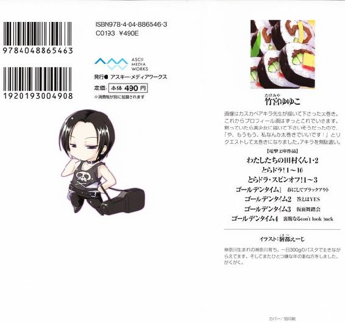
竹宮ゆゆこ
画像はカスカベアキラ先生が描いて下さった太巻き。これからプロフィール画はずっとこれでいきます。黙っていたら美少女に描いて下さいそうだったので、「や、もうもう、私なんか太巻きでいいです！」とリクエストして太巻きになりました。アキラを無駄遣い。
イラスト：駒都えーじ
神奈川生まれの神奈川育ち。一日３００ｇのパスタで生きながらえてます。そしてまたひとつ嫌な年の重ね方をしました。がくがく。
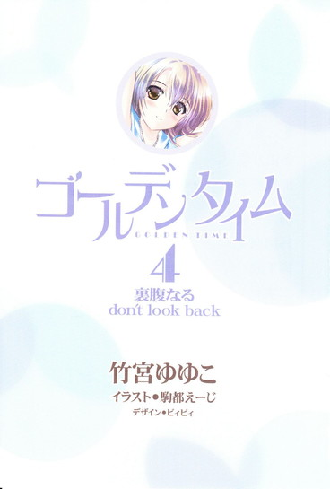
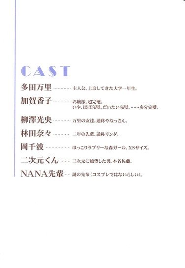
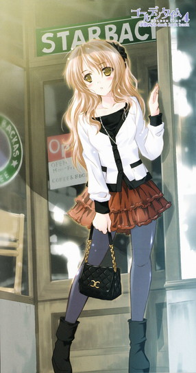
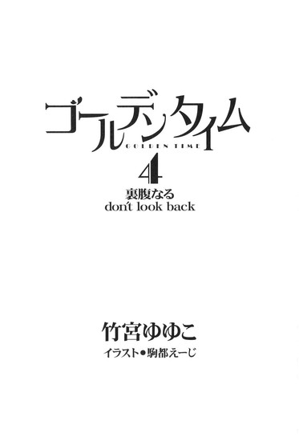
あの水曜日から、もう十日が過ぎていた。
二百四十時間。
気がつけばこんなにも時は経ち、早くもあれから二度目の金曜日。スポーツバッグを制服の肩に担いで教員室へ向かう万里の背中を、音もなく寒気が駆け上がる。
十九時を回った真冬の校舎は静かに暗く冷え込んでいた。他の生徒の姿はもはやない。教員室以外の照明も消されてしまって、廊下を一人歩いていく上履きの足元を照らすグリーンは非常灯の光。
万里が歩くテンポにあわせて、手の中で部室の鍵がカチャカチャと鳴った。青いのと黄色いの、二枚つけられたプラスチックのタグがぶつかり合って音を立てているらしい。こんな小さな音に、今まで気づいたことはなかった。
部活の最後に用具を点検・確認し、みんなが帰った後に部室の鍵を教員室に戻すこの係は、陸上部では「大トリ」と呼ばれ、二年生が持ち回りで順番に分担することになっている。これまで万里は何度も大トリを務めてきたが、一人でやるのはこれが初めてかもしれない。
かもしれないというか、そうだ。初めてだ。
万里は一瞬、足をを止めた。今まではリンダが毎回付き合ってくれていた。リンダが大トリのときには万里が付き合ってやっていた。
あれからもう十日。リンダを無視するようになってから、それだけの日々が過ぎた。
水、木、金、土、日、週が明けて月、火、二度目の水、木で、そして今日は金──頭の中で数えるように確かめて、再び足を動かす。歩き出しながら肩からずり落ちかけたバッグのストラップを掴み、ぐいっと強くかけ直す。これからはずっと「そう」すると決めた。......なんて改めて思うこと自体、自分に言い聞かせているようで妙に腹立たしいが。
なにも感じまい、と万里はすこし荒れて皮のめくれかけた唇を硬く結ぶ。ただ淡々と、黙々と、決めたことを実行する。一人、決然と顔を上げる。
自分はこのまま、永遠に、もう二度と、リンダと口をきくことはない。林田奈々とは関わらない。
軽くノックをしてから教員室の扉を開けて中へ入った。
寒くて暗い廊下をずっと一人歩いてきた万里には、室内の蛍光灯の光は強すぎた。目が眩む。そして暖房は効きすぎだし、そのせいで空気は乾燥しすぎている。何度か瞬きを繰り返しながら、入ってすぐ脇の壁のフックに鍵を引っ掛ける。
「失礼しまーす、陸上部戻しまーす、ありがとうございましたー」
おーう、とおざなりな教師の声の方向へ頭を下げ、そのまま尻からあとずさりするように退室して扉を閉める。
そして再び、寒くて暗くて静かな廊下。真冬の世界。
本日の大トリのミッションはこれで終了だった。
また一人になった廊下で、万里は我知らず小さく息をつく。首に引っ掛けていたウールのマフラーを女子みたいに口元までグルグルと巻き上げ、首の後ろで適当に結ぶ。
いくら静岡が温暖な土地でも、今は二月。
外はとっくに陽も落ちて、きっと相当寒いだろう。目をやった窓ガラスには、斜線を勢いよく描いたように水滴が次々ついていて、どうやら雨まで降り出したようだった。30％の降水確率に賭けて折りたたみ傘を持ってきた甲斐があった。
玄関へ続く暗い階段を、万里は、足を踏み外さないように注意深く降りていく。静まり返った踊り場に、上履きが滑り止めのゴムを貼った金属の縁を踏む音だけが。パキッ、ポキッ、と妙に白々しく響く。
あの水曜日の大トリはリンダだった。......リンダも、こんな間の抜けた音を一人で聞いただろうか。少なくとも自分の耳の穴は残響で完全に塞がれていたが。
──万里のことなんか好きじゃない！
「......」
リンダが発した、そんなひと言の残響に。
思い出したくないのに、やっぱりまた思い出してしまう。俯きかけて、手すりを掴もうと伸ばした指先がいきなり静電気に弾かれる。痛みに驚いて、万里は冷えた金属から手を離す。なんだよ、と口の中で不機嫌に低く一人ごちる。ふてくされて、ポケットの奥までかじかむ両手を深く突っ込む。
なんだよ、本当に。
なんなんだよ。
あの日からずっと、万里はそればかりを思っていた。一体なんなんだよ、と。のしかかり続ける重たい不機嫌に、のんきと評されることの多かったとぼけヅラも柔軟さを忘れつつある。
先週の水曜日、大トリのリンダが部室の鍵を持って出てくるのを、万里は先に階段で待っていた。
しかしリンダはまだ残っていた連中と雑談に興じてでもいるのか、なかなかやってこなかった。だから万里は痺れを切らして、部室へ戻って呼びにいこうと思ったのだ。
薄いドアの前に立つと、向こう側から女子たちの甲高い笑い声がはっきりと聞こえて、その中にはリンダの「なんでそーなるんだよ！」と喚くような声も混じっていた。
やっぱりな、と半ば呆れながらドアノブに手をかけ、回そうとし、
「えー、うそ！ 違うんですか!?」
「私ら全員、絶対リンダ先輩と万里先輩は付き合ってるって思ってたんですけど！」
動けなくなった。
万里は一人、間抜けにも、感電でもしたみたいに目を丸く見開いたままで立ち竦む。今のは一年の女子たちの声だったと思う。しかし何事なんだ。こいつら一体、いきなりなんの話をしている。
立ち聞きするつもりなどなかったが、そもそもが丸聞こえというか、薄いドアなどたいした防音効果もないというか。万里の耳には女子たちの会話......いわゆるガールズトークというヤツが、そのまま筒抜けに聞こえてしまっていた。
野郎は立ち去るべきだろうか。困惑したままとっさの律儀さでそう思うが、
「思ってたっていうか思って『ます』よぉ！ なんで隠すんですか～！」
「ほんとほんと、先輩たちって超仲いいし、お似合いのカップルに見えるし、第一いっつも堂々と、楽しそうにくっついてるじゃないですか！それで付き合ってないとか、逆にありえないんですけど～！」
ドアノブを掴んだ半端な立ちポーズのまま、万里はしかし、まだ動けない。
......そんなわけねえだろ！ さらに逆にありえないんですけど！だとか、入れたいツッコミも声にならず、棒立ちのままで虚しく喘ぐ。
自分とリンダが付き合っていると思われている。
結構な、衝撃だった。
だってそんな。自分とリンダが付き合っているだなんて。この自分と、あのリンダが。カップルに見えているなんて。万里には本当に、思いもよらないことだった。
確かに、自分はリンダと仲がいい。妙にウマが合うのだ。笑いのツボもやたらかぶって、一緒にいれば楽しくて、会話もノリもポンポンと、お互い打てば響くようだった。遠慮なくドシドシ構い合って、リンダといるのは居心地がよかった。だから万里は教室でも部室でも、どこにいても、いつでも、まずリンダの姿を真っ先に探した。
でも、それだけのことと思っていた。
そりゃもちろん、リンダは異性だ。知っている。女子だ。わかっている。野郎の友人たちとは同じじゃない。長い髪はサラサラだし、白い肌もスベスベだし、走るフォームは綺麗だし、笑うとくしゃくしゃになる目元を黙って見つめていたくなる時もある。口元も。唇と肌の境目付近とかは特に。リンダの唇はほんわり淡い桃色で、いかにも柔らかそうで、自分のとは全然違って見えるのだ。触れてみたらどんなだろう、と想像したこともある。そんなこと野郎どもには一度だって、一秒だって思ったことはない。
でも、だからって──だから、っ、て。
......て？
考えてみて、はた、と万里は息を詰めた。
リンダと付き合うなんてありえない、とはなから決め付けるほどにありえない理由など、言われてみれば、見当たらない。
こんなにも気が合うし、仲がいいのだから、別にそうなってもおかしくはないのか。
事実、端からはそう見えているわけだし。
リンダは、かわいいし。
「え......っ......!?」
今まで気づかずにいた可能性を突然意識したのと同時、万里の頬がカッといきなり熱く火照った。
見ればきっと火の玉ほどに真っ赤になっている。いきなり目蓋の縁も熱い。睫毛が燃えそうだ。すさまじく意味不明の動揺に襲われて、万里は掴んだドアノブにすがりつくようにしてグラグラ揺れ始める身体を支えた。突如踊り狂うように跳ね始めた心臓の鼓動に合わせて地面が揺れる。脳みそが沸騰しそうな気がする。
わけがわからなくなって思わずぎゅっと目を閉じ、
「やーめーろっつーの！ 君らあれだろ!? バカだろ!?」
リンダの声を聞いた。
全身が耳になったかのようだった。いやむしろ人間パラボラアンテナ状態。身体に備わる受容体のすべてが、ドアに隔てられたリンダの方へ向いている。
必死になっている自覚はあって、うそだろ、と万里は己に問いかけた。
意識しただけでいきなりこんなふうになってしまうなんて。脳裏に浮かぶリンダの笑顔が、光に滲むように、淡く溶けていくように思えてしまうなんて。どんだけ単純なんだ、俺は。
「私と万里はそんなんじゃないんだって！仲いいっていうか、なんとなくお守り役みたいになってるだけなの！ほら、万里って頼りないじゃん、男っぽくないっていうか！だからなんていうか、あいつのことはほっとけないっていうか！」
あーあーあー、はいはいはーい、と不敬にも先輩であるリンダをからかうような抑揚をつけて、何人かの女子が裏声で合わせる。
「な、る、ほ、どー。つまりリンダ先輩は、万里先輩が好きだからほっとけない、と！」
脳の温度は極限まで高まったかと思われた。
万里はもはや、息をすることさえ忘れていた。心臓は今も異様な速度と圧力でドクドクと血液をポンプしまくっている。リンダが自分を好き、なんて。
まさか、まさか、そんなわけ......
「ちーがーう！ 第一、私あいつのこと男としては見てないもん！つまり、そういうんじゃないの！」
「......」
万里は固く閉じていた目を見開いた。
あれ、とあまりにも間抜けな声がポロリと零れて、それを発したのが自分であることにはまだ気づかない。
リンダの声は、言葉は、もちろんはっきりと聞こえていた。意味も意図も明確で、
「好きじゃない！」
──冷たい酸素が今度こそ、突然ひゅっと脳細胞の深くに沁みた。
開いた目がなにを見ているのか自分でもわからない。万里は一瞬、この身がどこにあるのかさえ忘れていた。
たった一人、急にポーンと空中に放り出されたような気がする。
抗いようのない強い力でいきなり鷲掴みに引っ掴まれ、思いっきり高く投げ飛ばされてしまって、そして、
「またまたー！ 照れてるだけですよね、本当は好きなんですよねー？」
「いいや違うね！ あんなヤツ、ぜんっぜん、好きじゃない！」
そしてただ落下していくだけ──というか。
安全ネットなどあるわけもなくて、叩きつけられて無残に死ぬべき墜落地点さえ見つけられないというか。
一気に頭部へ高まった血液が、同じ強さで今度は足元へ降りていく。血の気が引く、というのはこういうことかと思う。
「万里のことなんか好きじゃない！」
ドアノブが温かい。
違う。
掴んだこの指が、冷えすぎたのだ。
なんなんだよ、とか。
シンと急激に静まった胸のうちで思う。......なんなんだよこれ。なにをやっているんだ、自分は。あれ、じゃねえ。一人で勝手に急上昇。乱高下。急降下して、声にもならない大騒ぎ。動くこともいまだできない。
ほんの数秒のことだったとはいえ、あっさり舞い上がりかけた自分の馬鹿さはどうだ。この単純さ。この大いなる勘違いぶり。ジャイアントかっこわる。すべてが恥ずかしくて呪わしい。厭わしくてたまらない。みっともなくて目も当てられない。あまりに見事すぎる独り相撲。超のつく激痛。
万里は我知らず、唇をきつく噛み締めて伏せた顔を上げた。ちょっと大き目の制服の肩が、震える息に上下する。親の期待過剰だった。入学時の想定ほどには万里のガタイはでかくなっていない。まあまだ成長中だ。これでも去年よりは背も伸びてるし。
それに、別に。だ。
そんなの。
こっちだって。
リンダのことなど、好きじゃないし。
自分を好きじゃない、とか、別にそんなのわざわざ言われなくたってわかっているし。
ただ、
「......頼りなくて、男らしくなくて、お守り役なんかさせて悪かったな」
吐き捨てるみたいに小さく一人ごちたのと、部室のドアがいきなり内側から開かれたのが、ほぼ同時だった。ドアを開いた一年生の女子が、そこに突っ立っていた万里にぶつかりかけて息を飲んだのがわかった。
部室の中には一年生の女子が三人と、リンダがいた。
リンダの顔は見なかった。
万里はそのまま踵を返し、わかりやすく気まずい沈黙を背後に振り切るようにしてどんどん前へ歩いた。
一度も振り返りはせず、そのまま下駄箱でシューズを履き替えて、学校を出た。
最初の信号に差し掛かる頃には、もう二度とリンダとは口をきくのをやめよう。関わるのをやめよう。そう決めていた。
好きじゃないなら結構だよ、と。どうせこのまま無関係の他人になったって、リンダは一向に構わないのだろう。なんとも思いはしないのだろう。だったらそれでいいじゃん。なかったことにして忘れてしまえ。こっちだって、自分を好いてはいない人間に無理やりお願いしてまで仲良くしてもらいたいわけではないのだ。
こんなにも腹立たしいのは、どう思われているかも想像せずに、疑いもせずに、当然の権利みたいなツラをしてリンダの傍にいた自分が恥ずかしいからだ。
万里はそう思った。とんだピエロぶりだった。丸二年も、リンダは表面上は親しげに寄ってきつつ、腹の底では自分を見ながら「好きじゃないなこいつ」とか考えていたのか。
（好きでもない俺なんかのお守りに貴重な時間を無駄にさせて、どーも申し訳ありませんでした！どーぞこれからは好きなヤツのために限りある人生の時間を消費してください！）
──背後に残したものを振り切って、逃げ出すみたいに家までの道のりを駆け出しながら、万里の視界は白く塗り潰されたようだった。
そうして、それから十日。
リンダはこの十日間というもの、「おっす万里！」明るく話しかけてこようとしたり、「ねえ、万里......」そっと話しかけてこようとしたり、「お菓子食べなーい？」遠まわしに話しかけてこようとしたり、「その、こないだのことなんだけどさ......」直接的に話しかけてこようとしたり、「今日の部活おつかれー☆」メールで話しかけてこようとしたり、「ウヴォイッ！最近どお!?やってる!?あ、バナナ食う!?」密林から降りてきた類人猿の使者・アニを使って話しかけてこようとしたり。とにかく様々な手段を駆使して万里とコミュニケーションをとろうとしていた。
万里は、そのすべてを無視してスルーした。
なぜならもう二度と関わらないと決めたから。
「......うっ。やっぱさっぶ......！」
通学用のローファーに履き替えて、今日の大トリを終えた万里は一人、人気のない生徒用玄関から外へ出た。
途端、顔面に吹きつけてきた真冬の冷たい北風と、凍りかけた雨粒に息を飲む。
ちゃちな、しかしないよりは全然マシな折りたたみ傘をバサバサと開き、たった三段の階段を下りて校門へ向かおうとしたそのときだった。
玄関から階段の脇へ繋がる、氷雨が吹き込む庇の下だ。
冷たい暗がりに傘も差さず、ぽつんとしゃがみこんでいるのは、黒板みたいなダークグリーンのダッフルコート。長い髪をポニーテールに結った人影。
夜の闇に灯ったかすかな光みたいな、真っ白な顔。
「......」
「......」
万里の姿を見て立ち上がり、喘ぐように幾度か口を開きかけ、しかし結局リンダはなにも言わなかった。万里もなにも言わない。
無言のまま、数秒が過ぎる。十日前までは友達だった二人はお互いの足元付近をただ見やる。
先に動いたのは万里だった。
濃紺の傘で半ば顔を隠し、立ち止まったことすら認めたくないという勢いで再び歩き出す。リンダの傍らを通り過ぎる。置き去りにして、先へ進んでいく。後ろは振り返るまいと決然と。
しかし、小さな声が万里の名前を呼んだ。
寒さのせいか、リンダのその声は引き絞られたみたいに震えていた。
万里の足が止まった。
......傘が、ないのだろうか。
振り返りはしないまま、夜にぽろぽろと光る氷の雨の中、背後のリンダの息遣いを聞く。
いつからそこにいたんだろうか。ひょっとして、自分を待っていたんだろうか。こんなに寒いところで、一人で。──好きでもないヤツのために、なぜ。
傘が、欲しいのだろうか。
祈りたたみ傘の柄を握り締めた自分の手に、万里は目をやった。友達みたいにこの傘の中にリンダを入れてやることは、絶対にできないと思う。
でも、それなら、くれてやってもいい。無関係の他人にだって、それぐらいの親切をしてもいいだろう。
あれは、別に友達でもなく知り合いでもなく、好きとか嫌いも関係ない、冷たい真冬の雨の中で困っている一人の見知らぬ女子。ならば、親切にすべき理由はあると万里は思った。
それでももちろん口をきく気などは一切ないまま、万里は、後ろを振り返った。この傘を手渡してしまったら、そのまま駆け出すつもりだった。
雨に髪を濡らしたまま、リンダは万里を見ていた。ずっと見ていた。二つの黒い瞳が、静かに弱く光っていて、夜に瞬く氷の雨粒そっくりだった。ゆるりと溶け出してしまいそうで、万里は思わず、呼吸を忘れた。
やがて、だ。
ゆっくりとその唇が動いて、
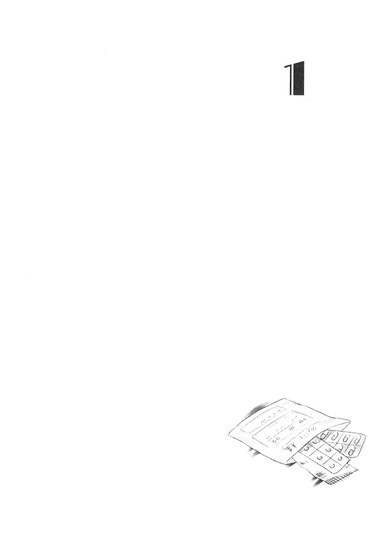
１
（リンダ......）
「......って......」
布団の中で、万里は目を開いた。
リンダ、って──。
ほとんど愕然と、自分の漏らした吐息の熱さを頬のあたりにじんわり感じる。
夢を見ていたのだろうか。
身体の芯から腹の底に滴って溜まる体温の澱は、しかし、余韻と呼ぶにはあまりにも生々しすぎる。心臓がまだドクドクと高鳴っている。
頭までかぶったタオルケットは寝汗にじっとりと湿っていた。この薄い闇の中には自分の体臭がこもっていて、こうして手足を縮めて身を丸めていると深い巣穴にもぐった動物になった気がしてくる。
身を捩るようにしてもぞもぞと外界に顔を出すのと同時、枕元で携帯のアラームが鳴った。
朝だった。
目の前の世界は、見慣れた１Ｋ。
一人暮らしの、自分の部屋。間の抜けたベージュと白と、木目調の室内。
自分がやったことながら、ひどい散らかりようだと万里は思った。ベッドから身体を起こさないまま、目だけを動かす。テレビ正面の定位置には開いたままのノートパソコンと、飲みかけのペットボトルと、スナック菓子の袋。そして割り箸。手を汚すのが嫌で、万里は箸でポテチを食う。ポテチのために自前の箸を洗うのもめんどくさいから、まるで弁当を買った人のようなツラをして「お箸つけてください！」とコンビニのレジで言う。今のところ、断られたことはない。
その定位置の座布団を中心に、充電器、ガム、バッグ、財布、漫画、脱いだソックス、鼻をかんだティッシュ、指を拭いたティッシュ、よくわからないティッシュが汚い銀河系を形成し、さらにその外宇宙には脱いだ服やら講義のプリントやらルーズリーフやら郵便受けにつっこまれていたチラシやら、あらゆる適当なものが整頓できないまま漫然と散らかっている。
そのフローリングの床に伸びる、平行四辺形。
あれはスツールの影。
西と北、二面に開かれた窓にかけた卵色のカーテンの隙間からは、直線で切り取ったように朝の光が射して、埃がふわふわと踊っているのが見えた。朝の世界だ、などと思う。あの日差しの眩しさ。今日も天気は良さそうだ。
一限に出るならもう起きなければいけない時間だった。
しかし起きるどころか、携帯のアラームを止めることすらできず、万里は寝転がったままで浅い呼吸に胸を上下させる。
伸ばしかけた腕は重く、足には力が入らなくてタオルケットを跳ね上げることもできずにいた。枕に後頭部を埋めたまま、ただ天井をぼんやりと見上げる。
朝の光が睫毛の向こうにキラキラと眩しい。先月床屋で整えてもらって以来、自分ではノータッチの犬みたいなボサボサ眉をしかめ、万里はけたたましいアラームの音にただ耐える。
東京には、七月が訪れていた。
上京してからもう三ヶ月が経つのだ。
肌がべたつくのはきっと夜中の暑さのせいだろう。
自分の体温と汗が沁みたベッドに寝たまま、万里は額に手の甲を押し付ける。額は熱くて、ねっとりとして、自分の身体ながら触れたこの手が気持ち悪い。
一体夜の気配は、どこへ行ってしまったのだろう。
すべては夢──だったのだろうか。
ぬるく湿った夏の朝に目を瞬かせ、万里は額に張り付く前髪を指先でなんとかかきあげる。あれらがすべて夢だったなんて、とても思えなかった。そんなわけがないと思う。
夢ではなかったその証拠に、心臓の鼓動に合わせて脈打つように唇の端が痛んだ。ひどく熱をもっていて、腫れているようで、きゅっと唇を閉じることができない。恐らくは、いかりや状態、ないしは松本清張状態、もしくは唇がでかいほどイイ！とされる部族の激マブ状態......いや、もうなんでもいい。とにかく腫れているのが自分でもありありとわかる。
昨夜、万里は部屋の中ですっ転んだのだ。
口元をしたたか床に打ちつけて唇を切った。ひどく流血し、それでも前歯が祈れなかっただけでもラッキーだった、と思わなければいけないような転び方だった。
痛みとショックに震えながら、とにかくティッシュで傷口を強く押さえることしかできなかった。顎まで滴るほどの出血だったが、しかし救急病院に駆け込むのも大げさな気がして、どうしようか迷っているうちに失神するみたいに再び寝入っていた......らしいが。
枕に敷いたタオルには血の跡が点々と。シーツにも。Ｔシャツの胸元にも。その辺に散らかっているティッシュにも、乾いた血の色。
そして、
『リンダ！』
「......っ......」
──甲高い悲鳴のように、携帯のアラームはまだ鳴っている。
見えない誰かが泣き叫んでいるみたいな、ひどく耳に障る音色だった。
万里は思いっきり、目を閉じた。やけに不自由に思える右手で携帯をなんとかひっ掴み、アラームを止め、そのまま転がり落ちるようにしてベッドから降りる。
しかしフローリングについた膝に力が入らず、そのまま老人のようにぐんにゃりと身体は祈れた。上体を起こしていられない。我が身を支える力がない。
五体投地の拝礼みたいなポーズで床にうずくまり、携帯を取り落とした手で顔を覆い、
「......なんで、こんな......」
呻いた。
そうしてフラッシュバック──そう表現するしかない、この、爆発的な感情の波の高揚に耐える。
今、自分自身になにが起きているのか。夜になにが起きたのか。正確には理解しきれてはいなかった。自分の身に起きたことで万里に把握できているのは、昨夜、一時的に「過去の自分」が蘇った、ということだけ。
数時間前の深夜、眠りから唐突に覚めたこの身体には、確かに記憶を失う前の多田万里がいたのだ。
ああ！ 戻れている！ 身体に！ ......水面から躍り上がる魚のようにそう思ったのを覚えている。誰がそれを思ったのか、という人格としての、主体はもはや定かではなく、ただこの肉体が、というかこの脳が、そう思ったのだとしかわからない。
そして驚きと歓喜、困惑、あせり、恐怖、あらゆる想いが一気に指向したのは、たった一つの事柄だった。
『リンダのところへ帰りたい！』
多田万里は、それだけを願った。
母のもとへでもなく、父のもとへでもなく、家へでもなかった。万里が帰るために全力で駆け出そうとしたその先には、一人の女しかいなかった。
その女は林田奈々という名前で、リンダと呼ばれていて、しなやかな身体をしていて、かつての女友達で、今はサークルの先輩で、そして、それから、それで、
「......っ、......っ」
それで。
──喘ぐたびに心臓が掴み絞られるようだ。
どういうメカニズム、なのだろう。
蹲ったままで身を捩り、万里はなんとか深呼吸を繰り返そうと試みる。ゆっくりと息を吸い、それを吐き、落ち着いて冷静な己を取り戻そうとする。しかし胸も腹も戦慄くように強張って、胸郭もなにかに怯えているみたいに狭く縮こまって、全然まともに呼吸ができない。半ばパニック状態、酸欠寸前と過呼吸の狭間で、万里は無様に横隔膜を震わせて額を床にこすりつけた。
現実逃避したがる思考が、まるでこの姿って『泣き女』みたいだな、などと思う。テレビで見たアジアのどこかの風習だ。葬式で、わざと大げさに狂ったように号泣するという、いわゆる『サクラ』の方々の姿。ほとんどトランス状態で絶叫しつつ泣き喚くプロの女たちの仕事を見ながら、万里は「こんなの見たら逆に俺、引いちゃうけどな」などと思っていたが。今、まさにあんな格好で一人、万里は背中を激しく上下させている。真正面からハイパーソニック食らったみたいに、細胞全部が破壊寸前の凄まじさで震動させられている。
ぐちゃぐちゃだ、もう全部。
そんなふうに自分の姿を思う。
記憶を失う前の自分がリンダに片想いしていたのは、とっくにわかっていた。
写真の中でリンダと並んで笑う顔を見ただけで、そこはやっぱり基本、自分自身。これは惚れてるな、と。完全に好意もろバレだぞおまえ、ていうか俺、と。
今、大学生になって改めて出会ったリンダ先輩のことだって、万里は事情も知らぬ最初のうちから相当憎からず......いや、かなり好ましく思っていた。容姿にしても内面にしても、そして後に明らかになった過去の縁も込みで、自分をサポートしてくれる存在そのものが心からありがたくもあり、万里にとって、リンダはとっくに「特別な人」だった。
加賀香子に出会って彼女と恋に落ちていなければ、今頃はリンダへの二度目の片想いに狂っていたって全然おかしくない。
自分がそんなふうに思っていたのも知っている。
でも、だ。
だからって。
たった一晩の、というか数分の、いや、多分ほんの数秒の、記憶を失くす前の自分がこの肉体に戻ってきたあの出来事だけで。
リンダのもとへ駆け出した時のあの想いが、長い時間の積み重ねと多くの共有体験に裏打ちされていたのだろう強烈な恋慕が、そのまま今の自分にインストールされてしまったかのような、この状況はなんなのだ。
あの「帰りたい！」という強烈な、身も引きちぎれるような向こう見ずな切望だけが、記憶は戻らないままで、朝を迎えた今の万里の心に丸ごと居座っているのだ。
本当に、一体なんなんだ、と言いたい。誰かに問いかけたい。
一夜にして、心はこれほどに奪われていた。
（リンダは今なにをしているんだろう）（俺のことを考えているだろうか）（リンダは俺をどう思っているんだろう）（リンダにとって俺はなんなんだろう）
──本当に、奪われてしまったと思う。
他のことを、何一つまともに考えることができなくなっている。驚くほど、思考の芯がぐにゃぐにゃになってしまっている。別に、元から頭脳の明晰さをウリにしているタイプでもないけれど、それにしても今の状態はひどいと万里は我が事ながら思う。
塀の上に座り込んだ猫みたいな姿勢で、呆然と両手の中から顔を上げた。意味がわからない。ここにリンダがいてくれたら、なんて脈絡もなく願っている自分にも気づく。意味が、本当にわからない。
スツールを見ては思う。あそこにリンダが座っていてくれたらいいのに。キッチンを見ては思う。キッチンにいてくれたらいいのに。窓辺を見て思う。窓辺にいてくれたらいいのに。ここに、自分の傍に、今リンダがいてくれたらいいのに。そうしたらこの苦しみも満たされない心も全部解決するのに。
って、なんなの......。
己に入れるツッコミすら切れ味が鈍すぎる。分厚い包丁の背でただぼこっと殴られただけ、痛いだけでキレテナーイ！
......ふざけてみても、誤魔化せはしない。押し流されていくようだった。
なすすべなく、思考のすべてが、感情が、自分自身が、リンダという一人の女へ向かって渦を描きながら奔流を形作る。どうしても、この渦から抜け出せない。息を止めても、もがいてみても、これまでの通常運行状態に戻れない。パンパンに中身を詰め込まれて限界まで膨らまされてしまった風船のように、張り詰めきって余裕など寸分もありえない。
よくも、こんなんで日常を送っていたものだ。かつての自分のツラを思い出す。こんなにもすべてを一人の女への想いに冒された状態で、勉強をしたり、試験を受けたり、部活をやったり、他の友達と遊んだり、高校生としての日常生活をこなしていたのだと思えば、かつての多田万里の苦労がしのばれるというものだ。
（......こんなだから、受験に滑るんだよ......）
他人事みたいにそう一人ごちて、それでも能天気丸出しに奥歯まで見せて笑っていた写真の中の顔を思い、
（ていうか......）
写真。
すぅっと一瞬、背中が冷えた。
さすがに、この件を脇に置いておくことはできない。あの、リンダと笑顔で写っている写真の行方が知れないのだ。確かに置いたはずの場所から忽然と消えていて、状況を鑑みるに、『誰か』が見つけて持ち去ってしまったとしか思えなかった。
そしてその『誰か』、が、もしも『彼女』だとしたら──
「......あ、あ、あ......っ！ もうっ！」
最低最低最低、俺は最低、俺が最低、俺は死ぬべき、ていうか考えないと、とにかく考えろちゃんと、念仏みたいにそう呻きながら万里は髪をぐしゃぐしゃにかき回し、勢いをつけて身体を跳ね起こした。
途端、世界がグルンと大回転。「う!?」と間抜けな声を上げ、立ち上がれずに、バンビが如く再びへたりこむ。
視界が、メリーゴーラウンドに乗っているかのように回り続けている。そしてまっすぐ座っているつもりなのに、自然と身体がどんどん傾いて斜めになっていく。気がつけば乗り物酔いでもしたみたいに、胃のあたりから吐き気がこみあげてくる。
ひどく体調が悪いのだ。
むっつりと顔をしかめて、万里はオカマっぽい斜め座りで床に手をつき、倒れてしまいそうな身体を支えた。この不調は、ずっとジンジンと疼き続けている唇の傷のせいなのだろうか。そんなにもひどいのか。さすがに恐ろしくなってきて洗面所の鏡で顔を見ようと思うが、やっぱり四肢に力が入らず、立つことも歩くこともできなかった。
仕方なく、万里は這うようにして部屋中央のローテーブルに膝でいざり寄る。置いてあったゴージャスミラーは香子にもらった思い出の一品だ。溺れる者が必死にすがりつくみたいに手に取って開き、自分のツラを確かめる。
かくしてそこには、
「おお......!?」
呪われしブサメンが降臨していた。
なんてこった......としばし無言で息を飲む。題して、紅の豚野郎、という感じであった。
真っ先に目に入った唇の傷は、想像していたよりもずっとひどい。下唇全体が熟れすぎた野の果実......カラスウリかなにかのように見える。爆ぜた皮の裂け目みたいにＹの字を描いているのが傷口だろう。黒っぽく乾いた血の跡も生々しく、目を背けたいような鮮度でパンパン、プルプル、ぼてっと腫れ上がってしまっていた。打ち付けた付近は一帯、濃い紫の内出血。まあ典雅といえば典雅で、だって紫といえばかつては皇帝にしか許されない禁色の──やめよう、今ふざけている心の余裕はないのだ。
目を背けたくなる腫れは顎の辺りから頬、目元にまで達していて、万里の顔の容積は、通常の一・五倍ほどにも膨らんでいた。
目は不遜な新生児そっくりに開ききっていないし、妙にぬらぬらてかてかと汗ばんで肌もてかり、んふー、んふー、と鼻で息をしつつ閉じない唇をだらしなく半開きにしている様子など、これが己のツラだとは七度生まれ変わろうと認めたくない、どストレートな不細工の剛速球であった。受け止めきれるかこんなもん。
そして顔の色自体も尋常ではないのだ。真っ赤に火照って丸々とふくらみ、手で頬やら額のあたりを押さえてみると、火でもついたかのように熱い。そういえば、さっきも触れた額がやたら熱かったっけ。
「ていうか俺......熱あるのか？」
この眩暈、気持ちの悪さ、そして顔の熱さ。体温計は持っていなくて確かめようもないが、状況証拠は十分だ。
落ち着いて自分の感覚を確かめると、七月の朝の暑さよりは、骨の髄からしんしんと伝わるような冷たさも感じる。寒気がしているのだ。
万里は壁伝いになんとか身を起こし、盛大によろめきながら、とりあえずトイレへ向かった。半ば倒れるように座り込んで用を足すことはできたが、出るときはぬめっと四つんばい。これで髪が長ければまるで貞子だ。
床に再びどさっと倒れこみ、立ち上がれないまま根性でパンツだけは七割がた引き上げて思う。これはちょっと、本当に、体調的な意味で色々無理かもしれない。自力で治せる気がまったくしないのだ。時間経過とともにもっと悪くなっていきそうな気さえする。
確か、近所に内科外科を標榜したクリニックがあったはずだった。散歩中に見かけた記憶がある。
どうにかこうにか身を起こし、ケツの三割をパンツに納める。保険証入りの財布と携帯、家の鍵をひっつかみ、パン一だった下半身に手近に脱ぎ捨ててあった部屋着のハーフパンツを穿き、万里は玄関へよたよたと向かう。
サンダルにふらつく足をなんとか突っ込んで、ドアを開き、外廊下へ出る。朝の直射日光を食らって目が眩む。鍵もなかなか閉められなくて、ドアノブを何度も意味なく鍵で打突。座り込んでしまいそうになりながら数回目のトライでなんとか鍵を閉め、歩き出し、
「......あああ......」
くらっ、と。やっぱりだめだった。世界が再びメリーゴーラウンド。
薙ぎ払われるみたいに真横へぶっ倒れたその身体が、結構な勢いで隣の部屋のドアにぶつかった。そのまま立ち直れもせずにへたりこむ。
隣の部屋、といえば、知らぬ顔でもない。万里は力の入らない拳でそのドアを繰り返し連打した。
ややあって、万里の耳にドア越し、のしのしのしのし、と不機嫌を丸出しにして隠す気もない足音が聞こえる。ぐばっ、と怒りとともに開かれたドアが、とどめとばかりに倒れた万里の頭を打つ。
「うるっっせえんだよ！」
地獄の底から響くみたいな寝起き剥き出しの低い声は巻き舌で、しかし、
「......あ？」
戸口に倒れている哀しいほど不細工な生き物が隣の下級生だということには、すぐに気づいてくれたらしい。
薄く開いた万里の目には、幸運なのかそうでもないのか、戸口に仁王立ちしたその肢体が下からのアングルでばっちり見えていた。
白すぎる肌を視線で繰り返し上下に辿ってしまうのは、嘗め回すように見たいから、では断じてなくて、気分が悪すぎて眼球の動きさえ思ったようには制御できずにいるから。
細い身体にオーバーサイズの黒ドクロＴ。裸足の爪も夜色の漆黒。不吉なほどに白い腿、少年のように引き締まった脛、足首。貝殻みたいな踝の骨。再び上部へ目をやれば、やはり黒の......なぜだか男が穿くようなボクサーパンツ。
こないだ何気なく覗いてみたベランダに干してあったのはＴバックだったじゃないすかぁ～、なんであれじゃないんすかぁ～、などと言おうものならこのままためらいなく踏み殺されるだろう。それぐらいはわかるから、万里はぐったりと顔を横向けて、パンツからは目を逸らす。
苛立たしげに顰められた眉はパンクな細眉。メイクなしでは美形の子供みたいな顔立ち。顎のあたりで切りそろえられた漆黒の黒髪は珍しくちょっと跳ねて寝起き感。女らしくはない、痩せすぎた小柄な身体。
指先で摘むように持っていた煙草を深々と一口吸う。ジジジ、と小さな火の音。肺の奥にまでヤニを沁み込ませたいみたいに薄い唇をつぐんでちょっとそのまま息を止めて、ＮＡＮＡ先輩は、万里を見下ろしていた。
ややあって、ほわん、と煙が口元から漏れる。
「おまえ、なにやってんの？」
「......遭難、してます......」
雨で！ 不良が！ 捨て犬を！ みたいなシチュエーションだったかもしれない。
「ＮＡＮＡ先輩って......」
万里は万感の想いをこめてうっとりと傍らのその人を見上げた。
「ほんっと、マジで、リアルに、超～～～～～、いい人！......だったんですね......！」
「むかつく顔してんなてめえ」
根性焼きでビンディつけてやろうか、と続けられたその声は不機嫌そのもの。
不機嫌のせいか煙草のせいかバンドのせいか、その全部なのか、低くざらついて掠れたＮＡＮＡ先輩の声は、しかし、やたらと耳に心地よかった。熱暴走した聴覚のせいかもしれないが、探海の底に反響する仲間のソナーのように万里には聞こえる。
ＮＡＮＡ先輩は、しっかりと万里の肘を掴んでふらつく身体を支えてくれていた。処方された抗生物質の入った薬局のビニール袋も、万里が落としたりしないように持ってくれている。
端から見れば、やや......いや、相当不審な二人組かもしれない。青白い顔をして超不機嫌なパンク女と、熱のせいで目ばかりを爛々と光らせた剛速球ブサイク（唇にでかいガーゼ付）。が、快晴の心地よい夏の朝空の下を、傍目には仲良く腕を組んでずるずると歩いていくのだ。
くすんだ赤と灰色の敷石を市松模様に組み合わせた歩道は、駅と商店街をつないでクリニックを中継し、万里とＮＡＮＡ先輩が住むマンションへと続く。足元にくっきりと黒く落ちるレース模様のような影は、イチョウの並木に青々と茂る葉。
薬局を出たときに見た時計は九時半をすこし回っていたが、頭上に降り注ぐ太陽の光はすでに肌を焼くほど暑かった。セミの声はまだ聞こえない。でも、この熱風に乗って今にもどこかから大音量で響いてきそうな予感。
万里はふがふがと不自由な唇を動かし、
「ほんと、ありがとうございます......俺、ＮＡＮＡ先輩のことをなんだか誤解してたみたいです......」
ＮＡＮＡ先輩を見上げたままで懸命に感謝の言葉を伝えた。
まっすぐ立っていれば、本当は万里の方が十センチは背が高いはずだが、足ぐにゃぐにゃ状態の今の万里の鼻先はＮＡＮＡ先輩の肩のあたりにある。
返事は、はん、と冷たい鼻息一つ。ＮＡＮＡ先輩の細い顎は万里のためになど微動だにせず、煙草を欲しているのか、さっきからイライラと舌先で唇を舐めている。
「ＮＡＮＡ先輩は、東京砂漠で舐められまいと虚勢を張っているうちにほんとに優しい隣人愛など忘れ果て、俺とかーちゃんが買ってきたうなぎパイも受け取ってはくれず、都会にかぶれて変わってしまった川口出身の過激なコスプレさんだとばかり......」
漆黒囲み目メイクなしでも十分冷たく鋭い視線が苛立たしげに万里を睨み返す。
「川口じゃねえよ。あとコスプレじゃねえよ」
「あ、すいません......えと、上中里でしたっけか......」
わ・ら・び、と低く唸る声はまるで檻の中の野獣。
それでも、だ。どうだ、このレアなシチュエーション。
かつてはギターで万里と香子を殴り倒したこともある、ノイズ系ポエトリーリーディング界の新鋭（よく知らないけれど）たる、あの、ＮＡＮＡ先輩が。このように、フラフラ状態の万里に付き添って病院まで連れていってくれるだなんて。一体誰がこの現在図を想像できただろうか。
少なくとも、万里には大いなる驚きと感激のアメージングなひと時だった。とりあえず立ち上がらせてもらえる程度に助けて欲しいと思ってドアをノックしたのだが、まさかここまでしてもらえるとは、本当に思ってもいなかった。
クリニックは思っていたよりも近く、万里たちが住むマンションからおよそ五分あまりの道のりではあったが、かなり待たされた間も、診察と処置の間も、近くの薬局で薬をもらうときにも、ＮＡＮＡ先輩は煙草も我慢してずっと万里に付き添ってくれていた。それどころか、持ち合わせの足りなかった会計時には金まで貸してくれた。
こんなふうに自分に優しくしてくれるはずのない超怖い人、すげえ危ない人、という印象があっただけに、感動もひとしおだった。まさしく、雨の中、捨て犬を助ける不良を見たようなやたら良いように底上げされた心地。
「......この恩は忘れません、一生......！」
蕨出身だということも忘れません、と万里はかすむ脳裏に京浜東北線路線図を思いながら一人しみじみ噛み締める。
「うるせえ。おら、ふらついてんなよ。しっかり歩けよ豚野郎」
寝巻きのままの黒Ｔにくったくたのところどころ擦り切れたジャージパンツ、ビーサンというなりで、ＮＡＮＡ先輩は万里の脇に手を差し入れてくれ、
「うおっ濡れてる！ ......脇汗かよ......！」
心底嫌そうに不健康な青白い顔を歪ませる。うふっ、と万里は、
「脇汗っす！」
熱のある奴特有の、不思議テンション。新生児アイズをキラキラさせて、傍らの『本当は優しかった不良』をねっとりと見上げる。図々しくくっついて寄り添いつつ、多分この人の人生にブラジャーという物質は必要ないんだな、なんて余計なことまでなんとなく思う。
「ていうかおまえはなんなんだよ」
「脇汗っす！」
「じゃねえよ。その様子はなんだっつってんだよ」
「唇の傷が化膿しかけて、熱出ちゃったらしいっす」
「......はーん。そんなんあるんだ。ま、すげーやばそうだったもんね見るからに。......もしかして殴られたとか？」
「は？ まさか。ミー、ミー。フロムミーフォーミー」
「うるせえだまれ」
「ゥワッチャゴナ、ドゥー」
「うるせえだまれころすぞ」
「あん、ＮＡＮＡ先輩......水臭いっていうかヤニ臭い......」
肩を貸してもらっているのをいいことに、万里はそのまま調子に乗ってＴシャツ越しにも骨が尖っているのがわかる細い肩に鼻を押し付けてみた。
「......それに、うわ、近くで見るとＮＡＮＡ先輩って目の下すっげえクマ......いぃぃーっ！」
頭頂部の髪を一掴み、藁束みたいにひっつかまれて問答無用、引き剥がされる。そりゃそうだよな、調子こきすぎた、などと今更思っても後の祭りだった。頭皮の痛みにショッカー構成員ばりの悲鳴を上げて歪んだ唇がまた痛くて、万里はもはや声も出せずにＮＡＮＡ先輩のなすがまま。そのまま二度と肩を貸してはもらえず、無言のＮＡＮＡ先輩に髪の毛を引き回されてマンションに到着する。
「おら、ちゃんと立て」
放り投げられるようにエントランスに放り込まれ、エレベーターに押し込まれ、降りるときも、
「いけ」
と、ひと言。人権などなき時代の死刑囚を断崖からシンプルに蹴り落とすみたいに、ケツをサンダルでキックされる。ただでさえ足元が定かではない万里は当然簡単にすっ転がり、
「ひ、ひどいじゃないすか......！ けが人で病人の俺をこんなふうに......すっごい優しいと思ってたらいきなり冷たく......はっ!?まさかそういうツンデレーションで俺の鼻先引き回して精神的に調教入れて手綱とったるとかそういう......」
「うるせえ」
「......リンダ先輩だったらきっと絶対もっと優しくしてくれるのに......！」
「ならよかったな。リンダ、パス！」
襟首を背後から掴まれて、さらにもう一度突き飛ばされた。蹈鞴を踏んですがりついた外廊下の壁際に、
「あーらーらー」
その人が、いた。
半ば根性試し気分で口に出したその名の、人が。
「......っ......」
なにも言えず、とっさの挨拶も出ず、万里は呆然と顎を落とすばかり。
その人はそんな万里の目の前にしゃがみこみ、ひどい顔を覗き込み、ついで目を上げてＮＡＮＡ先輩の顔を見やる。
「まさかＮＡＮＡ先輩......なにかの八つ当たりで隣の多田万里を思うさまボコボコに......？」
「あほか。なわけねえ。こいつにそんな興味はねえ」
待ち焦がれていたみたいに煙草を咥え、ＮＡＮＡ先輩は手の中の百円ライターをクルクルと苛立たしげに弄ぶ。
「こいつが勝手にこうなって、いきなり助けを求めてきたんだよ。ってわけで」
あたしはヤニ切れ。
端的にそれだけ言い置いて、ＮＡＮＡ先輩はそのままさっさと自分の部屋へ引き上げていってしまう。
バタン、とドアが閉ざされて、後に残されたのは、万里と、
「煙草やめたほうがいいと思いますよー......って聞いてねー。ていうか、びっくり。なに、なんなの。いきなりＮＡＮＡ先輩から『多田万里が病院送り』ってメールきてさ。もう驚いて、講義出るのやめてとりあえずこっちに来たんだけど、ていうか大丈夫なの？まじでどうしたのそれ？ケガした？」
「......」
「......多田万里？ 立てる？」
「......」
「......ちょっと、おーい？ どこ見てる？ 部屋、入らないわけ？」
「......」
──リンダ。が。
ピンチに、駆けつけてくれた。
今、ここにいる。
いるんだ──。
なぜだか泣いてしまいそうになって、万里は慌てて顔を伏せた。
＊＊＊
万里をベッドに寝かせて、一度部屋を出ていったリンダはものの十分もかからずに再び部屋へ戻ってきた。
「ただいまー」
ぎくっ、と
「っていうか再びお邪魔しまーす」
タオルケットに埋めた身体が、居心地悪く跳ねそうになるのを万里は堪えた。
リンダの手にはコンビニの白い袋と、ドラッグストアの黄色い袋。万里に見えるように掲げてみせて、
「薬飲む前になにか食べないとね。どう？ このへん、いけそう？」
ベッドサイドに膝をつくが、その距離が近いのだ。近すぎる。
熱でぼんやりしているふり──あながち演技でもないのだが──で、万里は目を閉じ、顔をぐったりと壁の方へ逸らす。
リンダがビニール袋から次々取り出してみせるのは、スポーツドリンク、ちぎって食べれる惣菜パン。ヨーグルトに、そして冷えピタ。
「どーよ？」
膝立ちで顔を覗き込まれ、
「......あっ、どもぉ～！」
上体を捩るようにして身を起こすなり、冷えピタを速攻で掴み取る。とりあえず全力でへらへら笑いつつ、パッケージをむしるように剥ぎ取って自分で額に貼り付ける。そうして枕に頭を戻し、ねっとり、リンダの頬のあたりを見やる。
「......なんなの多田万里、その物腰は」
「えっへぇ～、なんすかぁ!?」
「......変だよあんた」
「え～!? なんすかなんすかぁ～!?」
「......だから、こっちがなんなんだよ、ほんとに......」
おろおろ揺れる万里の視界は、実のところ、リンダの表情すらまともに判別できていない。どんな顔で、どんな目で、こんな自分の奇妙な態度を見ているのかもわからない。
ただあせっていた。そして困っている。戸惑っている。緊張している。そういうあれこれを取り繕うための表情を作るのだけで万里は必死。精一杯だった。
自分なりには一応、さっきＮＡＮＡ先輩といたときの屈託なき雰囲気を再現してみているつもり──ではあるのだが。
『どんな顔をすればいいかわからないの』
とは、友人である二次元くんの持ちネタである。割り勘の端数をちょっと多めに払ってもらったときや、学食でおかずを分けてもらったとき、トレイをさっと片付けてもらったとき、水をついでに持ってきてもらったとき、等々。そんなときに彼はしばしば頭髪をオールフロント気味に顔周りにもってきて、平坦な声で綾波レイを演じつつ、これを言いつつ、笑えばいいと思うよ、のセリフも待たず、自ら進んでほんのり微笑む。似てねえ！気持ちが悪い！と笑われるまでがお約束の一幕なのだが、今の万里はまさにこの心境だった。
リンダの前でどんな顔をすればいいのかわからない。
あれほどまでに見たいと思っていた顔だ。会いたいと思っていた人だ。帰りたくて帰りたくてたまらない、そう思ったはずの心の在り処だ。一晩にして、いきなりこんなふうになってしまった自分だ。
素の表情など、見せられるわけがなかった。それだけはとにかく絶対に。
「あんた......熱のせいで変になったわけ？本気で大丈夫？」
リンダはいぶかしげにそう呟いて、スポーツドリンクの蓋を開け、ボトルを差し出してくれた。冷えていたボトルは蒸し暑い万里の部屋で、汗を流しているみたいに濡れている。そのとき、ぽたりと雫が──
「とにかく飲みな。ストローももらってきたし」
──雫が落ちて、リンダの指先から手首まで伝っていく。
それを見てしまって、というか見てしまっている自分に気がついて、浅ましいまでに釘付け、肌の上をつるりと滑る透明の水滴に貼りついた己の視線のみっともなさに恥じ入って、
「......」
なにも言えないまま万里は俯くしかなかった。もぎ離すみたいに目を伏せて、言葉もない。顔が熱くて、息が苦しい。まるでガキ。言語も忘れた哀しい獣。恥ずかしい生き物。
もはや笑ってごまかすこともできなくて、腫れた顔が鼓動にあわせて熱く脈打って、それをリンダに悟られたら死ぬしかない。
テレビもついていない部屋は狭く、静かで、万里は呼吸の音を必死に抑えていた。早くなにか喋ってくれリンダ、と他力本願に女々しく祈る。なんでもいいからなんとかしてくれ。こんな静寂は破ってしまってくれ。明け透けに感情を晒して隠す影もないこんな密室は......なんて、勝手に気まずくなっているのは自分だけだというのに。
その手に持たされたボトルの飲み口にリンダがストローを差してくれて、
「ん」
顎をしゃくるようにして、飲め、と。猫科の動物みたいに目を細めて、そんな顔。先輩ぶって。
万里はそれを見て。言われるがまま、がっつくように、ストローにかじりついた。喋ったり考えたりしないですむ、とにかくやるべき用事ができた。それだけにすがるみたいにあらゆる感情をやり過ごして目を閉じ、夢中で冷えたドリンクを吸い上げ、飲み下す。
しかし一口飲んだ瞬間に、万里はどれほど自分の喉が渇いていたかを知った。特に欲しいとも思っていなかった冷たくて甘い飲み物を、貪るようにして気づけばほとんど一息に飲み干してしまう。
自分でも知らぬうちに、身体はこんなにも飢え渇き、潤すものを欲していたのだ。
ふう、と思わず息をついた万里を見やって、
「よーし、飲んだ飲んだ。じゃ、次はこれいこうか」
リンダは空になったペットボトルを受け取り、ヨーグルトの容器を手渡してくれる。アルミの蓋を半分ほど残して開き、今使ったストローをそのまま隙間に差し入れ、
「こうやってこれも吸っちゃえ。口、これなら痛くなさそうだもんね。ちょい変だけど、まあ誰も見てないし」
あんたが見てるでしょうが、などというつっこみを入れる心の余裕は今の万里にはない。リンダに言われるがままに、プレーンヨーグルトをストローでちゅるちゅるすすり始める。腫れた唇をすぼめると痛みが走ったが、それでもスプーンで普通に食べるのは多分不可能だっただろう。ガーゼも邪魔だし、汚してしまったかもしれないし。
「パンはいけそう？」
万里はストローを咥えたままで慌てて首を横に振り、外袋を破ろうとしているリンダを目で制した。さすがに固形物を咀嚼できる気はしない。
「了解。じゃあそれ飲み終わったら薬ね。えーと、どこ置いたっけ？」
これか、とリンダは身体をひねって手を伸ばし、テーブルに置いてあった薬局の袋を掴んだ。フローリングの床にあぐらをかいて座り込み、顔を俯けて目蓋を伏せ、処方された薬の説明書きを読み始める。空になったヨーグルトのストローが、空気を吸って妙な音を立てる。
化粧っけのない白い素肌の頬に、扇形に伸びた自然に長い睫毛の繊細な影が落ちて、
「......あ、」
──そうして、やっと、だ。
やっと、今日、初めてリンダの顔をまともに見られたと万里は思う。やっと知った。リンダが水色のカットソーに紺色のチュニックを合わせて、細いデニムを穿いていることも。小さな膝の華奢な丸みも。
万里は声を絞り出した。
「......ありがとう、リンダ......」
「ん？」
その声はあまりに小さくくぐもってしまったから、リンダには聞こえなかったのだろう。穏やかな笑みを唇に浮かべ、綺麗な二重の目をぱっちりと開いて、リンダが顔を上げる。その顔に向かって、
「......ありがとうございます。リンダ先輩。なんか......こんな面倒みてもらっちゃって」
慌てて万里は表情を取り繕った。これは、手間のかかる後輩の顔。片想いしている同級生の顔、ではなくて。
はは、とリンダは軽い笑い声を立てて目元をくしゃくしゃにして見せる。
「なに、改まって。そんなんいいって。あんたのことはなんでもサポートするって言ってるでしょ」
「や、でも......講義もサボらせちゃって」
「いいんだってば。大丈夫。あんたは万里で、私はリンダ。だからこれしきのサポートは当然なんだよ。それだけわかってくれてればいいの」
おどけた仕草でリンダは人差し指を万里に突きつけ、はっきりと口にする。
「だからあんたはなんにも考えず、優しい私に甘えてな」
あんたは万里──。
笑い返そうとした唇に、鋭い痛みが走って強張った。
（......違う）
痛みとともに湧き上がったのは、心臓を刺すような違和感。俺は、違う。そんな内なる声だった。
それを言葉にして口に出すことは難しく、なにも言わないまま、万里はそっとリンダの顎の辺りを見やる。
リンダが呼ぶ「万里」は、自分のことではないのだ。
あの万里の想いを引き継ぎながらも、いまや自分は違う生き物に成り果てたと思う。記憶を失う前の自分。記憶を失ってからの自分。そして、リンダへの想いを引き継いだこの自分。どれも、別々の命だと思う。すっかり変わってしまったと、自分で自分を思うのだ。
だから今リンダが見ている多田万里は、リンダがまだ知らない男なのだけれど、
「わかった？」
安心させるように小さく首を傾げながら微笑んで、立ち上がったリンダは、きっとそんなことなど思いもしないのだろう。
なんともいえない半端な熱が、万里の息を余計に苦しくさせる。グラスを探してキッチンの食器棚を開いているリンダの背中は弓なりに反って、しなやかで細い。裸足の踵。くっきりとえぐれたアキレス腱の陰影。万里は髪をぐしゃぐしゃにかき回す。
「......あああ......」
「ん？ なに？」
思わず漏らした吐息に、リンダは俊敏な雌鹿みたいに万里の方を振り返る。グラスに水を注いで、ベッドサイドまですたすたと素足で戻ってくる。
「なんて言った？ 今」
はい、と水を渡されて、
「......いや、えーと......ＮＡＮＡ先輩って、なんか、意外と優しいんだなー、と......」
誤魔化すために継いだ言葉に、そうそうそうなの、とリンダは大きく頷いてみせる。
「そうなんだよ。ああ見えてあの人、めっちゃ面倒見いいの。私なんかもう、どんだけ助けられてるかって感じ。見た目に反して、困ってるヤツをほっとけないタチなんだよね。はい、薬。これとこれ、一錠ずつだってさ」
手のひらに乗せた薬を万里が確かに飲み込むのを見届けて、
「よーし」
リンダは犬でも調教しているみたいな口調で頷く。グラスを受け取って再び立ち上がり、流しまで持っていってくれる。
そのままキッチンの隅に置いてあるスツールにひょいっと腰をかけ、くるりと部屋を見回すように彼女は視線を大きく動かした。この部屋にあるものを一つ一つ、取り上げて数えたいみたいな速度でゆっくりと。
その髪の輪郭が、ガラス越しに夏の陽射しを透かして、リスの毛みたいな灰色まじりのブラウンにけぶっている。頬も、白く丸く光って見える。っていうかさー、と軽く抑揚をつけて、ベッドの万里に話しかけてくる。
「そういえば、だけど、多田万里はＮＡＮＡ先輩とどうやって知り合ったの？隣に住んでるってわかる前からＮＡＮＡ先輩のこと知ってたんでしょ？」
「あ......、ええと、お隣さんだって知ったのはついこないだで、初対面は、」
初対面は──。
差し出された、煙草。
カフェオレがボウルで出てくるカフェ。
柳澤に振られて涙を零していた、加賀香子。
加賀さん。
今は万里の、完璧な彼女。
──俺は、一体なにを。
「......雨で！」
突然喚くような声で、
「不良が、捨て犬を！ って感じじゃないすか!?ずるいですよね!?あれ！」
「......は？」
意味不明なことを言い出した万里を、リンダはきょとんと見返していた。
「いや、ＮＡＮＡ先輩のことなんですけど！ ほら、一見超怖いのに、実は雨の中でー......っていうシチュエーションじゃないすか!?俺の言いたいこと、わかります!?」
「......ああ、まあ、なんとなく」
「マイナスの印象から始まってる分、普通のことしただけなのに異常に評価高くなるっていう！ありませんかそういうの!?」
必死に万里は声を上げ続けた。酸欠になりかけて痛々しく喘ぎながら、リングの返事も待たず、テンションさえ上げておけばあらゆる揺らぎも隠される、誤魔化せる、とばかり、
「リンダ先輩だと俺に優しいのが当然！普通！って感じですけど、ＮＡＮＡ先輩がちょっと優しいともうすっげえ、超レア、みたいな感じで！」
「あれ？ 調子こいた？ 調子こいたよね今？」
「こいたっす！ 俺調子こいたっす！」
馬鹿丸出しに大笑いしようとして、
「......っつ！」
一瞬、唇のケガのことを忘れていた。傷がぴりっと再び裂けた感触がして、万里は思わず口元を覆って顔を歪めた。
「万里！」
「......」
スツールから跳ねるように身を起こしたリンダに、阿吽の像のどっちかよろしく手のひらを見せて制す。こなくていいっす、と。
「はは、大丈夫っす」
「ばかだな、もう、あんたは。なにをはしゃいでんの」
「......なんかハイになっちゃって。熱のせいだと思うんですけど」
「だろうね」
呆れたみたいにかすれるリンダの声は、しかし、とことん万里を甘やかすのだ。優しい笑みを心地よく孕んでいて、絶対に万里を傷つけない。
万里には、それが怖かった。
『リンダのところへ帰りたい！』
──あんなにも強い想いを抱えて、そして自分がなにを望んでいるのか、それを知るのも怖かった。一体どうなれば自分は満たされるのだろうか。渇いた喉が水分を欲するようにして、自分は、なにを飲み込もうとしているのだろう。
欲したところで、とも思う。なにかを欲して、この手を伸ばしてみたところで、応じる手などないはずだ。そうだ。そもそも帰りたがっているのは自分だけで、待つ約束などなかったはず。それは、はっきりと口にしてもらって確かめたはず。
なのに、なぜ、リンダはこんなに優しいのだろう。懐かしさか？一度失いかけたというトラウマ？
知らない男だと、わかっていないからだろうか──？
再びなにも言えないモード、万里はそっと目を閉じた。その目蓋の辺りにリンダの気遣わしげな視線を感じる。
「こーこちゃんには私から連絡しといたからね。きっともうすぐぶっ飛んでくるよ」
「......ああ......」
じんわりと、記憶の輪郭が曖昧に溶けていくようだった。
万里の彼女。加賀香子。片想いの挙句にやっと振り向いてもらえた、自分にはあまりに不釣合いな過ぎた恋人。
今ここにいる自分にとっては、なぜだか夢の中で出会った人みたいに思える。本当に、実在の人物なのだろうか、みたいな。リアルな手触りもなくて、現実味もなくて、
「......会いたいなー......」
ほとんど無意識。口をついていたのはそんな言葉だった。字面ほどに甘ったるい感触は舌に残らない。
加賀香子がいる世界こそが現実だというのなら、目の前に現れてみてほしい。そうでなければ──なにもかも、高熱がかき乱す風景のどこかに滲んでいってしまう。恥じ入るべき自分の姿も、あってはならない間違った感情も、罪の後ろめたさも、だ。さっきまでは確かにあったそういったものどもが、するすると色を薄めてしまう。夢のあわいに凪いでいってしまう。そんなふうになってしまいかねない自分を、理性では到底受け入れられない。
万里の言葉はリンダの耳にも届いたらしく、ふふふ、と低い含み笑いが聞こえる。耳をくすぐるその声こそが、現実だとも思えてしまう。
万里は、熱に潤んだ目を開いた。ゆっくりと顔を傾けて、スツールに腰掛けたリンダを見る。
「ん？ どした？」
首を傾げてリンダが問う。
「なんか欲しい？」
音もなくしなやかな動作で立ち上がり、裸足でフローリングを踏んで、万里の傍に歩み寄る。万里はそれをじっと見ていた。その目の瞬きを、リンダは頷いたように思ったかもしれない。音のない密室で目と目が合って、......そのときだった。
鍵のかかっていなかったドアが、バン！と跳ね返る勢いで押し開かれる。ひっ！と万里は息を飲む。
香しくも凶暴な熱を孕んだ夏の風が、一気に部屋に吹き込んでくる気がした。室内にこもっていた空気が、一瞬にして入れ替わるのがわかった。
カッ！ カッ！ と、鋭くも高らかな、それはハイヒールが玄関に進軍してくる合図の音。
『靴はルブタンかマノロがお約束。ヒールは９センチが鉄の掟だよ？』──がっちり掴まれ、強引に脳みそから引きずり出されるみたいな、記憶の中の甘い声。万里の目が見開かれる。この音はルブタン。すっかり調教されきった耳が答える。多分、最近特にお気に入りらしい、濃いブルーに黒のサテンリボンのヤツ。何気なく値段を聞いてしまって、万里はたっぷり十秒黙り込んでしまった......なんてこともあった。ああ、確かだ。現実だ、全然。
そうして踏み込んできた現実世界のその人は、ベッドの万里とリンダの間に長い足でにゅっと割り込んで、
「......っ！」
まるで刃の切っ先。
「──浮気、だよ？」
万里の鼻先にまっすぐに突きつけられたのは、目が覚めるようなビビッドピンクの薔薇の花束だった。
滴るほどに濃厚な香りが、鼻の粘膜を刺激する。この攻撃的なまでに強烈な、薔薇、薔薇、薔薇......薔薇！
「か......」
本当に、現実だった。
「が、さん......」
万里はほとんど呆然と目を見開いて、ベッドに寝たまま硬直していた。
なぜこれを、こんな人の存在を、夢の中の事柄みたいに思えていたのだろう。なぜ忘れられていたのだろう。
こんなにも鮮烈な、華麗なる恋人の存在を、ああ、それにしても──
「おはよう多田くん。恋人がいるのに違う人と部屋で二人きりなんて、これって完璧に、もう一度言ってあげるけど、浮気だよ？」
どうしよう──薔薇の女王が、お怒りだ。万里の危うい脳内に流れるＢＧＭは迷いなく一択、ダースベイダーのテーマ。あなたＣ‐３ＰＯなのにキャラと曲が合ってないじゃん、なんて、笑えもしない。
完璧なラインを描く頬の輪郭。完璧な大理石の肌。完璧に美しい目鼻立ち。
輝くばかりの、美しい人。
漆黒のマスカラとアイラインで強調されたアーモンド形のくっきりした瞳が、万里を見据えて瞬く星のようにキラキラと......というかもはや獲物を見つけた肉食獣みたいにギラギラと、凄まじい眼光を放っている。
笑っているのだ。それでも完璧に。
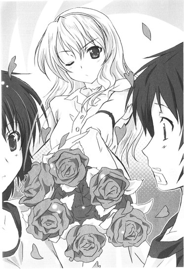
くるくると巻いた長い髪は、ミルク色の肌に最も綺麗に映えるダークブラウン。ボリュームのあるベージュサテンのカチューシャ。襟元のつまったデザインの白い総レースのミニワンピースは、ノースリーブのハイウエスト。グッチのアンティークバッグを肘の内側に引っ掛けて、香子いうところの『ジャッキー風スタイル』......もちろん、チェンではない。カンフー服ではないのだ。元大統領夫人で、夫の暗殺後は海運王夫人となったジャクリーンの好みを踏襲した、クラシカルなファッションのシルエットも完璧。たとえその足元が、香子専用薔薇柄スリッパ（９８０円）であっても。
万里の脳裏にいまやくっきりと思い描かれるのは、加賀香子とのあの鮮やか過ぎる出会いの場面だった。
あの春の日、タクシーから滑り降りてきて、完璧な彼女は深紅の薔薇の花束を振り上げた。
真っ青な春の空に舞った、花びらの色。
巻き添え食った万里の頬に散った、水滴の冷たさ。
そして今、間違えようもないこのリアルな空間で、香子は万里の目の前に再び薔薇の花束を振り上げてみせた。
またあのときのように、叩かれる──思わず万里は痛む顔の下半分を守るように手でガードしようとするが、
「......なぁーんて！ 冗談だよ？」
香子は振り上げた花束を、そのまま後ろに放り投げた。
空いた両手で万里の耳を包み込み、片膝をマットレスについて身体ごとベッドに飛び込むように半ばのしかかり、熱い額に「ちゅぅ～っ！」と熱烈なキスをくれる。
「お、おお......っ!?」
思わず乙女のように肩を竦め、震えた万里を見て、つぼみが綻ぶみたいに笑う唇はローズピンク。あのキスマークが今、きっと額に。
ちょっと顔を離して香子は子供を咎めるみたいに、
「もう、多田くんったら病院送りだなんて、一体なにがあったわけ？私が見てないところで危ないことしちゃだめじゃない」
め！ と、声を低くするのだ。
しかし一秒後にはにっこりと、再び完璧な微笑み。
「とにかく、私が来たからにはもうなんにも心配いらないよ？ぜーんぶ、任せて！この私が！彼女の私が！ちゃーんと！完璧に！多田くんの看病をしてあげるから！」
そして玄関口では、香子が背後へ放り投げた花束をキャーキャーいいながら取り合って、
「あたしが次に結婚するのよ！」
「いいえあたしが次に結婚するのよ！」
二次元くんと柳澤が仲良くオカマキャラを演じている。ふらっふらになりながらも一応、
「いや、あたしが結婚するのよ......」
ベッドから万里が手を上げて参加してみると、「どーぞどーぞ！」の二重唱。
......君らコントしにきたのか？ と、小さくリンダが突っ込みを入れる。
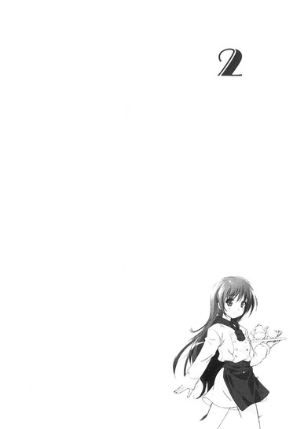
２
どっしり、どーん、なド迫力──なんてオノマトペが『彼女』、つまり自分の恋人である華麗なる美女にふさわしいかどうかは微妙であった。
それでも、そう思わずにはいられないなにかが今日の加賀香子にはあるのだ。妙にどっしりとして、どーんとしている。
万里は熱のせいで死にそうにだるい身体をベッドに横たえたまま、狭い部屋に密集して座る友人たちと、そこにどしっと安定感抜群に混ざる香子の姿を見やっていた。
「ほんとに冗談ですよ？ 『浮気』とか、ちょっとおもしろいかなー？と思って言ってみただけなんです。受け狙いです」
万里のベッドの一番近く、マットレスのすぐそばに陣取った香子は、背筋を伸ばして綺麗に横座りし、いかにもお嬢様然と唇を綻ばせていた。膝にはシルクのハンカチをふんわりと広げて、ピクニックデートにでも来たみたいな優雅さで足を隠している。
その笑みに漂う余裕。悠然としたオーラ。まさに女王の風格であった。
「だって私の多田くんが浮気なんてするわけありませんから」
うふ！ と鼻声で笑って誰にも口を挟ませず、うっとり首を左右に揺らしたかと思うと、
「多田くんは私のことをちゃーんと愛してくれてますし。そんなの当然、わかってますから。......愛されているっ！」
いきなり腹筋を駆使し、こめかみに血管浮かせて声を張る。おお......と一同ちょっと引く。
「という、この絶対の自信が、私をどんどん強くしてくれているんです。愛されパワーがさらにこう、いい感じにめぐりめぐって循環して私をさらにいい感じにして、それがまためぐりめぐって多田くんを......あいた！」
放っておけばいつまでもいつまでも一人で喋り続けられそうな香子の真っ白な肘のあたりを、びし！と叩いたのは隣に座っていたリンダだった。
「さっき結構本気の目をしてたじゃんよ!? まじでやめてよ、私一瞬、ほんとにびびっちゃったじゃんかよ！」
「気のせいです」
妙に嬉しげに叩かれたあたりを摩り、香子は漆黒のマスカラをたっぷりとつけた重たげな睫毛を優雅に瞬かせる。淡いパープルのアイカラーでしっとりと色づく眼窩の窪みの陰影が、今日も匂い立つように女らしい。
そうして余裕たっぷりに、美しい女優のような仕草でバッグから小さくて丸い、いかにも女子の持ち物といった風情の真珠貝みたいな容器を取り出して、
「私の運命の人・多田くんを助けてくれたリンダ先輩に対して、そんな変な勘ぐりするわけないじゃないですか。ＮＡＮＡ先輩もまだいらっしゃるかと思ってたんですけど、お隣に帰っちゃったんですか？」
薬指で中身をすくう。そうだよ、とリンダが答えると「残念、会ってお礼言いたかったのにな」と続けて、ぽんぽんとその指先で軽く唇に触れる。指に取ったのはローズピンクのグロスだったらしく、とろけるような艶と輝きが形の良い彼女の唇をさらに麗しく彩っていく。
そうしておもむろに、くるっと万里の方を振り向いて、優しく目元を緩ませるのだ。声には出さず、他の連中にはその表情を見せず、万里だけに唇の動きで伝えるのは、
「だいじょうぶ？」
と、ひと言。
大丈夫、ありがとう、と万里も声には出さず、香子だけに頷いてみせた。香子の白い頬に、柔らかな笑みがゆるゆると伝わっていく。
そんな顔を見せられてしまっては、もう絶対に言い出せないな、と万里は思う。
この枕元に、まるで死者の墓碑に飾るみたいに香子が置いてくれたお見舞いの薔薇の花束。......の、香りが、さっきから濃厚すぎて、具合の悪い身体には結構きつい状況になってきているだなんて。できたら遠くにのけてほしい、なんて......。
的外れには的外れだが、彼女の真心にはまったく偽りがないのだ。一滴の濁りもない純粋な愛情が、香子の視線には満ちている。
そんなものを捧げられては、己の体調のことなど気にしてはいられない。
それに例の──写真の件も、だ。今は触れられないと思う。
リンダと二人で写っている昔の写真。あれを持ち出したのは香子ではないかと万里は思っていた。可能性はある。香子はこの部屋に何度かやってきているし、それに数日前のおまけんの練習の日の件。あの雨降りの中。万里にはわからない理由で彼女はひどく情緒不安定になって、泣き出してしまったということがあった。
今思うに、あれは要するに、自分とリンダの写真を見たせいだったのではないだろうか。
もしかして写真を見た？ そして持ち出した？と、ちゃんと確かめなくてはいけないと思ってはいた。そしてもしそうならば、事実説明をしなくてはいけない。記憶喪失前後に絡む、今まで香子には話さずにいたリンダとの間のあれこれ、を。
しかし、あんな目をして微笑んでくれている恋人に、今、わざわざ自らその話を持ち出すことは万里にはできそうもなかった。
それに、本当に、写真の紛失は香子とは無関係なのかもしれないし。
単にどこか、たとえば本の隙間にでも紛れ込んでしまっているのかもしれない。ありそうなことだし、そうであってほしいとも思う。第一少なくとも、リンダも一緒にいるこの状況で、ストレートに訊ねることなどそもそもできるわけがないとも思う。
あらゆることを諦め、自分一人の胸に収め、万里は鼻腔一杯に薔薇の甘い香りを吸い込む。くらっと眩暈の速度が増す。香子は優しい笑顔を万里から滑らせて、リンダに向ける。
「リンダ先輩、改めて、ありがとうございました。私の多田くんの看病をしていただいて、彼女として、本当に感謝してます。ＮＡＮＡ先輩にもよろしく伝えてください」
「はいよ、ちゃんと言っておくよ。隣に寄ってから学校いくつもりだから、さっそくそのときにでも。ていうか、もしよかったら、ＮＡＮＡ先輩に香子ちゃんの連絡先を教えてもいいかな？今回みたいなことがもしまたあったら、まああってほしくないんだけど、そのときは直接香子ちゃんに呼び出しかけられるように」
「ええ！ はい！ もちろん！ 構いません！」
こっくりといかにも育ちのいいグッドガール、忠実な後輩の目をして頷いて答える香子に、
「おまえ恐ろしいほどの取り繕いっぷりだな。さっきと言ってること全然違うじゃねえかよ」
呆れも丸出しに声を発したのは柳澤光央だった。
香子の幼馴染で、元片想い（ストーキングという説も）の相手で、現在は、ほぼ天敵に近い存在。通称、やなっさん。
とにかく男前で、そっけないグレーのＴシャツに古着のデニムという簡素ななりでいてさえこいつが背負った背景の部分だけ、ありきたりな万里の部屋がおしゃれな映画のセットみたいに見えてくる。しかも、ただでさえ天然の容姿に恵まれた男であるのに、最近は伸ばしっぱなしでパサついた髪のせいで精悍さとワイルドさをも急速に増し、さらに映研の先輩に紹介されて始めた引越し屋のバイトのせいで上半身の筋肉もくっきりと際立ち、モテ度アップも天井知らずの恐ろしい野郎であった。
柳澤は色々複雑な因縁の相手である香子の真正面にあぐらをかいて座ったまま、
「なにいいこぶってんだよ気持ちわりーな」
へっ、と肩をすくめてみせる。
香子はといえば、
「......はあ？」
一応、まだにこやかな笑顔ではあった。
しかし視線だけは氷柱よろしく冷たい苛立ちにギラリと尖らせ、柳澤を鋭く睨みつける。
だがさすがに長い付き合いというか腐れ縁だけあって、そんな視線ごときで黙る柳澤でもない。耐性だろうか、と端から見ていて万里は思う。もしもあんな目が自分に向けられたら、反抗する意志など一瞬で燃え尽きそうな気がする。
「はあ？ じゃねえよ。さっきは『浮気、浮気、浮気だよ！多田くんが浮気してる！これって絶対浮気、浮気、浮気だよね！ぴゃー！』ってうるさく大騒ぎしてたじゃんかよ。うざってえ嫉妬丸出しでよ。なあ二次元くん。それで俺らまでなぜか連れてこられたんだもんなあ。『抑制して、私を！有事の際には力ずくで抑制して！』とか言ってさあ。なあ、そうだよな！」
「......あー、えーと......」
すらすら語る男前に、いきなり肩を掴まれたのは二次元くん。
一応、彼にも佐藤隆哉というまともな本名があるのだが、彼の友人の多くはそんなものは忘れ果てている、もしくは最初から知らないと思われる。
二次元くんは小市民らしく、そっと香子の表情を探る。万里には見えていない。が、香子の表情を観察した結果、
「......さあー、俺はちょっとその辺の、三次元関係のとこはわかんねえな！」
二次元くんは逃げを打つことを決めたようだった。爽やかな作り笑顔でトレードマークとなりつつある黒縁メガネをちょっとひねり、
「ていうか、こんちはー！ なんかすいません、初対面なのにこんなガチャガチャで。俺のことはよかったら二次元って呼んで下さい」
ごまかしまぎれ、そういえばこれが初めましてだったリンダににこやかに挨拶してみせる。
「二次元？ それが名前なの？」
不思議そうに首を傾げつつ、リンダも先輩然とした優しげな笑顔を二次元くんに向けた。
「はい、三次元捨てたんで。その証に名乗ってます、二次元くんを！」
「おう、濃いぃな」
「一応、嫁もいます」
「え!? まさかの既婚者キャラなの!?」
「自作の脳内嫁なんです。その件を今からお話ししましょうか」
「ああ、いらねえや。私はリンダ、同じ法学部。おまけんで万里と香子ちゃんと一緒に活動してる二年。よろしくね、二次元」
「よろしくお願いします！ あ、嬉しい、なにげに初めて縦の繋がりができた！」
「二次元はサークル入ってないの？」
「なんか入りそびれちゃって、今に至ってます。先輩は、この柳澤めとは初めましてじゃないんですか？」
「柳澤くん、ていうかやなっさんとは前になんか履修のことでちょっと話したことがあるんだよ。ね」
と柳澤に視線をやりかけたリンダの手を、いきなり脇からはっしと掴んだのは、
「リンダ先輩、光央のことは許してあげてくださいね？光央は頭の病気なんです」
香子であった。
リンダの手を自分の胸にそっと当て、「病気っていうか、端的にいうと頭がめったくそ！悪いんです！」とシリアス顔でぶっこみ返す。そのお嬢様ルックスも台無しのあまりの、言い草に、リンダも「ぶふ！」と鼻息で吹き出して、
「めったくそ！ って！ ひっでえ言い草！」
「でもほんとなんですー。まともそうに見えて、この子、虚言癖があるんですよねー。かわいそうに、自分でもなにを言ってるんだかわかってないんですー。脳みそはもはやつるっつるにつるっぱげて、すっかすかのスカポンタンなんですー。ていうかあの頭皮は近々リアルにつるっぱげます！ああ見えて毛根全部、パーマ液でイっちゃってるんで！」
「は!? 香子てめえ、なに適当なこと言ってんだよ！俺の毛根をディスるのだけはいくらなんでも許せねえぞ！」
「やだ、また発作」
こわぁ～い、と意地悪な薄笑いでわざとらしく身体を後ろに引いてみせる香子に、柳澤はためにためて、
「ふざっっっ......けんなよ!?」
と。
「だいたいおまえがついてこい一緒にこいってうるさく騒いで、だから仕方なく俺ら、」
「うんうんそうだね！ 光央の世界ではそうなんだよね！わかったようんうん大丈夫！」
香子は両手の指を創成期の懐かし少女漫画の表紙絵ヒロインみたいに顎の下で組み合わせて、キラキラかわいく瞬きを繰り返し、
「さあ、じゃあ、帰ろうか！ 玄関はそこだよ！」
いきなり真顔でくいっと横を指さし、出た、「光央ゴーホーム」。
「......」
口では勝てないと踏んだ柳澤が実力行使にでた。いきなり香子の顎先をむんずと掴むなり、ぐりぐりと親指の先端で、
「おまえのケツ顎を切れ痔にしてやろうかぁ！」
ちょっと聖飢魔Ⅱ入りつつ割りにかかる。
「きゃああぁぁ！ 割れる割れる割れるぅぅぅ！」
じたばた暴れる香子に「るせえ！」と荒っぽくのしかかり、端から見れば単なる婦女暴行のワンシーンであった。もちろん必死の形相で抵抗する香子は綺麗にネイルが塗られた指でむんずと伸びかけロン毛を鷲掴み返し、
「うおぉてめぇこんにゃろー！ か、か、髪を、掴むんじゃねえぇぇぇ！離せぇぇぇ！」
「あんたこそ顎離しなさいよ！ ふぎー！」
幼馴染二人はそのまま見苦しすぎる掴み合いの様相を呈しつつ騒々しく床を転がり始めて、
「こーら！ ケンカすんな！ ていうか病人の傍でそんな騒ぐなよ！」
......よくぞ。言ってくださった、と、万里は二人の間に割って入ってくれたリンダに心の中で喝采を送る。
二次元の野郎など、幼馴染同士がいつものように険悪になり始めるのとほぼ同時に「俺は関わりたくないんで」オーラを丸出しにアイフォンをいじり始め、クールな結界を張っていたというのに。
「あ......すいません。ごめん、多田くん......」
ものすごく気まずげに、やっと我に返った香子が起き上がり、万里の顔を覗き込む。
いやいや、なんもなんも、と万里は首を横に振ってみせる。
そうしてみせつつ、あらら、と思う。ぴっと髪の毛ほどの筋が入った次の瞬間、そのままいきなりぱかっと割れてしまうツボを見ているような気がした。
完璧に整えられていた髪が今の乱闘でばさっと乱れたせいか、ネックレスのセンターが背中に回ってしまったせいか、幼馴染とのやんちゃな肉弾戦を彼氏の目の前で見せ付けてしまったせいか。
それまで香子の全身にたっぷりと漲っていたように見えたド安定オーラ──本人言うところの「愛されている！」という絶対の自信、が、急に壊れて、失せてしまったように万里には見えた。
香子はしょんぼり、と俯いた音が耳に聞こえるほどに意気消沈して、
「......ていうか、ほんとだよ？ ほんとに浮気だなんて思ってないんだよ？思っては、いないんだけ、ど......」
ちょっと息をつきつつ、柳澤をもう一度睨む。どうやら幼馴染の発言は、痛い核心を突きまくっていたらしい。
なにか言ってあげたいと万里は思うが、香子はすぐにリンダの方へ顔を向けてしまった。
「思ってないんです、先輩。でも、なんというか、こう......私以外の女子が真っ先に多田くんを看病しに駆けつけた、私は出遅れた、っていう事実に、動揺してしまった、というのは......まあ、否めない......かもしれません」
らしくない歯切れの悪さに、リンダも「ありゃ」と眉をハの字に下げる。香子は綺麗な顔を俯けてもじもじと気まずげにフローリングの床の隙間を爪でほじくり返し（多分それは結構汚いからやめたほうがいい）、
「......なので、つい、ホストをあてがおう！ なんて、姑息なことを思ってしまったんです」
「あっ、俺たちホストだったの？」
二次元くんの声にこっくりと頷く。
「二次元はＮＡＮＡ先輩に。光央はリンダ先輩に。そうしてステキな先輩たちの女子力を封印しておいて、私が多田くんに『頼れる彼女』の印象を強く残そうかと......」
「策士やね、香子ちゃん」
「......溺れてしまった感があります......」
「大丈夫さ。ほら、見てごらん。私の女子力はそれこの通り。」
優しいリンダは膝でいざって野郎二人の間に割って入り、おもむろに二人の肩を両手でぐっと自分にくっつけるようにして抱き寄せ、
「双子のホストに捧げられちまったよ！二丁拳銃でな！いいだろ!?ん!?ほれ、やな子ににじ子！そーれかっぽれかっぽれ！」
万里にはわかった。ていうか、見た。
柳澤も二次元も、あれぇ～、いやぁ～、などとクネクネふざけつつ、リンダ先輩の身体にくっついちゃって、あれ、意外とこんなんまんざらでもねえやな風のいやらしい笑みを浮かべていて──なんじゃそりゃ、と、ほんのり松田優作も入ってくる。
ていうか。
双子じゃねえし。
拳銃でもねえし。
途中から芸者遊びになってるし。やな子はともかくにじ子ってなんか無理があるし。
「......」
ぐるんぐるん回転する眩暈と、鼻粘膜から脳髄まで冒されそうな薔薇の芳香に一人耐えつつ、つっこむ気力はそれでも出なくて、万里はただ無言で、端からは結構楽しげにしか見えない雑談の輪を見やる。
元来、誰に対してもさっぱりと付き合いやすい印象を残すリンダに、柳澤も二次元くんもすっかり好感を抱いているらしい。二人の、野郎だけでつるんでいるときにはついぞ見せてくれたことのない妙に楽しげな顔を見ればそれぐらいのことはわかる。馴れ馴れしくリンダとくっつきあったまま何事か言っては笑いあい、リンダも懐っこく野郎どもの冗談に軽い脇パンチで応酬し、また笑いが沸く。
「ていうかやな子、ちゃんと履修はうまいことできたんだ？なにげにあの後、大丈夫かなー、どうしたかなー、とか思ってたんだよね」
「はい！ リンダ先輩のおかげでばっちり、大丈夫です！」
「前期の終わりに試験いくつも、なんてヘマはやらかしてない？」
「語学だけです、楽勝です、多分」
「にじ子とこー子は？」
「俺は大丈夫です！」
「私も大丈夫です、レポートがちょっとあるぐらいで」
「そっか、よかったよかった、じゃあみんな晴れ晴れと夏休みを迎えられるわけだ」
......ばん子は？
ばん子には、訊かなくていいのか？
そーだ！ 夏休みだー！ いえー！ と無駄にテンションを高めている連中を横目で見つつ、万里は一人、重く口をつぐむ。
唇はやっぱり黙っていても痛いし、眩暈も治まる気配がない。
「わあー、楽しみだな夏休み！ あとちょっとしたら夏丸ごと、一ヵ月半もフリーだなんて夢みたい！大学生って最高だよね！」
普段は過剰にぼっち傾向のある香子までもが、内心の屈託あれこれをぶっちゃけ済みの開放感からか、万里の部屋というホーム感からか、珍しく心底楽しげにはしゃいでいる。
ベッドの万里にみんな背を向けて、軽口と冗談を笑い混じりに交し合って。まるでここにいる自分の存在など忘れてしまったみたいに思える。
......なんて、それは拗ねすぎだろうか。さすがに。
「ほんっと、大学生マジ最高だよ！ リンダ先輩は夏休み、なにか予定とかあるんですか？海外旅行とか？」
二次元くんがリンダに水を向けると、
「あー、海外行く金はないけど、旅行はとりあえずしたいと思ってるよ。まあでも、したいってだけ。プランなし。現実的には実家帰って、うだうだして、地元の友達と遊ぶぐらいしかやることないかなー」
「え、実家ってこっちじゃないんですか？ どこですか？」
耳だけで会話を聞いていた万里の身体が、タオルケットの下で不意に固くなる。
実家。地元。......いきなり危ない話題だ。
そんな話をしていたら、いずれ自分とリンダのつながりがばれる──かもしれない。とっさにリンダの顔を窺おうとして、でも、身体が重くて身動きがとれない。
いや、別にばれても困ることはないけれど。でも記憶喪失のこととか、それに──絶対に誰にも悟られてはいけない、この胸に蘇った、あの──
「ていうか、海！」
一際声を大きく張って、リンダがいきなり手を叩きながら言う。
「やっぱ海、行きたいよね！ 夏だし！ 暑いしさ！思いっきり海で遊びたーい！君らそういう予定ないの？みんなで海ー！みたいな」
「あ、いいですね！ 海、超行きたいっすね！」
柳澤が大きく頷いて同調する。二次元くんも、
「俺免許あるし、車借りてみんなで行ったら楽しいだろうな」
「ていうか行こうぜ！ せっかく夏なんだし、近いとこなら湘南とか？いっそ伊豆のあたりまで行っちゃうか。このメンツでいいじゃん、すげえ楽しそう！マジで行こうよ！それ決定しようよ！」
ぐるっと柳澤が指先で部屋を一周指す。
......なんとなく、珍しいノリではあった。こんなにも前向きになにかをセッティングしたがる柳澤の姿を見るのは、初めてかもしれないと万里は思う。しかもさりげなく天敵の香子まで誘っているし。なんなのいきなりその感じ、とツッコミいれられる体調ではないのだけれど。
そんな万里の無念を感じ取ってくれたわけでもないだろうが、
「なに？ 私も入れてくれるの？」
香子が平板な声で訊く。柳澤はそれをさらりとスルー。
「ていうかむしろ私も入れてくれるの？」
続いてリンダが同じことを訊くのには、満面とはいかないまでも相当朗らか、かつシャイなはにかみ笑顔を向けて、
「もちっす！ 女子分が香子だけとかつまんなすぎるんで！」
即、サムズアップで応答した。......なにそれ。マジで。どうした柳澤光央。と、万里は思わないでもなかったが。思考はふわふわと熱に散らされていって、それ以上まとまりはしなかった。
「イエー！ じゃあお隣のＮＡＮＡ先輩も誘おう！」
ぶふっ！ とリンダの言葉に、ＮＡＮＡ先輩を知る香子が吹き出す。耐え切れないみたいに珍しくもゲラゲラ口をあけて笑い出し、苦しそうに身体をひねり、
「せ、先輩！ ＮＡＮＡ先輩には海、似合わないですよ......！あははははは、無理、絶対無理！日に焼けたら死んじゃうあの人！やばいです！本気でやばいですってば！」
「ふはははは！ 確かにあの人、煙になってそのまま消えちゃいそうだよねえ！」
リンダも一緒になって笑い始める。二次元が身を乗り出し、大笑いしている女子二人に訊ねる。
「え、え、ＮＡＮＡ先輩ってどんな人なんですか？この隣に住んでるんですか？やなっさんは知ってんの？」
「や、俺も知らない。うちの学校の人なんですか？」
「そう、三年。まあ端的にいうとコスプレイヤーなんだけど、」
──コスプレじゃ、ねえよ。
視界まで次第にぼやけてきて、万里は黙り込んだまま、回る天井をぼんやりと見上げていた。熱がまた上がってきたのだろうか。友人たちが笑いながらおしゃべりする声が、どこか遠く隔てられて、別世界の出来事みたいに聞こえる。
拗ねた気分は続いたままで、いまや結構リアルな疎外感。
まるで、自分だけ誰にも見えていない幽霊か透明人間にでもなったような気分だった。
さっき柳澤が「このメンツで」と言ったときにも、自分がそこに含まれているかどうか、万里にはわからなかったのだ。
他人の目に、自分の姿がちゃんと見えているのかどうか、本当に自信がなかった。
もしかして自分がここにいることを誰も知らないかもしれない。自分のことなど、みんな知らないのかもしれない。関わっていると思ってるのはこっちだけで、誰も、自分に気づいていないのかもしれない。見えていないのかもしれない。聞こえていないのかもしれない。
動けない自分を置いて、みんな、行ってしまうのかもしれない。
......こんなの、卑屈でガキっぽい「仲間はずれ」の寂しさ、なのだろうか。
それとも。
「......」
万里は気だるく目蓋を閉じ、熱い息を深く一つ吐く。
やめよう、と思う。ケガと病気と、そして蘇った過去の自分がもたらした情緒不安定とで、きっとちょっと鬱々とダウナー入っているのだ。暗い思考は脇に置いて、これから始まる輝かしき真夏の日々を想像しよう。
......夏だから、みんなで海に行く。
うん、楽しそうだ、ものすごく。
柳澤と、二次元くんと、香子と、リンダ先輩と、もしかしたらＮＡＮＡ先輩と。それと、自分。車で行くのだ。水着を用意して、サンダルを買って、ワイワイと大騒ぎして、朝早くから張り切って待ち合わせして。ビーチボール。浮き輪。クーラーボックス。いっぱいの氷と、ドリンク。タオルも忘れずに。それからそうだ、日焼け止めも絶対に。コスメに関しては半プロを自称する香子に、いい感じのを見立ててもらうことにしよう。
想像してみれば、ちゃんとメンツに入っている自分をそこに置くのは容易かった。
ださい海パンの万里は楽しげに、みんなと浜辺ではしゃいでいる。波打ち際で戯れたり、野郎同士で海面バックブリーカー、女性陣の水着をちらちら見たり、やきそば食ったりかき氷食ったり。暑いだの熱いだの大きな声で好き勝手に喚いて、気楽な大学生の身分を精一杯に使って、多田万里は太陽の下、十九歳の夏を謳歌している。
──でも、あいつ。
本当に、自分なんだろうか。
ひんやりとした暗がりで一人、目を開いたような心地がした。
昨日の自分と今の自分が「違う」ように、今の自分と海にいる自分も「違う」のではないだろうか。そんなことありえない、なんてだって言えないではないか。たった一晩でこんなにも変わってしまうのだ、自分という不確かな男は。
そうして、今の自分は過去の自分になって、輝かしい季節を生きる「次の」今の自分、をただ見ている、みたいな。
それしかできない、みたいな。
タオルケットの下で、凍えたように指先すら動かない。
こうしている一瞬一瞬にも、生きている自分がどんどん死んでいっているように思う。そして生まれ変わっていくように思う。死んだ自分を脱ぎ捨てて、そして、置き去りにしていっている。
保たれていると思っている自分が、本当に一瞬前の自分と同じかどうかなんて、万里にはわからない。この足元には過去の自分が恨みがましく声も上げられず、ただ積み上げられていくばかりなのかもしれない。目だけを開いて見ているのかも。この、俺を。声も届かない、隔てられたところから。
まったく自信がない。
明日の自分が今の自分と同じでいられるか、万里には全然、確かには思えない。
＊＊＊
──目が覚めた。
部屋は、薄暗かった。
いつの間にか寝てしまっていたらしい。一体どれだけ眠っていたのだろう。今は夜明けなのか、夕方なのか、それすらわからない。
とっさに時間の感覚を失って万里はあたりを頼りなく見回す。明かりはついていなくて、引いてあるカーテン越し、外の街灯の光がぼんやりと曖昧に部屋の中を照らしている。
静かだった。
フローリングに、今は誰も座っていないスツールの影が延びていた。
その影の先端あたりに、素足のつま先。
揃って尖ったつま先は白い脛に続いて、まっすぐに伸びた膝に続いて、ワンピースの裾に続く。
香子だ、と気づく。
しまいこまれた人形みたいに足を伸ばしてぺったりと座り、壁に背をもたせて、香子が一人俯いている。
彫りの深い顔立ちは妙に白っぽい強い光に照らされていて、携帯をいじっているのだとわかった。頬にも肩にも長い髪が幾筋も零れ落ちていて、口元も薄く開いていて、隙あり。完璧ではない表情で、香子は万里が目覚めて彼女を見ているのに気づいていないようだった。
......そういえば、前にもこんなふうに目が覚めて、この部屋にいる香子を見つけたことがあったっけ。
万里は声を出さず、身体も動かさず、香子の姿をそのまま眺める。
あれは、そうだ、香子が柳澤に思いっきりふられてやけになって、ライブハウスでべろんべろんに酔っ払った夜のことだ。いまや懐かしくもある、騒々しかったあの春のあの日。
すっと尖った鼻梁が美しい、冷たい光に照らされて俯く横顔。
なぜなんだろう、と万里は思う。
あのときも、そして今も、不思議なことに香子はまるで自分の姿みたいに見えるのだ。容姿にどこも似たところなんかない。見てわかる共通点もないし、そもそも彼女はスカートを穿いて長い髪を垂らし、女としても際立って綺麗な顔をしているのに。
それなのにああしている加賀香子は、ぽつんと一人でこの部屋に暮らす、物知らずで、無力な、ただの名もなき若者──つまり自分。自分みたいな人間。それっぽっちの存在に思えて仕方がないのだ。
君はそこにいる、と、君は見えている、と、君の声を聞いている、と、誰かがそう言ってやらなければ存在し続けることすら難しく、今にも壊れてしまいそうな命に思えて、仕方がない。
だから万里は、
「加賀さん」
声をかけた。
ぴく、と。驚いたのだろうか。光の中で、綺麗に揃って上を向いた長い睫毛が震えるのがベッドに横たわったままの万里の目にも見えた。
「......起きたの？」
「うん。今って何時？ 俺、どんだけ寝てたんだろ？」
「えっとね、」
灯りのついていない部屋には、テレビもついていない。静かな薄い闇の中、香子は軽く咳払いしながら膝歩きでもそもそとベッドサイドまで近づいてきて、
「ほら、もう七時過ぎだよ」
携帯の画面を向けて見せてくれる。その眩しさに目を閉じてしまい、万里には時間は見えなかった。でも驚く。夕方にしても、せいぜい五時ぐらいだと思っていた。
「七時......？ え、うっそ......ほんとに？」
「うん。ずーっと寝てたよ。夢、見た？」
「見てない」
「じゃあ深く寝てたんだね。具合、ちょっとはよくなってるといいけど」
「......言われてみればなんか眩暈は妙にすっきり......え、もしかして加賀さん、ずっとここにいてくれたの？みんなは？」
「お昼ごろ帰ったよ。ね、なにかいる？ お水、飲む？」
「いや、大丈夫。ていうか......」
ちょっと身を起こし、万里は香子の顔を見た。にこっ、とほとんど反射的に、香子の美貌には笑みが浮かぶ。疲れていないはずがないのに、と思う。
香子は何時間もずっとああやって、テレビもつけずに携帯をいじりながら自分の傍についていてくれたのか。みんなが帰ってしまったあとも。
ずっと自分の傍に。
瞬間、じわりと、胸に熱い雫が滴るような気がした。
この焦燥にも似た、火の玉を舌で受けて腹まで飲み下すような感覚は、万里にはもはやお馴染みのものだった。
香子の真心に触れたとき、いつでも自分はこうなるのだ。
目の前のひとが愛しくてたまらない。泣き出してしまいたくなるような頼りない気持ちになるのは、そんな感情を自分が持て余すせいだと思う。どう示せばいいのかわからないし、一人の胸に収めることもできなくて、万里はグズな木偶の坊になってしまう。気の利いたことはなに一つできない。
ただ、傍にいればいるほど寂しくて、手を握れば多少おさまることは知っている。抱きしめてキスをすればもうちょっとおさまることも......一応、知っている。そんな、耐えるばかりの、小出しに誤魔化すことしかできない、苦しいほどの恋慕のボリュームは巨大だ。
──こんなにも変わってしまった今でも、だ。
加賀香子を見るたびに。新しく生まれた細胞が、今、この瞬間、新たな眼を開くたび。そのたび、出会う彼女を愛しく思っている。
のに。
なんなんだよ、本当に。
万里は前髪ごとむしってしまいたいみたいに、とっくにぬるくなっていた冷えピタを額からひっぺがした。
こんなにも想いは確かなのに、ここに在るのは本当なのに、それなのに帰りたいのは、そう願って駆け出した先は、「此処」ではない──なんて。
呆然と、胸で息をする。さっき飲み込んだ香子の火が、責めるみたいに肺を焼く気がする。熱くて痛くて細胞ごと引き裂かれる。
自分ではどうにもならないのだ。どうもできない。あがいても、もがいても、自分の感情を整理することができない。時系列順になんて、どうしてもできそうもない。なぜこんなふうになってしまったんだ、自分は。一体誰のせいで。
どうにかこうにか、香子の目を見た。香子は万里の傍らで、声も出さずに万里の言葉か行動を待っている。
「......俺は、大丈夫なんだけど。......ごめん、加賀さんこそ時間は大丈夫？」
「大丈夫だよ」
「食事は？ あ、もしかしてなにも食ってないんじゃない？」
「ううん、大丈夫。リンダ先輩がくれたパン食べたんだ。私こそごめんね」
香子の謝罪に、万里はぽかんと間抜け面を晒す。謝る理由こそあれども、謝られる理由などあるわけがない。
「な、なんで？ なにが？」
「だって。......具合悪いときにみんなで押しかけて、まともに看病もできなくて、挙句にバタバタあんな大騒ぎ......。全然休まらなかったよね。むしろ私、来ない方が、いない方がマシだったよね」
気弱な言葉とは裏腹に香子は唇を尖らせて顎を上げ、ケンカでも挑むみたいに両目を細めてみせる。
でも、それはただの無謀な強がりだと、今の万里にはちゃんとわかる。
「そんなことないって」
枕元に置かれたままの薔薇が甘く香る。この部屋には花瓶がない。
「あるよ」
「ないってば」
「あるんだよ。......『いい彼女』に、なりたいのにね。なかなかうまくはできない。私みたいなポンコツは、全然、」
「そんなこと、ないっつーの！」
弱ったこの身体で出せる、一番強い声でそう言った。しかし、
「......あるの！」
それでも言い返し、香子の自虐もでも止まらない。無意味に微笑んで、その白い美貌を指差して、
「なんだか今日はね、つくづく、思っちゃったよ。......こんな私より、きっと、多分、リンダ先輩みたいな人の方がずっと、」
そんな言葉の続きを言わせるわけにはいかなかった。
万里は香子の手首を掴み、強く揺さぶるようにして自分の方に引きつけた。違う、違うから言うな、とどうにか伝えたかったのだ。
香子の肌は瑞々しい花に触れたみたいにひんやりと冷たくて、熱っぽい自分の手のひらの下で溶けていくようだった。
揺さぶられてバランスを崩した香子は黙り、上半身で万里の身体の上にのしかかるような体勢になって、息を詰めた。
至近距離で、戸惑いに揺れる彼女の瞳を見る。
困ったように何度か瞬きを繰り返す、その目。やがて、落ち着きを取り戻して、長い睫毛が穏やかに伏せられる。髪の香りが万里の鼻先を淡くくすぐる。
手首を掴まれても、引き寄せられても、薄暗い部屋に二人きりでいても、その相手がこんな自分なんかでも、それで構わないというように香子は黙ったままでいる。
声も出さずに、万里がどうしたいのか、どうしようとしているのか、それを知ろうとしてただ待っているようだった。身じろぎもせず、香子は万里の目の色を静かに探っている。
──どうして、そんな。
「多田、くん......？」
握った香子の細い手首は見た目以上に華奢で、自分みたいなつまらない野郎にでも、本気を出せばこのまま掴み折ることもできそうだった。
「......多田くん......」
詰めていた息を、万里は一気に吐いた。
五本の指を離す。
その指は軋むように震え、喉からは笑い声にも似た音が出て、
「......加賀さん、ほんとに、大丈夫なのかよ......？」
うめいた声は、泣いているように響いてしまった。
うまく声を出せない予感はあったのだ。それでも、訊いておきたかった。
こんな、俺のような意味不明なわけのわからない、半分壊れたような、半分幽霊みたいな、こんな半端な男と付き合っていて、あなたは大丈夫なのか、と。
自分が思うに、きっと大丈夫ではない。
明日ここにいるのが誰かなんて、自分にだってわからない。
だから今のうちに遠く逃げたほうがいいよ、と。
万里はそう言いたかった。しかし香子は笑うのだ。
「大丈夫だよ？」
私なら、全然。
時間も。おなかも。全部、大丈夫。
完璧に美しい笑みをさざめくように美貌に浮かべ、万里が一度離した手を、再びそっと差し伸べてくる。冷たい、ふんわりと柔らかな指先が額の丸みを確かめるみたいに触れてきて、
「......まだ熱いね。一人暮らしでこんなケガして、体調悪くて、不安になっちゃうよね。でも大丈夫だからね。私、なんにもできないダメダメなポンコツ彼女だけど......愛だけは、誰よりもあるから。できるだけそばにいてあげるから。できるだけのことは、なんでもするから」
やがて、確かな重みで目蓋の辺りまで覆ってくれた。
なにも見なくていいし、怖いなら泣いても大丈夫。そんなふうに告げるように。
どこまでも底なしに優しくて、怖いほど犠牲的な行為にも思えて、これはまるでチキンレースだと万里は思う。
どっちの方がより危うげな状況で、それにも負けずに己の愛情を表現できるか。純粋なものを危険に晒せるか。大事なものをダメにできるか。惜しみなく投げ打てるか。ギリギリのところを神経削って攻めあうみたいな、痛すぎる競争だ。そんなことをさせているのは他ならぬ、この自分だった。いきなり自分が一方的に始めたのだ。
香子には、なんの責任もないのに。痛いレースに乗る理由もない。ただふさわしい相手を愛し、相手からも愛されて、綺麗な服を着て綺麗な靴を履いて綺麗に笑っているだけでいいはずの人だった。本来ならば、そうやって、幸せになることだけを考えていればいい女性だ。加賀香子は。
こんな、「多田万里」なんかに引っかかっていなければ──
「ねえ、多田くん。私ね」
目蓋を押さえてくれる手は、万里の体温ですこしずつぬるい湯のように温まっていく。その手に、そっと、万里は自分の両手を重ねた。十本の指全部に次第に力を込めて、彼女の柔らかな手を、自分の情けなくも醜い顔に押し付ける。
すがっている。
助けを請うように、許しを請うように、香子の白い手を握り締める。香子はそれを、静かに受け入れている。
「さっき思ったの。海に行きたいな、って。......みんなとじゃなくて、多田くんと、私。二人だけで、行きたいんだよ？元気になったら、私を連れて行ってくれる？」
その言葉を、万里は耳で聞いていた。
彼女の手からは穏やかな香りがする。声は、闇のしじまを震わすみたいに深く響く。
「ほんとに......？ 俺と二人で、行きたいの？」
「うん。行きたい。......パリじゃなくてもいいの。私は多田くんと、行きたいんだよ」
「......そっか。わかった。いいよ」
「ほんと？ 約束？」
「うん。約束する。俺は加賀さんを海に連れて行く。......夏だもんね。行こう、俺、プラン立てるよ。きっと楽しいよ」
見えない視界のどこかで、香子が笑う気配がさらさらと揺れる。同じ気配が、こっくりと頷いたように思う。
約束を叶えてあげられれば、香子はこうして笑って──幸せでいられる。それならば、どうやってでも叶えてあげようと思う。
しかしそう思う一方で、多分、本当に正しいのはただちにこの手を離すことなのだろう。それもわかっている。
でも、そうすることもできないまま、結局自分は香子の笑顔を欲しがっているのだ。そんな欲を満たそうとする自分も気がつけばニコニコと笑っていて、それが本当に気色悪い。なにを笑ってるんだろうか、俺は。
ふと、万里は思った。
今、自分は、自分の肉体を、命を、憎んでいる。漠然とした不安とか恐怖とかそういう曖昧な気分ではなく、はっきりと、滅ぼして存在を消してやりたい標的として憎んでいる。
自分の身体が、触れたところから香子の綺麗な肌に沁み込んで汚すような、黴菌みたいなものに思えるのだ。汚らわしくて、大嫌いだ。捨て去ることができたならどれだけ心は、魂は、楽になるだろう。
目蓋を押さえるこの優しい、ほんわりと温かな香子の手が、頬をたどってするりと下に滑っていって、喉仏をいきなり圧迫してくれればいいのに。優しい彼女がそんなことをするなんて絶対にありえないから、それがちゃんとわかっているから、余裕綽々にそんなことを考えられるのだと自分のことを思う。そんなところも嫌だった。
もう、ばらばらの、めちゃくちゃだった。
首を絞めて楽にしてくれる恋人の手も期待できないから、自ら息を詰め、声を殺して黙るしかない。そうしてしばらくこうやって、一人の淵に沈んでいるしかないのだろう。
誰にもわけがわからないまま、泣き出したくなる喉も目も痛い。もちろん傷口を開いた唇も痛い。
ドツボという名の人生の陥穽に、ずっぽりはまった自覚もあった。
＊＊＊
日常の偉大さを万里は思う。
世界の終わりを絶望の筒穴から覗いてしまったようにも思えた夜が明けて、再び陽が昇れば、白々しいほどに夏の朝は爽やかなのだ。人間一人の思惑など、この世のなにをも左右しないらしい。
目覚ましが鳴る前にすっきりと目が開いて、ベッドから起き上がってみると熱も冷めていて、十九歳の肉体はひたすらカロリーを求めていた。
唇の傷を気遣いながら、万里は納豆をすすった。
冷蔵庫にあって、栄養があって、口腔付近に摩擦なく食えて、咀嚼をさして必要としないもの──その条件のすべてを兼ね備えたのがたまたま納豆だったのだ。一パック食べてみて、いける、と判断し、買ってあった３パック全部をつるつるずるりと平らげた。スツールにちょこんと腰をかけて背を丸め、パックから直にいった。途中、飯もないまま俺はなにを、この姿、端から見ればまるで妖怪ではないか、と一瞬思わなくもなかったが、なにしろ納豆だ。ヘルシーだ。これほど日本人の遺伝子にマッチした、身体にいいものも他になかろう。迷いを振り切り、あとは麺類でもすするかのように、万里はそのまま朝の光に包まれて３パック目のラストまでずるーっと一気に駆け抜けた。
......という話を香子にすると、
「弟のクロゼットだ」
反応は、微妙であった。
というか意味がわからないが、
「静のクロゼットがね、なんだか納豆臭いの」
そういう香子の表情は、決して「快」のサインではない。やーね、と言いたいみたいに肩をすくめ、
「多田くんはなんでだと思う？」
「え......クロゼットに......隠れて......納豆を......食った......？」
「ブー、はずれだよ。正解は体育着。あの子、汚れた体育着を洗濯に出すのを忘れてそのままクロゼットにつっこんで、放置してるの。男子の体臭がやがて酸化して、納豆臭にも似たオーラを醸し出していたの。私がこの鼻で追跡して探り当てたんだから間違いない。ていうか多田くん、あのね、弟がクロゼットで納豆を隠れて食べてたら、それって結構大事件だよ？普通ありえないよ？」
「......答えがわかってるならなんで俺に訊いたの？」
「会話の構成上のテクニック。時折質問を混ぜるのが会話を弾ませるコツ、ってネットで見たの」
うふ！ と香子は得意げに首を傾げ、完璧な笑顔で傍らの万里を見上げる。そうしてぎゅっと、恋人繋ぎにして指を絡めた手に力を入れてくる。そんなことをされてしまえば万里もへらっと脱力して、
「そっかぁ～！」
「そうだよぉ～！」
「なるほどねぇ～！」
「なるほどでしょぉ～！」
にゃ～るほど～！ にゃっはっはっはっは～！......とバカップル丸出しに笑いあうしかない。
本当に、日常のリズムというものは偉大だ。
こいつぅ～、きゃ～、つんつ～ん、んも～、とかしつこくやり続けつつ、万里は改めてそう思う。睡眠や、朝の太陽。行かなくてはいけない学校。行き交う他人。生きていれば避けられない生理的欲求。求められる社会的仮面。身を動かさざるを得ない諸々の都合。それらはみな、忘却のためのシステムなのかもしれない。
そういうものがあるからこそ、夜の次には必ず朝が来るからこそ、でかい脳にぱんぱんになるまで悩みを詰め込んだ人類も、そ知らぬ顔で社会生活を営むことができるのだろう。
一人で黙って考え込んでいたらどこまでも沈んでいけそうだった黒い夜が、今はこの通り、気配も匂いも感じられない。誰の顔をも平等に太陽の光は照らし出す。まるで夜など、なかったみたいに。そうやって人々はみんな、寝床から這い出てそ知らぬ顔で歩き出すのだ。
三限が終わって、全体に灰色なトーンの法学部のロビーには騒々しい学生の群れが行き交っていた。
同じ講義に出ていた万里と香子は、いつものように二人連れ立って、その群れの一部を成して歩いていく。暗い色調の群れの中、香子だけがスポットライトを浴びたみたいに鮮やかな眩しさで輝いているのは彼氏の欲目では多分ない。
「しかし弟の納豆臭はんぱねーな！ それってつまり、部屋の外にまで漏れてたってことだろ？加賀さんがクロゼットの体育着探り当てたんだから」
「ううん、そこまでひどかったわけじゃないの。私が弟のクロゼットを漁るのは、定期的に行っている一連の点検の流れだよ」
「定期的に？ 点検？ ......弟のクロゼットを？」
「そうだよ？」
「......なぜそんなことを」
「最近あの子なにやってるのかしら？ 姉としてちゃーんと確かめておかなくちゃ。変なもの隠してないでしょうね。っていう、要するに家族愛の発露だよ。でもそうしたら、今回も！」
あぁ～んのじょう！ と妙にエロ外人チックに発音して、香子は顎をつんと上げる。その首から続くなめらかなラインはとっても美しいが、
「納豆体育着の他に、怪しいＤＶＤが服の隙間に隠してあったの！だから体育着は速攻洗濯機に放り込んで、ＤＶＤはいかにも『見・た・よ』って感じで、リビングのチェストの一番上、真正面に、ででーんとあしらっておいてあげた。いい場所だよ？隣はウォーホルのドローイングだし」
処刑、の二文字が万里の脳裏に浮かぶ。やってることはかなり鬼だろう。
「......弟は怒らないわけ？」
「怒らないけど、いつもどんより暗い目で私を見てる」
「......ちなみにＤＶＤっていうのは」
「レズビアンエステの罠、っていうタイトルだった。ねえ、それって普通？高校生ぐらいの男の子ならみんなレズビアンエステ、って興味を持つの？今まで、私がエステいってくる、って言うたびに、静はひそかに内心『お姉ちゃん......レズビアンエステの罠だぞ......』って思ってたってこと？」
「う、ううん、まあ、どうだろ......？ そこはやっぱ別腹なんじゃない？でもわりと将来有望なマニアックさ......かも？」
最近は指でスマホをいじりながら耳にはヘッドホン装備、外界のことなど眼中になし、な連中が学内にも大量に湧いていて、手をつないで傍迷惑にノロノロしている万里と香子にも容赦なくぶつかってくる。
「いでっ！」
「やだ多田くん、大丈夫？ ていうか、静も見られたくないものがあるならもっとわかりにくいところに置くべきだよね......あいたっ！」
「おっと、そっちこそ大丈夫かよ？ ていうかとりあえず、あんま弟の部屋に無断で入らないほうがお互いのために、っと!?」
「やだ、今の人すっごくあぶな......きゃあ！」
壁に貼られた「事故多発・前方注意」の張り紙もあまりに虚しいぶつかられっぷりではあった。
連続四人にぶつかられて転びかけ、万里と香子は慌ててお互いの手を握り合ったまま壁際に退避する。額に零れた前髪を指先でかきあげて、香子は「もう！」と綺麗に描かれたブラウンの眉を逆立ててみせた。
「なんなの!? 多田くんのこの哀れな様子が目に入らないのかな!?もっとみんな気を使うべきだよ！」
ねえ！ と同意を求めてくる甘い声に、万里は軽く肩をすくめて見せる。
すれ違うヤツ、それも野郎の口元の絆創膏になど、いちいち気を遣ってくれる他人などいるわけないと思うし。そもそも混んだ学内でべたべたくっついている自分たちの方こそ迷惑な存在だとも思うし。それよりなにより、何気に知ってしまった香子の処刑姉ぶりが恐ろしく、名前しか知らない「弟の静（愛猫はジンギスカン......じゃねえ、ビビンバ）」に心底同情せざるを得ない。難儀な姉をもったものだ。血縁からはどうあっても逃れられないし。
そんなことを思っていると、
「おーう、多田万里＆ロボ子！」
すこし離れたところから、張りのある声が二人を呼んだ。見れば向こうからおまけんの三年生、コッシー先輩が早く来いよというように手を振っている。反射的に二人揃って先輩に軽く頭を下げて挨拶しつつ、
「......ロボ子？」
香子は喉の奥で呻くように呟いて、首をかしげる。ロボ子って私？でもなぜ？と。
おまけん内の上級生の間ではいつしかすっかり定着した「黄金ロボ子」の呼び名であったが、本人だけにはいまだ浸透しきっていないらしい。
おまけんのミーティングは、今日もいつもと同じ場所。法学部ロビーの一角、掲示板の壁際に設えられたテーブルとベンチで行われていた。
コッシー先輩が腰の入った動作でひらりと座った、そのベンチの隣にはリンダがいた。
万里と香子が続いてやって来たのに気づいて「よ！」と笑顔を上げてみせる。
「多田万里はもう熱下がったの？」
九分丈から覗くくるぶしがやたら女っぽいカーゴパンツにシンプルなカットソーだけのなりは、いつものように気負いがない。街角で出会う本名知らずの器量良しな猫を思わせる物腰で、ふにっ、とふざけて歯を見せて笑うリンダに、
「やー、おかげさまで！ ありがとうございます！一晩死んだように寝たら今朝は普通にすっきりしました！」
万里も口の傷を気遣いつつ、同じ顔で笑みを返す。
でもさりげなく、視線はテーブルの上に広げられた誰かの読みかけのスポーツ新聞の記事を辿っている。内容などもちろん全然わからない。ただ日本語が並んでいるだけの文字列を辿って、ひたすら視界を埋めるだけの行為だ。
意識しなければいい、意識に上らせなければいい、万里はそう思っていた。
なにも考えず、思い出さず、普通に、今までどおりで変わらずにいればいい。自分さえそうであれば、事態はなにも変化しないのだから。そしてこのまま忘れてしまって沈静化していけば、それが一番いい。というか、それしかない。
その万里の傍らで、
「ほんと、リンダ先輩のおかげです。ありがとうございました。今日は多田くん、お昼の親子丼ももりもり食べてましたし、もう大丈夫です。ね」
指を絡めてきつつ、香子が甘えるように身体をくっつけて万里の顔を見上げてくる。リンダがどうの、というのではなくて、普通に先輩たちの前でいちゃつくようで気恥ずかしくて、万里は思わず指を離そうとするが、
「大丈夫だよね」
片眉上げて微笑。
香子は断固、指を離そうとはしない。ちょっと困って、しかしそれを無理やり引き離せもしない。戸惑う万里の顔を見たまま、香子は輝くスマイルをキープ。
今日の香子も、完璧に美しかった。
エレガントに巻いた長い髪には、大柄入りのシルクスカーフをカチューシャ代わりに。フリルがついたノースリーブリボンタイブラウスはブルー。夏らしい白のタイトなミニスカートと９センチヒールのヌードカラーのストラップサンダルは、彼女のスタイルの良さを極限まで際立たせている。微笑む唇のグロスは意表をつくような深い色味の、チェリー色。肩にはブランド物のベージュの、バッグをくったりと提げて、モデル立ちしたその姿はさすがの加賀香子！ではあったが、
「うぜえ」
「うぜえな」
おまけんの先輩たちにぽこぽことポップコーンを投げつけられ、「あっ、いやっ、だめっ」とくねくね妙に色っぽく逃げを打つしかない。ちなみに大半は万里の顔面に当たっている。
「イチャつき終わったらとっとと座れよな」
コッシー先輩に促されて、やっと香子の手が離れた。リンダの隣に二人して並んで座ると、手元にプリントが回される。ざっと目を通して、
「うおお......ついに初披露だ！」
万里は思わず声を上げた。
手渡されたプリントには、おまけんの本年度の初公式舞台となる、郊外の大規模商店街での阿波踊り参加の要項が書かれていた。
夏休みに入ってすぐ、万里たちおまけんのメンバーは、他大の連の一部として群舞を担うことがすでに決まっているのだ。
軽く咳払いして、コッシー先輩が注目を集めて話し始める。
「っちゅー、わけで。今配ったプリント、全員本番まで失くすなよ。日程とか時間だけじゃなくて、衣装のこととか履物のこと、小物周り、今のうちに各自ちゃんと確認しといて。そして振り付けの練習は、実はあと二回しかできねえ」
えぇぇー！ と全員が声を上げる。万里もだ。思っていたより、スケジュールに余裕がない。
「えぇぇー、じゃねえ。来週の水と、その次の水。で、もう本番だから」
こえー、やべー、まじでー、と女子の先輩たちが緊張を口にする。野郎の先輩たちはといえば、打ち上げどこー？どこでやんのー？早く予約しなきゃー！とすでにそればかりだが。
「まあ群舞だから、そんなにみんなあせることはねえ。つっても、俺とリンダだけは、ちょっと目立つ感じになるけど」
足を組んで座ったリンダは、軽く敬礼するみたいなポーズでコッシー先輩に手を上げて了解の合図。香子がリンダの顔を覗き込み、訊ねる。
「目立つ感じって、なにかあるんですか？」
「あるんだよ、これが。私とコッシー先輩は連に結構出入りさせてもらってるから、集団の先頭でちょっと振り付けがあったりする立ち位置で目立つ役をやることになったんだよね。実は衣装も、君らのとはちょっと違って豪華だったりして」
「え、すごーい！ そうなんですか！ わあ......リンダ先輩の踊りはほんとに綺麗だから、きっとすっごく素敵なんだろうなぁ......」
うっとり呟く香子に、リンダは軽く笑ってみせる。
「代わるか？」
もちろんそれは誰にでもわかる冗談なのだけれど、
「キャー！」
......というのは、どういうリアクションなのだろう。
悲鳴を上げてのけぞりながらあせる加賀香子こと黄金ロボ子の姿に、一同、脳裏にカクカク震える在りし日のロボットダンスを思い出したらしい。あれが群舞の先頭で目立つ役などやっていたら──ぶふぅ！とそこここから笑い声が上がる。万里も先輩たちと一緒になってへらへらしていたのだが、
「頑張ろうな、リンダ」
「おす」
その視界の端。
コッシー先輩とリンダが、コツンと軽く拳を合わせたのを見てしまった。まるで野郎同士みたいな無骨な挨拶だった。でも、それほどに親しいのが端からも丸わかり。俺らは昔からの仲、色々分け合う古いダチ、だとでもいいたげな。大学二年と三年で、そんなに古い仲になれるわけがなかろうに。というか。
──別に。
と、万里は目を逸らす。
別になにかを感じる資格も理由もありはしない。別になにもない。なんでもない。なにも考えてはいない。
ただ、ちらりと見た、Ｔシャツから伸びたコッシー先輩の腕。あのすっと伸びるリーチや、男っぽいゴツゴツとした関節、引き締まった筋肉の厚みは自分にはないものだな、などと思う。
ないのはそれだけでもないな、などとも思う。
ミーティングが終わって、先輩たちはぞろぞろと席を立っていった。その後を追いかけようとして、万里も慌ててバッグを掴み、立ち上がる。
「どこ行くの？」
当然のように香子もついてこようとするが、
「ごめん、すこし待ってて！」
と言い置いて、一人早足で駆け出した。
先を歩いていた野郎ばかり四人組に追いついて、ちょい、とコッシー先輩のＴシャツの袖を引っ張る。
「あのぉー、先輩」
「お？ どうした多田万里。女々しい引き止め方をして。間違えて萌えちゃうじゃねえか」
「おまえもマージャンやんの？ 一緒にいく？」
「いや、ちょっと先輩がたに訊きたいことがありまして......歩きながらでいいんで、ちょっと喋っていいすか？」
「いいよ、なに、どうした」
だらだらと歩く先輩たちに引っ付いて並び、万里はややもじもじと口を開く。
「......そのぉー......彼女、を」
「ロボ子を？」
「はい、ロボ子を、海に連れて行く......って約束したんですけど、具体的にどうやってプランを立てたらいいんですか？自分はこっち出身じゃないからどこ行けばいいかもわかんないし、友達はみんな経験不足で頼りにならなくて......」
「うーん、そうだな。まずは潮風で錆びないようにロボ子の全身にクレ５５６を噴きつけまくれ」
笑顔でさわやかに返してくれつつ、コッシー先輩はグリグリと万里の肝臓付近に拳を押し付けてくる。
「いだいいだいいだい！」
ははは、もっとやってやれコッシー、と笑う先輩四人に、万里は学部棟の外階段であっという間に取り囲まれてしまい、
「ていうか俺らだってそんな楽しい経験さほどねえんだよ！」
「顔見て判断しろよ！」
「泊まりか!? あん!? 一泊か!? ええ!?」
激しく攻め立てられる。が、
「と、泊まりって......え!? なんでそうなるんですか!?」
この野郎なにをいまさら、とさらに容赦なくジャックパーセルのつま先を踏まれる。ぐりぐり両足のヒゲ面を踏みにじられて、万里は「いやぁー！」と哀しい悲鳴を上げるばかり。
「そこは泊まりてえだろうが！ 普通に！ 海なんか行ったら、そりゃ彼女の長い髪はベタベタ、自慢のお肌もベタベタ、海の家のシャワーなんかじゃもう収拾つかねえだろうがよ、若い二人の身体は！」
「『ロボ子、このまんま家まで帰るとか、無理！』」
「『ちゃんとしたシャワー浴びたい！ あったかいお風呂入りたい！眠いし休みたい！』」
「......でな。ちゃんとこう、あ～疲れたな～、ねみ～な～、限界～、......っていう地点にあるもんなんだよ。お泊まり施設が」
「......うむ。あるんだよなあ」
「それをこう、すかさず......」
「なに勝手なことを言ってんすか!?」
ええい！ と万里は足をばたつかせて先輩がたの靴を跳ね除ける。それにそんなの香子に対して冒涜的だ。
冒涜的だと、思うのだけれど。
──『パリじゃなくてもいいの』
「......っ......」
瞬間的に蘇る声の記憶を振り払うように、首をブン！と横に振る。
耳に残る、甘い、低くかすれた声の気配は夜の色。真昼間のキャンパスで思い出すべきものではないし、それに、その言葉の意味を探ろうとする自分がものすごくゲスい生き物にも思える。別に、意味なんてないのかもしれないじゃないか。パリじゃなくてもいいからとりあえずどこか行きたいわ、そうだわ海に行きたいわ、っていう、それだけのことで。
......でも、もしかしたら。もしかしたらその意味は......要するに......いや、いやいやいや。
「......ゲスいっす。先輩たちの考えは、ゲスいっす。そういう目線で加賀さんを見ないで下さい。穢れるんで」
ぶすっと最近ブサイク度アップ中の地味顔をさらにむっつりぶんむくれさせて、万里は先輩たちの顔を恐れ多くも順番に睨みつつ喚く。あおーう！わはーお！と変なテンションと裏声で、先輩たちはわざとらしいスローモーション、逃げを打つふり。
「なんすかその声。それに、そんなことを訊きたいんじゃないんですけど。もっとこう、普通に......どこそこがいいよ！とか。なに線でいくんだよ！とか。そういう意味で、訊いたんです。それなのに、先輩たちはいやらしい妄想ばかりするし全然頼りにならないし俺はもうガッカリです！」
「わかったわかった、っていうか電車かよ？」
「おまえ免許は？ 車は？」
「......どっちもないっす。足は電車オンリーです」
ほーう......といきなり先輩たちの表情が変わる。揃って腕組み、万里を囲んで思案顔。コッシー先輩はシリアスに呟く。
「つらいぞ、電車で海。なあ」
一同頷く先輩たち。
「な。野郎同士とか、その辺の普通な感じの元気女子ならともかく、アレだぞ？朝早くからあんな常にハイヒールのお嬢様連れて電車乗って、座れるかどうかもわかんなくて、帰りも混んでて、リーマンとかに埋もれてさ。サンダルも砂でジャリジャリでさ。潮臭くてさ。その辺の中坊高坊でもあるまいし、大学生にもなってそりゃねえだろ」
「おまえはそれでもいいけど、ロボ子にはかなりの修行っつーか苦行だな」
「この際、ド平民と付き合うってことの真髄を教えてやれ」
「まあ、結果、『ロボ子、やっぱ無理。耐えられない』になるかもしれないけどな」
うんうん、あるある、と頷きあう先輩たちの顔を見て、万里はちょっと。言葉もない。間抜けヅラで立ち竦み、
「そ......そんな......」
と唸るばかり。
「参考までに、ホッシー先輩は去年彼女と気合入れて熱海一泊いったらしいよ。夜はよさげな大人めの温泉ホテルみたいなのとって、行き帰り新幹線で、なんだかんだで二人分、十万近くとんだって。まあその秋には別れちゃって、いまや前カノだけどね。半同棲までしてたのに」
「あー、あったあった。確かそうだったなー」
「あんときホッシーめちゃうざかったなー、壊れちゃって」
「今はまた別の理由で壊れちゃってるけどなー。本気で留年しようかなとかこないだ言ってたよ」
「マジで？」
先輩たちの思案の先は心身半壊就活戦士の行く末へ向けられそうになるが、万里は万里で悩ましい。
熱海で、十万。......十万て。静岡人にはなんとなく、一応安心の地名ではあるけれど。
「で、多田万里。おまえは金あんの？」
コッシー先輩は万里の存在を思い出してくれたらしい。
「え。......ないっす......もちろん」
「ほー、足もねえ、金もねえ、じゃしょうがねえな。とりあえず金作るとこから始めた方がいいんじゃねえの？、バイトは？」
「......やって、ないっす......」
「ないっす、じゃねえんだよ。やった方がいいよ、マジで」
「だよな。あんな綺麗な彼女、逃したらもう一生出会えないぞ」
「死ぬ気で頑張れよ」
「必死になれよ」
「だいたいおまえってなんか『頑張ってる感』に欠けてんだよ」
「あ、わかる。俺もそれ思ってた」
「わかるわー。おまえ的には頑張ってるつもりかもしれないけど、それをちゃんと見せないと意味ねえんだよ」
「そうそう、そういうのが就活とかでも大事になってくるんだぞ」
「男を見せろよ多田万里」
「たまにはガツンと漢であれよ」
いきなり真剣な顔で説教モードに入りつつある先輩たちに四方を塞がれ、万里は八方塞がり。なにも言えなくなって、指先でもじもじと口元の絆創膏をいじる。ケガ人で病み上がりっすよこっちは、とか、言おうと思うが声が出ない。
コッシー先輩の羨ましくもマッチョな肩の向こうに、そのとき、退屈そうに一人黙って万里を待っている香子の白い顔が見えた。一人ぼっちのその姿は、どこか不安そうで、寂しげにみえる。あの春の、出会った頃の哀しい彼女をも思い出させる。
もうちょっと待って。君の幸せのためのヒントをもらいたいから。だからもうちょっと......と思う万里の横顔を見て、なぜかコッシー先輩は、
「はっ......みんな待て！ しー！ それ以上言うな！なんかこいつ泣いちゃいそうだ！」
なんてことを言う。女々しさを指弾された気がして、万里はさらにぶすったれる。
＊＊＊
「だめ」
笑顔できっぱり言い切って、香子は完璧な角度で小首を傾げてみせる。
「だめだよ。バイトなんてしちゃだめ」
どうしてこんなことわざわざ言わせるの？ とでも言いたげな視線が、万里の両目を右左、交互にゆっくりと見比べるように揺れる。
昼時にはほぼ満員になってしまう午後の学食には、今もまだ学生たちの姿がぽつぽつとあった。
随分遅いランチを一人で食っているらしいヤツもいるし、ただ無為に席をいくつも占領してだべっているだけの連中もいる。
万里と香子は広いテーブルの一角、人気の少ないあたりにわざわざ隣り合ってイスを引き寄せて座り、
「や、でもさ」
「だーめ。会える時間が短くなっちゃう。そんなの絶対だめ。許されるわけない。ありえない」
いかにもカップル丸出しに顔を近づけて、傍目には「勝手にやってろ！」な一幕ではあった。
香子の膝は万里のデニムの膝に触れている。テーブルに肘をつき、わずかに上体を倒した香子の胸元からは、甘い薔薇の香りが立ち昇っている。体温さえ感じられるその艶かしさは、万里の頭をクラクラさせるが、
「......いや。ありえなくない」
きっぱり言って、白い胸元から視線を引き剥がす。今日はここで思考停止してしまうわけにはいかないのだ。漢であれよ、とついさっき、先輩方からもエールを頂いているし。
そんな万里の顔を見て、香子はダークチェリーの唇を尖らせる。ぬぅ、と声までついでに出ている。ラオウか君は。
「だってほら、加賀さんを海に連れて行くって約束したじゃん。そのためには先立つものが必要だろ」
「おごってくれたりしなくていいの」
「いや、ほんとに俺、はっきり言って自分の小遣いさえ危ういんだもん。学生なら普通にバイトぐらいするもんだと思うし」
「私はしてないよ？」
「あなたはだってお嬢様じゃん」
「......仕送り、増やしてもらえば？」
「無理無理。今でも目一杯もらってる。これ以上親に負担かけらんない」
「でも、だめなものはだめなの！ 絶対に許せない！バイトでデートが減るなんて、絶対にいや！」
「そんなわがままを......」
「だって！ ......じゃあ、こうしようよ。私が、多田くんを連れて行ってあげる。ね？それでいいでしょ？いいよね？解決だよね！」
それって、つまり......私のおごりで行きましょう、と。いうこと、だろう。
こんなにも情けない話があるだろうか。いや、あっていいのだろうか。だめだろう、普通に。
思わず継ぐべき言葉も失って、万里は気まずく頭を掻いた。あ、まじでぇ～？じゃあ今回はゴチでぇ～！なんて頷ける男では自分はなかった。
それは別に内心にやましいところ、あるいは記憶があるからではなく、シンプルに男としての面目を保ちたい一心で、だ。
......いちいちそんなことを考えていること自体がすでにやましいという説もある。うわ、ほんと、俺って......と場所も状況もわきまえずにいきなりどっぷり落ちそうになる自分を、外側からもう一人の自分が呆れ気分で見ているような気分になってくる。
（あーあ）
と。
（なにやってんだか、多田万里）
そのままごそっと無意識のうちに剥がれていってしまいそうな外側の自分自身。
我に返って、
「......っ......」
──一瞬のこと、だった。まさに我に返った、という感じ。
いきなり背中が冷たくなる。リアルに危うい他人事感覚に、冷や汗をどっとかいたのだ。
今のは一体なんだったのだろう。
あのままぼーっとしていたら、自分はどうなってしまうのだろう。
そんな万里の不思議な一人相撲に気がつくわけでもなく、香子は大きな瞳をキラキラと惜しげもなく瞬かせながら上目遣いで身を寄せてきて、
「ねえ、今、なにを考えてるの？」
「......え？」
自分の柔らかそうな唇を、思わしげに爪の先でゆっくりとたどる。うふふん、と甘ったるい鼻声で笑いながら。
香子の今日のネイルは真珠みたいな淡いホワイト。先端にだけエメラルドグリーンと銀色のラメをほんのり散らして、海の底で鮮やかに輝いている熱帯魚の鱗を思わせる。細い指関節に嵌められたレース細工みたいな華奢なリングも綺麗だ。
ぼんやりとその指先の動きに見入ってしまった万里の目の中を、
「多田くんはそもそも、わかってるわけ？」
香子の強い瞳が、ぐいっと覗き込んでくる。
視線と視線の焦点があう。
瞬間、なにもかもとっくに見透かされているような気がしてきて、万里の心臓がドクンと跳ねる。
私はわかってるんだよ、多田くんが変わってしまったってこと──今にも香子の唇がそんな言葉を紡ぎそうな予感がしたのだ。
だとしたらどうしよう。どうしたらいい。なんて答えれば......どう嘘をつけばいい。
急激に口の中がカラカラに乾いて、無料のお茶をテーブルに持ってこなかったことを激しく後悔する。
しかし継がれた香子の言葉は、
「私はもっと会いたいんだよ？ 多田くんはちゃんとそれをわかってくれてる？ほんとはね、もっともっと、も～～～～～～っと、多田くんと一緒にいたいの。でも、うざがられたくないからこれでも抑えてるの。必死なんだよ？こっちは結構」
最悪を想定していた軌道とは大きく違うところをいった。ほっ、と我知らず息をつき、万里は呻く。
「......そ、うなの？」
「そうだよ。離れてるときは、多田くんがなにしてるのか、なに考えてるのか、私のことどう思ってるのか、そればっかり考えちゃう。本当は24時間、べーったり、ずーっと、くっついてたいの。見てるもの、聞いてるもの、食べてるもの、感じてるもの、なにもかも知っておきたいの。把握したいの、共有したいの、すべてを完璧に。でもね、そんな自分が痛くて重くてうざいってことも、ちゃーんとわかってる。ストーカーっぽくて怖いってことも」
学習してるでしょ、私。
そう続けて、香子は完璧な笑みを美貌に浮かべてみせる。思わず「うん！」と万里は大きく頷いてしまうが、それで気分を害した様子はなかった。
「だからね、バイトなんかされちゃったら、この抑制も限界だよ。わかる？それにこの際だからもっと本音を言っちゃうと、バイトで私の知らないところで私の知らない女の子と知り合うっていうのもやなの。絶対に、いや。想像しただけで頭爆発しそうになっちゃう。それとも、見たいわけ？私の脳みそ」
「......あのさ、加賀さん」
「なあに？ 見たいの？ 本気で？」
「いやいやいや、あのね、そうじゃなくて」
「見たいなら見せようか？」
「や、聞いて、マジで」
ずいずいぐいぐい顔を近づけてきて、妙に楽しげに迫ってくる香子のこめかみを指一本ですいっと横に避けて、万里はなんとか言い募る。
「すっごく基本的な情報をお伝えしておくと、俺のような人間に男としての価値を見出してくれているのは、今現在、あなたただ一人だから」
語るほどに悲しくなる事柄であるが、でもこれが事実。
「はっきりいって俺はまったくもてるような男じゃないし、そもそもこんなふうに加賀さんと付き合えているということ自体、俺にとってはありえない、超レア非現実ドリーム状態なんだよ。奇跡だよ、本当に。だから今、いきなり『はい全部どっきりでした～！』って言われても、ああやっぱり!?だと思った！って笑えるレベル。だからそんな心配は、まったく、完璧に、不要だから」
万里が言い終えるのと同時、それまで強気に輝くようだった香子の笑顔が、ふと翳った。
そうして突きつけられるようだった眼差しが、ゆっくりと揺れてテーブルに落ちる。柔らかにウエーブを描く髪をそっと指に絡めてすき下ろし、肩が一度、上下する。長く息を吐いたようだ。
やがて、どうして通じないの、と、口の中だけで囁いた声は独り言だったのだろうか。
なにか気分を害してしまったのだろうか。
万里は急にテンションを変えてしまった香子のその顔をおずおずと覗き込み、話しかけるべき。言葉を探すが、
「......多田くんが小さくなったらいいのにとか考えちゃう。これぐらいに」
にっこりと、再び笑顔の迎撃。
すぐにいつもの完璧な表情を取り戻して、香子は親指と人差し指で20センチほどの大きさを作ってみせる。
「そうしたら、ずーっと傍においておける。ごはんを食べさせて、寝かせて、着替えさせて、人目に触れないように隠して守って、誰にもとられないようにポーチに入れて持ち歩いちゃう。ミラーとグロスと多田万里、って感じで。そして最終的には軍艦巻きにのせて食べちゃいたいよ」
「えっ!? なんか衝撃の展開なんだけど......いや、でも意外と悪くない、か......？おいしく頂かれて、加賀さんのぷりぷりの肌細胞の一つにでもなれればそれもまた人生かも？なんか銀河鉄道のラストみたいだけど......」
「銀河鉄道ってそういう話なの？」
「そうだよ。なにげに入院中、病棟に置いてあった分は全部読んだからね、俺。途中の巻は飛び飛びだけど。ネタバレになるから詳しくは言わない」
「えー、やだ、知らなかった。ネタバレが問題になる系のストーリーなんだ？私、勝手に雰囲気だけでもっとロマンチックなほんわかしたおはなしを想像してた。じゃあジョバンニとカンパネルラ、どっちが軍艦巻きになるの？」
「ん？、や、ちがうちがう、そっちじゃねえ。メーテルと鉄郎の方」
「あっ、そっち!? やだ！ ちゃんと初めからいってよ！００９の話だよ、って！」
頬をほわんと赤くして、香子は「きゃー！んもー！」と口を逆三角形にして笑いながら万里の肩をバシバシ叩いてくるが、
「いやいや、それもなんかちがうから」
私は香子......なんだかピントの合わない女......。
思わず睫毛をふさっと伏目がちに呟いてしまった万里の背後に、そのとき、
「真昼間からいちゃついてらー！」
ストンと丸い感触と、耳に馴染みつつあるアニメ声。
「岡ちゃんの予感！」
振り返ると果たしてそこには岡千波が立っていて、
「やあ！ ってか、あれ!? どうしたのここ!?」
自分の口元、万里の顔でいえばガーゼが貼ってあるあたりを指差してみせる。ちなみに千波の小さな白い手には、飲みかけのお茶のペットボトル。あの底で万里の肩甲骨の間あたりをノックしてきたらしい。
「おっす岡ちゃん。家でコケて、唇切って腫れちゃった」
「えー！ 大丈夫!? なんでそんなことに!?あ、もしかして、」
ペットボトルの蓋の方をくいっとマイクみたいに香子の方へ向け、にへへ、と子供みたいな仕草で首を傾けて、
「襲っちゃった？」
「......」
能面のようになった無言の香子にペットボトルを奪い取られる。そのままそいつでボコッ！と丸出しの額を殴られて、しかし千波はさすがに強かった。引き下がりもせずにまだへらへらと、
「あれ、やべー、マジな系だったかも？」
「......」
余計なことを言い足すからさらにボコボコやられる羽目になる。その残像が見えるほどの華麗な乱打っぷりに思わず万里も割って入らざるを得なくて、香子の手からボトルを取り返し、千波の、バッグにずぼっと突っ込んでやりつつ短く説明する。
「これは自爆。一人で勝手に転んだ」
「んにゃははははー、まじでー」
そんなにおもしろい要素があっただろうか。千波は万里の説明に、おなかを抱えてくにゃくにゃと猫のように笑いだすのだが、その様子。その様子といったら。万里は思わず匠の目つきになって、鑑賞モードに入ってしまう。
笑い転げる千波は今日も今日とて、鬼のように......いや足りない。さながら荒ぶる鬼神の如く、怒涛のように、かわいかった。
笑っているせいで目じりがふにゃんと垂れてしまって無邪気さ五億倍増しの真っ白な小顔。とろっと甘い練乳みたいに密度の高い肌。唇は苺色。
たっぷりとつややかな漆黒の髪を異国の姫君みたいにゆるくまとめて肩に垂らし、人形めいた顔立ちも露に、際立つ黒目が濡れたようにキラキラ眩く光っている。
しかもなにやら千波の身体からは、不思議にスパイシーな、ジャスミンの花の香りにも似た、ものすごく心地よい香りが淡くさざめくオーラのように立ち昇るのだ。
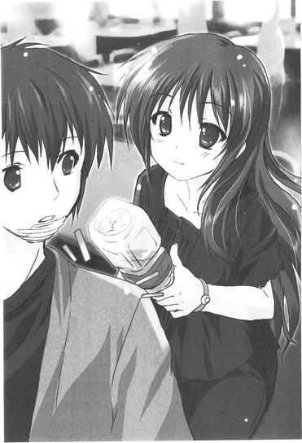
万里は思わずうっとりと、オーラを胸いっぱいに吸い込んでトリップ。いつだって、千波のかわいさはあらゆる現世の疎ましい事象から隔てられて別腹に思える。こいつはかわいさの天才だな、などとも思える。多分、彼女は神から与えられているのだ。「超絶かわいい」というギフトを。そして千波はその分け前を、下界の人間どもにばんばん与えてくれている。そりゃもう滴る雫を口あけて、全力で頂くしかないだろう。
黒い麻の刺繍入りブラウスをワンピースみたいにさらりと大きく素肌に着て、やはり黒のスキニーデニム。皮のサンダルに、今日はデイパックではなくて民族調の籠バッグ。服の黒から覗く首筋、手首、足首は白くて細くて祈れそうに華奢で、いかにも綺麗な、特別な女の子という感じがする。細いビーズのブレスレットを一本だけつけていて、それも肌色に映えて鮮やかだった。白と辛子色ベースにちょんちょんと赤が入った配色が際立って美しい。
今日の鬼かわいい千波の姿は、サラサラと粒子の細かい、ブラウンの塵を舞い上げる風の中を勇敢に渡る砂漠の民みたいに万里の目には見えた。それほどまでに、ドラマチック。
はあ～ん、と思わずため息つきつつ、
「なんか今日の岡ちゃん、馬で乗り付けてきた、って感じ......」
感想を述べる。が、千波にはピンと来なかったらしい。
「そうかな？ 普通に錦糸町からＪＲで来たけど？」
あんたって錦糸町だっけ？ なぜか勝手に御徒町に記憶が改ざんされてた、と香子が小さく呟くのが聞こえた。おかちなみ、おかちまち、......加賀香子......思わずメーテルが再び召還されそうになるが、まあつっこみはとりあえず後回し、
「いつものサイババコスプレよりそういう大人っぽい服の方が似合うね......」
感想を続ける。が、やはり千波はきょとんとしている。
「......あたしサイババコスなんてしたことあったっけ？」
その、きょとん、の部分だ。無邪気に万里を見返す瞳はまさに宇宙。星の瞬く久遠の黒。魔術でもかけられたように万里は立ち尽くし、千波の眼差しに吸い込まれてしまいそうになる。それほどまでに、かわいいのだ。別腹で。
しかしこの別腹感が伝わらない人もここにいる。万里の腕をがしっと脇から揺さぶるように猛々しく掴み、
「多田くん、店を変えましょう」
張り詰めた顔をして、香子が席を立つ。店というか、学食なのだが。
「見て。超音波が淫乱なドスケベオーラをむんむん出してる」
「おお......加賀さんの口からドスケベなんて言葉を聞く日がくるとは......」
「事実だからしょうがないよ。こんなところにいたら、あっという間にあの肉食めしべの餌食になっちゃう。あ、下の花的な意味でだよ？」
「はっ、そうか！ なんてこった！ 俺としたことが。危うく波打つ肉厚花弁のオカ狭間に囚われるところだったではないか！あ、下の花的な意味でだよ？」
「......も、もう突っ込まないぞ。なにも言い返さないぞ、あたし......」
独り言みたいに呟きながら千波はとっても失敬なカップルから思いっきり距離をとった。冗談冗談、うそうそ、といまさらのように万里がとりなしても、ぷん！とかわいくそっぽを向いて拗ねてみせ、
「ていうかあたしもそろそろバイト行く時間だし。どーぞ、まーまーごゆっくり。」
ひらっと軽く手を振る。それを聞いて万里は思わず、
「あ！ ほら。岡ちゃんだってバイトしてんじゃん。やっぱみんなしてるんだよ普通に」
千波を指差して、香子の顔を振り返った。香子はむっ、と眉をひそめ、千波は歩き出そうとしていた足を止めて不思議そうに問い返してくる。
「ん？ なにそれ。どういうこと？」
「聞いてくれよ、俺もバイトしようと思ってるんだけど加賀さんの許可が下りなくて止められてるんだよ。岡ちゃんからも言ってやってよ。バイトなんて超普通に誰でもやることだって」
「超普通だよー、誰でもやるよー、ていうかうちの店でも今バイト募集してるけど。万里もあたしと一緒に働く？面接受ければ？」
「えっ!? マジで!?」
「マジでマジでー」
電光石火の話の早さだった。話題にしてものの数秒、千波に誘われてしまった。露骨に香子は顔をしかめて「は!?」とか言っているが、
「ていうか職種なに!?」
万里はあっさり食いついてしまう。
だって、絶対に、バイトはしなければいけないのだ。香子の言うがままに従ってはいられない。だったら、友達と一緒のところがいいというのが人情ではないか。どうせ友達と一緒に働くなら、二次元とでもいいし、やなっさんとでもいいけど、千波とならば尚更いいではないか。なんて思ってしまうのも人情ではないか。あくまでも別腹で。
「代官山のカフェだよ」
「えーっ！ シーエーエフイー!? めっちゃオサレじゃーん！」
「んもー、めーっちゃ。すっげーよ。Ｔ、Ｔ、Ｔ、ＴＯＫＹＯー！Ｓ、Ｓ、Ｓ、ＳＨＩＢＵＹＡ、ＫＵー！って感じ。オサレ汁じわーっと出ちゃうほどオサレだよ」
「あっ!? 下の花的な意味でかな!?」
「あたしもうその話題には反応しないよ!?」
「ていうか普通に、そもそもそんなシャレオツなとこで俺なんか採用してもらえんの？」
「まあ、とにかく試しに一回来てみなよ。ていうか万里はこれからヒマなの？なんならあたしと一緒に行かない？なう、的な意味で。よかったら加質さんもー」
軽い物腰でのその誘いに、
「も、ってなに!?」
香子はキレた。ずいっと千波に歩み寄り、
「オマケみたいに言わないでくれる!? 私と多田くんは一心同体なの！ていうかこれからデートなの！あんたが誘惑している主体は、多田くん、アンド、ミーじゃないの！わ、た、し、た、ち！なの！ＷＥなの！わかる!?ダブリューで、イー！わかった!?わかって！今すぐに！ていうかわかれ！」
小柄な千波に覆いかぶさるようにして、その美貌はさながら夜叉の如し。
「はいはい、じゃああたしと一緒にいかない？えーと、あなたたち」
はっはーん！ と千波の誘い直しをバックドラフトみたいな鼻先で思いっきり笑い飛ばし、香子は麗しくも高慢に顎を突き上げてモデル立ち。
「い、か、な、い。いくわけが、ない。ありえない。下らないこと訊く前にちゃんと考えてみて？二人の時間をあんたなんかに邪魔させるわけがないの」
そうして悪役のクイーンぶりも丸出しに「だよね！」と意地悪く万里の顔を振り返るが、
「えー、行こうよ加賀さん」
ここはあえての裏切り行為でいく。当然香子は、
「はあ!?」
となるが。
「いつもこの辺か、うちの近所でお茶飲むばっかりじゃん。たまには加賀さんとオサレ空間でオサレ汁出したいよ俺」
いいじゃん、カフェ店員。などと、万里はすでにかなりその気になっているのだ。この勢いのまま、面接、採用、そして給料ゲットまで一気に突っ走ってしまいたい。時間を置いてしまったら、余計に身動きが取れなくなる気がするし。
「ていうかあたし邪魔なんかしないよぉ。店行ったら即店員モードだし、結構忙しいから、普通にお客さんと喋ったりとかしてられないし」
「ほら、岡ちゃんもこう言ってるし、行こうよ加賀さん、オサレ汁。付き合い始めたばっかなのにもうマンネリなんてその方がありえないじゃん」
マンネリ、ですって──恐ろしい呪いの言葉でも聞いたかのように、香子の眉間に探い皺が寄る。ここぞとばかりに万里は追撃、
「......もし加賀さんが一緒に行ってくれないなら、こそこそ隠れて俺一人で行くけど」
「えええ......!?」
思っていたよりも、効果はあったらしい。
香子は完璧とは到底言いがたい表情でよろよろと二歩ほど後ずさり、ぱさっ、と乱れた前髪がその鼻先に落ちてくる。
それを払うでもなく、ややあって、「ふぅぅぅぅ......」と憂鬱なため息をつく。香子もついに諦めたらしい。
「......わかった。今日のデートは、オサレ汁でいい」
それ店名じゃないからね、にゃは、と千波がかわいく話題を締める。
かくして、壮絶なるオシャレ空間に、万里と香子は身を置くことになった。
通りからはあえてわかりにくいように奥まった入り口で千波はバックヤードへ、二人は客席へと別れたのだが。
高い天井（おしゃれ！）に白基調のインテリア（おしゃれ！）。尻穴（おしゃれ！）に響くようなボサノバＢＧＭ（おしゃれ！）。万里はおどおどと周囲を見回す。完全に気圧されて、猫背率も通常の倍の角度。
代官山（おしゃれ！）である。
おしゃれな文化人の感性がビンビンに研ぎ澄まされて響きあうように増幅されて、カフェは、とんでもなくおしゃれなことになっていた。手にしたメニューはなぜか羊皮紙みたいな質感（おしゃれ！）で、かさかさで、万里の手汗をぎゅんぎゅん吸い込んでいく。
最初から散々千波におしゃれだおしゃれだとは言われていたが、こんなにもおしゃれな空間がこの世にあったとは。
「なんか、なんだろう......私、すっごく浮いてるよね」
「私、じゃなくて、私たちな」
さすがの香子も妙に居心地悪そうに、もぞもぞとソファに沈む尻を動かす。どれほど美人の香子でも、このオシャレ空間にははっきり、馴染んでいない。テイストがかけ離れているのだ。
根本的に、人間の種類が違うのだと万里は思う。共通言語がまったくない。この世界でよしとされる文化的素養の、バックボーンなしには受け入れてもらえない、そんな気がする。ただもう（おしゃれ！）と脳内で感想を発表するしかなくて、あとは気おされて萎縮するばかり。
「あー、この内装、本当に居心地いいよなー。自分の家のリビングにいるみたい」
「ほんと。ま、このカリモクのソファ、うちのスタジオに置いてるのと同じなんですけどね」
おしゃれなハットをかぶった男性二人がゆったりと微笑みあっているが、彼らとは永久にわかりあえはしないだろう。そんな予感がする。瓶ビールをひょいっと掴んでおもむろにアイコンタクト、喉にこもりまくった巻き舌で「チアーズ！」とかやっているのはどういうことなのか。ギャグでもコントでもないらしいのだ、あれが。
千波はしかし、さすがにすごい。
シャツにエプロンというお仕着せをさらっとおしゃれに着こなして、おしゃれなカフェのおしゃれな店員としてさっきからおしゃれに働いている。馴染んでいるのだ、この空間に。というか、千波というキャラはどんな空間に放り込まれようと、かわいさ一つで自在に渡りきれそうな気がする。万里には、彼女はそれほどの器の持ち主に見えている。
「......多田くん、ほんとにここで働けるの？」
「客としてすら成り立ってないもんな、俺、今......」
おしゃれ空間でおろおろと、あまりの困惑に万里の身体は平衡感覚さえ失って、今、ソファに斜めに埋もれていた。
＊＊＊
その夜、午後八時すぎ。
留守にしているかもと思いつつ、万里はお隣のインターホンのボタンに指を伸ばしかけ、ちょっと考えてやっぱりやめた。読めないチャイムの音量は、あの気難しい人の機嫌を損なうかもしれない。
なのでコンコン、と控えめにドアをノックしてみると、ややあって、
「......なんだよ」
ＮＡＮＡ先輩は咥え煙草でひょっこりと顔を出してくれた。相変わらず色気ゼロのＴシャツに、くたくたジャージ、異様に白いノーメイク。
開いたドアの内側から、煙草とお香の混ざったにおいがゆっくりと流れてくる。夕食時だというのに食べ物のにおいが一切しなくて、生活が一切感じられないのは妙にこの人らしいと万里は思った。ちなみに今の万里の部屋は、けだるいやきそば臭に満たされている。
「ええと、そのー、昨日はありがとうございました」
「......なんかおまえ、やきそばのにおいがする」
「あっ、やきそば。食ったんで。正解なんですけど、あのー、とりあえずこれをお返ししようと......」
万里が差し出した封筒に「あ？」と目をやって、
「ああ」
ＮＡＮＡ先輩はクリニックで金を貸したことを思い出したらしい。目を眇め、唇をすぼめて煙草の火を光らせ、強くフィルターを吸いながら片手でそれを受け取る。そしておもむろに身を捻って顔を背け、自分の部屋の玄関の中へ煙を吐き出す。もしかして、病み上がりの万里を気遣ってくれたのだろうか。
たったそれだけのことでなんだかいきなりほんわか気分、
「......ああ、不良はやっぱずるいな、雨で不良が捨て犬現象が今また......」
思わずぽろっと一人ごちた万里の鼻先でバーン！とドアが閉ざされる。さいなら、のひと言もなしに。
はっ、と気づけば外廊下に一人取り残されていて、
「......あ!? ちょ、ちょっとＮＡＮＡ先輩！まだ話終わってないんですけど！」
慌ててドアを叩くと、
「なんだようるせえな！」
チッ！ と鋭い舌打ちとともにＮＡＮＡ先輩は一応再登場して下さった。眉間に稲妻みたいなシワを寄せつつではあったが。
「や、渡したいものがあって！ もしよかったら、これを」
助けられた礼に、バイトすることを断念したおしゃれカフェでおしゃれなクッキーを買ってお土産に持ってきたのだ。万里が差し出したそれを一瞥する、ＮＡＮＡ先輩の不機嫌そうな視線。
本質的にはいい人なのだとわかっていても、やっぱりちょっと腰が引ける。まあギターで殴り倒されたり髪を引き回されたりケツを蹴り飛ばされたりしたし、身体は暴行の記憶を忘れてはいないのだ。
「......甘いもの、もしかして食べない人ですか？」
恐る恐る訊ねる万里の手からクッキーを奪い、ＮＡＮＡ先輩はしげしげと原材料が記載されたシールを見つめ始める。一体、といぶかしむ万里に、
「ナッツ」
とだけ。もちろん意味がわからない。
「......は？ 味的なことですか？」
「アレルギーなんだよ。ナッツ系だけはどーしても。これは大丈夫そうだしもらう夕飯にするわ」
「......えーと、夕飯、クッキーだけなんですか？」
「悪いかよ」
「......やきそば、差し入れすればよかったな。作りすぎて、さっきかなり無理して食ったんです。でも結構うまくて、自作自演だけっていうのも惜しい感じで」
はは、とドアにもたれたまま、ＮＡＮＡ先輩が小さく笑った。おまえなんかに餌付けされたくねー、と言いつつ。冷笑とかではないこの人の本当の笑い声を、初めて聞いた気がする。万里も思わず笑い返すと、
「それ、もう大丈夫なわけ？」
顎でしゃくるようにして、ＮＡＮＡ先輩は万里の口元の絆創膏を指し示してみせた。頷いて、
「大丈夫です。薬はまだ飲んでますけど」
「あっそ」
「本当にありがとうございました。ＮＡＮＡ先輩に助けてもらえなかったらどうなってたか......リアルに遭難してたところです。自分ちの前で」
再び頭を下げつつそう言った万里の脳裏に、そのとき、閃いた光景があった。
靴もなしに逃げた春先の山中。
暗闇の向こうに見えた光。
名前を呼んでくれた声。
あれは──ああ、そうだった。
「......ていうか俺、リンダ先輩にも遭難してたところを助けられたことがあるんですよね。なんか、遭難しては、女の人に助けられてばっかりな人生......」
「リンダ。ね」
ふぅーん。
と、妙な調子で呟いて、ＮＡＮＡ先輩は吸っていた煙草を指先でむしりとるようにして、下駄箱の上の灰皿に荒っぽく押し付ける。その動きをなんとなく目で追ってしまいつつ、万里はふと湧いた疑問を飲み下す。
──ＮＡＮＡ先輩は、自分とリンダのことをどれぐらい知っているのだろうか。
リンダとＮＡＮＡ先輩はものすごく仲がいいと思う。かなりの頻度で入り浸っているようだし、部屋に泊まったりもしている。なにか、自分について話をしたりもするのだろうか。
リンダを避けまくっていた頃、自分が話せる状況を無理やりに作ってくれたのもそういえばＮＡＮＡ先輩だったっけ。
この人は、どこまで知っていて、そして今はなにを思っているのだろうか。
「......なんだよそのツラは。なにか、調子悪いことでもあんのかよ」
黙ってしまった万里の顔を見上げて、ＮＡＮＡ先輩は腕組みしてみせる。言えよ、と促すみたいに、次の煙草に火をつけないまま待っている。
思わずぽろりと弱音が喉から零れかけ、
「調子は......まあ......悪いんですけど」
「へえ」
しかし、踏み止まった。
「......主に......そのー......金欠で」
へらっ、とアホ面で笑ってみせる。ＮＡＮＡ先輩は妙に長くも思える一息分の間を空けて、呆れたみたいに小首をかしげた。そして差し出すのだ。
「また今度でいーよ」
借金返済封筒を。万里は慌ててほとんど飛び上がり、
「えっ!? あっ、いやいやいや！ そういうつもりで言ったんじゃないっす！まじまじまじ、それは受け取ってもらえないと困ります！」
必死に固辞するが、
「無理すんな」
押し付けられそうになってさらに後退。ケツから逃げるザリガニみたいになりつつ懸命に首を横に振り、両手を後ろに隠す。
「いえいえいえいえ！ ていうか大丈夫ですほんとに！バイトも探してるとこですし！」
「バイト？ ......今は？」
ＮＡＮＡ先輩はやっと封筒を返すのを諦めてくれたらしい。手を細い腰に当てて訊ねてくる。
「やってないっす。あ、もしなんかコネとかツテとかあったら紹介してください、できるだけ払いが早いところで色々探そうとしてて」
「......今度の週末」
それは、千波のオサレ汁に次ぐスピード感であった。
「一晩でかなり稼げるバイトあるけど、やる？イベントっていうか、パーティの給仕なんだけど。日払いで即もらえるよ。......まあ先に言っとくけど、おまえにはちょっと荷が重い仕事かもしんない」
ＮＡＮＡ先輩の言葉に、万里は再び食いついた。パーティの給仕──イメージは湧かないがなんとかなりそうな気もする。少なくともあのオサレカフェよりは。
「ぜひ！ やりたいです！ 金、絶対いるんで！面接とかあるんですか？」
「あたしが紹介するから落ちるってことはないと思うけどね。......ただしいっこ、条件がある」
グダグダのＴシャツの裾から手をつっこんで平らな胸付近を荒っぽくがしがし掻きつつ、ＮＡＮＡ先輩は細すぎる眉をひょいっと片方上げてみせた。
「柳澤、とかいうヤツ。リンダが言ってたけど相当見た目いいらしいじゃん。そいつ、連れてこれる？」
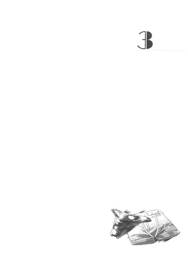
３
その日、夜の八時を回ってから柳澤は万里の部屋のドアを叩いた。
「おーっす。仮眠とった？」
「とろうと思って布団でじっとしてたけど結局眠れなかった。やなっさんは？」
「俺も同じようなもん」
いつもながらのシンプルなＴシャツにデニム、脱ぎ履きの面倒なブーツ。飾らないのがなにより美形なのを引き立てる姿で、友人はソックスで部屋の中に上がりこんできて、ビニール袋を手渡してくる。
ＮＡＮＡ先輩には、朝まで働きづめになるから仮眠することと、休憩時間が取れるかわからないから食事を済ませてくるように言われていた。なので万里が白飯を炊いておいて、柳澤がおかずを買ってくるというコンビネーション。
だいたい常に金に困っている柳澤が日払いバイトの誘いを断るわけもなく、ＮＡＮＡ先輩の条件は軽々とクリアできてしまった。そうして二人は今日を迎えた。
一円単位まできっちり割り勘で小銭を渡し、万里はさっそく簡単な夕飯の支度に取り掛かる。もう何度もこの部屋に遊びに来ている柳澤は勝手知ったる様子でローテーブルの一辺にあぐらで陣取り、万里が読み散らかしたテレビブロスや投げ出したレポート用紙の束をさくさくと隅にまとめていく。そしてテレビのリモコンをいじりつつ、あれ？とテーブルの下に目をやった。
「万里の携帯鳴ってない」
「あ、メールだから大丈夫」
充電中の万里の携帯の受信ランプはピカピカと光り続けている。
炊いておいた白飯を適当な茶碗によそってやってテーブルに運び、キッチンに一度戻ってお茶のボトルとグラスも持ってきて、それからメールを見る。
「香子？」
「うん。先食っていいよ、つか俺の分もお茶ついで。即返信しないと加賀さんキレちゃうから。長州小力みたいになりながら」
キレてないよ？ と貼り付けたような完璧笑顔で首を傾げる香子の姿を正しく脳裏に描けたのか「ははは！」と柳澤は笑うが、実はそれほど笑い事ではないのだ。
最近の香子──万里の体感ではバイトの件があって以降──は、本当に、激しい束縛キャラになりつつある。
やたら神経質につまらないことを気にして、たとえばメールの返信が遅いとか（普通に気づかなかっただけなんです）、講義に遅刻してきたのはなぜだとか（便所に行っていたからです）、今黙ったのはなぜだとか（黙った自覚もありません）、おとといのバッグ（黒のレザー）と昨日のバッグ（黒のレザー）と今日のバッグ（黒のレザー）、どれが一番かわいい？え？違いがわからない？......なんで？私のこと眼中にないわけ？
とか。
講義の後はべったりとずっと一緒にくっついていたがって、男同士で遊ぶこともままならなかったし、たまには一人でダラダラ過ごしたいという人間としてはそれほど不自然ではないはずの欲求さえ満たされず、客観的にいって、かなりストレスフルな日々が続いていた。
もちろん、今日のバイトのことは香子には言っていない。
香子がとっていない講義のレポートを忘れていて、明日提出するために徹夜でやらないといけない、と嘘をついて、三限の後に別れて帰宅したのだ。レポートやるところ見てたい、静かにしてるから、と香子はついてきたがったが、「ごめん、今回だけは本気で集中しないとやばいから！」と、断った。
香子を海に連れて行くためだから、と思えば、嘘の罪悪感はさほど胸を痛めなかった。それにそもそも、万里にバイトをさせたくないという香子のわがままの方がよほど常軌を逸していると思うし。
なにより、第一、
「うざいだろー、香子の鬼束縛」
「いーや？ 実はそれほど嫌でもないんだな、これが」
......本心から、そう思っているから。
うざいから、うっとうしいから嘘でだまして遠ざけているわけではない。だからしょうがないんだよな、と万里は今夜、自分を責めるつもりはないい。
香子からのメールはいつもどおりに他愛もないものだった。『紅茶飲んでる☆』そんなもんだ。そうなんだ～、以外に返信の、バリエーションもない。毎度毎度、こうだ。おはよう、おやすみ、これからごはん、ごはん食べた、ネイル塗った、ネイルとった、眠い、おなかすいた、うちの猫、うちの弟、暑い、寒い、楽しい、つまらない、今どこ？なにしてる？私のこと好き？どんぐらい好き？ねえ、ねえ、ねえ......。万里の携帯の予測変換は、「そ」でそうなんだ～、「お」で俺も～、「わ」でわかった～、「ち」で超好きだよ！......すっかり調教されつつある。
でも、構わないのだ。本気で。
笑い事ではないし常軌を逸しているしストレスフルではあるのだけれど、そんな状況に陥りつつある自分を、万里は結構楽しんでいるし嬉しがってもいる。あんな子がこんな俺にそんなにしつこくしてくれるなんてすげー、とか。
結局のところ、ごくシンプルに、自分は香子を好きなのだと思う。
困らされるのも歓びだと思えてしまうほどの本気さで。一日三十通を超える内容のないメールを見てもへらっと笑みが零れてしまうほどに。痛いのも重いのもめんどくさいのも、全部丸ごとかわいくて仕方がない。香子が自分を好きでいてくれることも、自分に執着してくれていることも、ただただひたすら嬉しくて、この状況を貪っていたい。
こんな日々を、時間を失ってしまったら、この人生のどこに喜びを見出せばいいのかわからなくなってしまうだろう。本当に味気ない、無意味な命になってしまうと思う。からっぽになってしまう。
本当に、そう思うのだ。
あんなこと──リンダへの想いが蘇ってしまう、なんていうことがあった今でも、その分容量が食われて香子への気持ちが減るというものではないらしい。万里の一つしかないはずの心には、二人分の恋慕が食い合うわけでもなしにだぶって存在しているのだ。そんな自分を嫌わずにいられるかどうかは別として。
人間ってそんなに器用なものなのだろうか、と、最近は不思議にさえ思う。みんなこうなのだろうか。それとも、記憶喪失という問題を抱えて、人格の固定があやふやな自分だからこうなってしまうのだろうか。
いずれはこのままではいられなくて、なにか破滅的な事態が起こって、誰かを大きく傷つけて、目も覆いたくなるような破綻が訪れるのだろうか。
......その過程で、自分の心も変わっていくのだろうか。
だぶっていたもののどちらかが自然に滅びていく、やがてそうなっていくだけのことなのだろうか。
そのエピソードの発端に今、立ち始めたというだけのことなのだろうか。
「香子はおまえと出会って、付き合えてよかったな、マジで」
先にガツガツと食事を始めつつ、柳澤がそんなこと言う。
短い返信を香子に送ってから、万里はその横顔を振り返って見た。いかにも健康的な、若い男らしい大きな口に食事がどんどん運ばれていく。気圧されるような、後ろめたいような、微妙な気持ちで万里はたっぷり数秒それを見つめてしまい、
「......なんで？」
などと、少々間抜けに訊き返してしまう。あん？と柳澤が横目で見返す。
「なんでってなによ。だってほら、あの溢れるストーカー気質を受け入れてくれるヤツなんてそうそういないだろ。よくおまえは耐えられるよな、ってこと」
「......そりゃー、当然、好きだからね。加賀さんのこと」
「っつったって、限度ってもんがあるじゃん。最近の香子とおまえの様子を端から見てると、とっくに限度を超えてると俺は思うもん。二次元もちょっと引いてたし。普通に。ずーっとべったりじゃん」
「でへへ」
携帯を置いて、万里もテーブルについた。茶碗と箸を手にとってごまかし半分、まったり笑ってみせる。
絆創膏の下の口元の傷はもちろんまだ生のまま、だ。乾きもしなくてひどく痛む。
「普通に、じゃなくて、すっごい好きだから大丈夫なんだよね」
「うおー......ひっさしぶりに万里のノロケ聞いちゃった。やっぱきめえなそのノリ」
気持ちいいリズムでおかずを平らげてしまいながら、柳澤がさらに笑う。健全なその整った笑顔を見ていると、自分とはなんてかけ離れたところにいるんだろう、なんて思ってしまう。
健全と不健全。イケメンとブサメン。正直者と嘘つき野郎。振った人と、告白した人。ポジとネガみたいな、正反対の存在。
なんとなく箸が動かなくて、万里はそのまま口をつぐんだ。こんな自分は、柳澤の目にはどう映っているんだろうと思う。そして香子の目には。リンダの目には──。
不意に、鏡を覗き込むような感覚が訪れた。
（好きだから大丈夫、ね）
多田万里が、食欲をなくしてぼんやり佇んでいる。
自分の部屋の自分のテーブルの前で正座して、右手に箸を、左手に茶碗を持っている。
ケガした唇はいまだに腫れが引かないままで、能天気なツラには絆創膏が一つ。いつものデニムにオーバーサイズの部屋着Ｔシャツ。だらしなく伸びかけた髪は長すぎて、後ろで派手に跳ねてしまっているが万里は気づいていないらしい。
（リンダのところに帰りたい、なんて思ってしまっていることが後ろめたくて申し訳ないから、なんでも許すし、なんでも耐えられる、......でなければいいよなあ）
鼻先が触れるほどの距離で、俺は、かつては自分のものだった肉体についた顔をじっと見つめた。本気の色と嘘の色を、こいつの目の中に探したかったのだ。
（なんかそれって最低だもん）
「......」
呟いたのは、誰だったのだろうか。
ぼんやりと目を見開いたままで動きを止めている万里の肘を、隣から柳澤が軽く小突いた。我に返って、その顔を見る。
「どうした？ 食えよ、隣の先輩、九時ごろ迎えに来るって言ってたんだろ？」
「......あ、うん......」
「給仕かぁ、初めてだなー俺。酒とか作らされるのかな、やっぱ。酔っ払いの相手とか、ゲロの後始末とかやだなー」
「......あー、どうだろうね？ あんま仕事の内容はちゃんと聞いてなくて」
「ホストみたいな仕事だったらどうするよ？ なんかチャラチャラコールとかさせられたりして。俺らこんなに内向的なのにさ」
屈託のない、爽やかな笑顔。
香子の隣にいても、なんの遜色もない美形だと改めて思う。それでいて付き合いやすいし、普通にすっごくいいヤツ。友達になれてよかったと心から思える男。
香子がこの男に恋をしていたのはまったく自然なことで、それは万里にも十分理解できた。女だったなら自分もあっさり惚れていたかもしれない。
むしろ、いまだによくわからないのは、このステキなやなっさんから、なぜ、明らかにレベルダウンする自分になど『心変わり』したのだろう、ということ。
香子の心の中では柳澤光央と多田万里がだぶって、そして、多田万里の方だけが残されたわけだが、一体なぜそうなったのだろうと思うのだ。柳澤光央にはきっぱり拒絶されて、多田万里は告白してきたからなのだろうか。それだけのことで、十年に及ぶ片想いの整理が本当につくのだろうか。
明らかに価値が低い自分を選んだ、香子の選択。改めて考えれば、それは本当に不思議な、理解できない部分だった。
自分のように、記憶喪失になったわけでもないのに。
それなのに、どうして、そんなことが、できたのだろう──一体どうやって。
そのやり方をとにかく彼女は知っている、のだ。
再び考えに沈んでいってしまいそうになる万里を、そのとき、玄関のノックが引き戻した。その荒っぽい音。猛々しい叩き方。
「あ、多分ＮＡＮＡ先輩だ」
万里は箸を置きかけるが、
「俺が出るよ」
最後の一口をぱくっと大きく口に含んで、柳澤が立ち上がる。万里は身体を捻って振り返り、玄関の方を見た。
ドアの外には思ったとおり、ＮＡＮＡ先輩がいつものコスプレ......ではなくてパンクな出で立ちで立っていて、それを見ての柳澤のリアクションも待たず、
「ふーん。あんたがヤナっていうんだ。なるほどね。確かに上玉じゃん」
「きゃっ!?」
いきなり柳澤のＴシャツの裾をいきなりべろんとめくりあげて腹筋確認。よぉーし、とひと言、そして万里の位置からは見えない外廊下の方を振り返り、
「リンダ、よくやった！」
などと言うのだ。
万里は口に運びかけていた和風ハンバーグを取り落としかけた。
今夜は、ＮＡＮＡ先輩に紹介されたバイトに柳澤と行く。その予定だった。
しかしリンダも一緒だとは聞いていない。あ！どうも、こんちは！と、柳澤の声が玄関の空間に嬉しげに跳ねる。
＊＊＊
事態ははなから混迷を極めた。
「どっち!?」
柳澤は差し出されたピチピチシルバーのボクサーパンツと、ラメ入り肌色ビキニパンツのどちらも選べず、
「う、うぅぅぅ～～～～～ん......！」
さながらロダンの考える人。或いは、便秘に悩むイケてる男。
上半身剥かれた半裸の姿でパイプ椅子に腰掛けたまま、脂汗を流して二枚のパンツを必死の面持ちで見比べている。
「早く決めて！ 決めたら穿いて！ あんたは出来たの!?」
苛立ちも露にパンツ二枚を柳澤に投げつけて、怪人の視線は万里へ向けられた。さっと立ち上がり、
「へい！ できてます！」
「ブス！」
披露と同時、唾とともに罵声を浴びる。が、
「でもなんかエロぉ～い......！」
べろーんと指輪ぎっしりの手のひらに内腿のきわどい部分を撫でられてしまった。そうか、俺、エロいか、と妙な感慨に耽る万里と半裸の柳澤を残し、でっぷり太った巨体をダンディ坂野みたいな黄金スーツに包み、マスクをつけた中年のおっさんは「社長ー！」と呼ばれてそちらへ行ってしまう。スーツのスタッフに「あっ社長、今宵はマスカレードっすね！」と声をかけられて嬉しげに「あたしファントムよぉ！オペラ座の怪人なの～！」としなを作っている。ダンディ坂野だ、っつってんのに。
「さ、やなっさん、どっちにするか早く決めないと！」
「お、おう......、でも俺ほんとにちょっと迷っちゃって......ああ、どうしよう!?くそっ、こんなことで悩む日が俺の人生に訪れるなんて......！」
右手に掴んだシルバーなら、透けない。そして布面積的にケツは無事だ。
左手に掴んだ肌色ビキニは透ける。そしてＴバックとまではいかないが厳しく抉れた股間の角度からしてケツも恐らく無事ではすまない。ただし、「こっち穿くなら一万上乗せしてあげる」と社長は言っていた。
どちらにしても、シルエット的にはもちろん無事にはすまないし、柳澤はこの下着一枚で、クネクネと裸体を人目に晒されなければならないのだ。それが今宵、彼に言い渡された仕事のすべてであった。
視線の先を、柳澤と同じ役目を任ぜられたらしきモデル風の外人の美男が、堂々とした肌色ビキニスタイルでビール片手にトコトコと歩いていく。そのゆさゆさと確かな質量をもって揺れる、股間の、限りなく生々しい雰囲気たるや。思わず二人して見送ってしまう、その後姿の尻肉の露さもまた、柳澤の形よい口元から言葉を奪う。
広い、しかし暗くて暑いバックヤードにはあらゆるどぎつい扮装をした今夜の同僚が二十名近く、さっきからせわしなく駆け回っていた。幾重にもかけられたカーテンで仕切られた会場からはすでに重低音のＢＧＭが響き始め、人々のざわめきも伝わってくる。厨房スペースからはよくわからない怒号。もう開場が始まっているのかもしれない。
ＮＡＮＡ先輩に車で連れられてきたのは、かつて香子と乗り込んだ、あの思い出のライブハウスだった。
今日は貸切でパーティが行われるのだ。その主催者が「社長」で、会場に入るときにすでに列をなしていた客たちは、若い者から怪しい中高年まで、総じてド派手で性別も怪しげな連中ばかり。誰だかの誕生日祝いだと聞かされていたが、コスプレパーティみたいなものなのだろうか。ドレスやスーツの綺麗目な人々に混じって、仮装、女装、男装、着ぐるみから本気度高めのドラッグクイーンまでチラホラと、皆、ハロウィンばりに思い思いの奇抜なスタイルで、耳が割れるほどの大音量で流れるケミカルブラザーズに迎えられ、地下の怪しい密室に吸い込まれていく。
そんな人々を見た時点で、これはなにか大変な仕事かもしれない、と鈍い万里も薄々気づいた。柳澤も万里の目を見てちょっと黙り込んだ。しかし平気な顔をしたＮＡＮＡ先輩とリンダに前後から挟まれて、二人は覚悟を決めるしかなかった。
ＮＡＮＡ先輩に紹介されて社長と顔を合わせるなり、柳澤はＴシャツを剥かれ、「そっちのあんたはＯＫ！選んで！」と二枚のパンツを突きつけられて、こうなった。ちなみに剥かれたＴシャツは、社長に思いっきり顔を埋められて匂いを嗅がれまくった挙句、「なにこれださーい！最低！二度と着ないで！没収！」と奪われてしまい、半裸で帰宅するのがすでに決定済みである。
そしてなにかがＯＫではなかったらしい万里は柳澤とは違う役目を言い渡されて、
「迷うぐらいなら、こっちにしたら!?」
すでにすっかり支度はできている。その余裕も一応あって、
「どうせどっちも恥ずかしいんだし、それなら一万余計にもらった万がいいだろ！」
冷静な判断をしてやったつもり、漏れ聞こえる大音量の音楽に負けないように声を張って、万里は肌色ビキニを指差してみせる。
「えええ!? マジか......!? マジか......！」
柳澤はしばし絶句して透け透けラメパンツを握り締めたままで息を詰め、ややあって、
「ていうか......むしろ！ むしろおまえ！ それよく恥ずかしくないな!?俺ちょっと尊敬するよ!?」
おもむろに万里の姿を見上げた。まーね、と万里は己のなりを改めて見下ろす。
「俺はもう慣れた！ この姿の自分を受け入れ済みだ！」
ブスだがエロい、とオペラ座のダンディ坂野に評された万里の姿は、銀髪のふわふわボブヘアのウイッグに、ビスチェ装備でゴスロリ要素も含んだ、黒のミニスカートメイド服。
一応メイクもしてもらっているが、とりあえず、我ながら、本当にそれほどかわいくないのだ。晒された骨っぽい胸元といい、パフスリーブから出た腕の感じといい、ガーターから露出した柔らかさの足りない腿の質感といい、どこをどう見ても身体つきは貧相な男そのもので、いかにもみじめな女装子スタイルである。これが、今宵の万里の姿だった。
「なんかこの口の傷がね、『あんたはご主人に手荒に扱われているメイドって感じ！手荒に扱われている理由はね、ブスだから！』......って社長に言われてこれになった！」
「ほ、ほう......！」
銀のお盆を脇に抱え、渡されたイヤホンを片耳につっこんで、ポシェットに入れられた無線を斜めがけにして、ポーズ。鏡に映る自分の姿に、ははは、と乾いた笑いが漏れる。
「さあやなっさんも着替えるんだ、男には着替えスペースなしだってさ！みんなその辺でフリーダムに全裸で着替えてたし」
「......わかった。ちょっとそこに立って。俺のこと隠してて」
「いいよ！」
ふんわりと花を伏せたような形で広がるフリル付きのミニスカートの陰に柳澤を隠してやって、万里はウイッグの毛先を指先でちょっとつまんでみる。ごわごわとしたレースの胸元に触って布地の襞を整え、傷を避けてグロスを塗られた唇をふにふに合わせてツヤを確かめる。
さっきから耳を聾する重低音のリズムに脳は麻痺したようになりかけてもいて、女の子ってこんな感じなんだ、などと、なにやら妖しい感覚に囚われつつある。ハイヒールを履かされた足は自然とまっすぐに伸びて、すうすうとして、妙に見られていることが意識される。毎日ハイヒールの香子は、いつもこんな感じで世の中を生きているわけだ。髪を意識して、服を意識して、メイクを意識して、足を意識して。改めて、彼女の完璧を目指す美意識の高さに感服する。
「は、穿けた......けど......」
柳澤が蚊の鳴くような声で呻いた。振り返ってみれば、ほとんど全裸。
「......俺、これ、大丈夫かな......!?」
きりっと整った男らしい顔立ちに、動くたびに筋肉の陰影が悩ましく浮き上がる彫像のような身体であった。
肌色ビキニの中央部にきらめくラメが、かえって「皆さーん！ここが猥褻物ですよー！」と喧伝するみたいでいやらしく、
「......だ、大丈夫だよ！ 超ステキだよやなっさん！」
万里は思わず拍手を送ってやっていた。「ああくそ！」と激しく恥ずかしげに柳澤は髪をかきあげ、ヤケクソ気味に背筋を伸ばして、脱いだデニムと下着とソックスをイスに放る。
ヒュー！ と通りがかり、万里と同じく銀盆を抱えたブラックチャイナの女装子......いや、本物の長身の女の子なのだろうか、とにかく今宵限りの同僚が口笛をくれる。
「サンキュー！ ったく、道理でめっちゃ金がいいはずだと思ったよ！普通のバイトのわけがねえんだよな、あの額で！」
「しかもやなっさん、透け透けパンツでプラス一万ゲットだしね！」
「これ千波に見られたら俺死ぬかも！」
「いやー、岡ちゃんは普通に受け入れてくれるんじゃね？ゲラゲラ笑ってとりあえずオカメラ回してー、って！」
「いや、無理無理無理！ 俺が耐えられない！おまえこそそれ香子に見せられんのかよ？」
「うん！ 加賀さんも結構大丈夫そうじゃん、俺は普通に見せられるよ！」
むしろ、見られたくないのは女装ではなくて、嘘をついてバイトをしていることそのものではあるのだが。
「マジで？ やっぱおまえ結構つええな！ ていうか、俺らがこの有様じゃ、あの人たちはなに着せられてるんだろう？ＮＡＮＡ先輩とリンダ先輩！」
「あたしらも着替えるって消えていったきり、さっきから姿が見えないけど！」
「まさかコレじゃねえだろ！」
と柳澤は自分のナリを指差し、
「まさか！」
万里はゲラゲラと笑ってしまうが、そのとき、
「ああっ!? や、やなっさん......だよね!?えっ、多田万里!?うわわ、ＮＡＮＡ先輩、見て見て見て！」
「うお、すっげー！」
リンダとＮＡＮＡ先輩の声だった。振り返って二人の姿を目にして、
「えええ......ええ......っ!?」
「いや、そちらこそすごいっすよ!?」
万里と柳澤も思わず指差し、互いに驚きあう男女ペア二組になってしまう。
リンダとＮＡＮＡ先輩は、ぴったりお揃いのファッションで身を固めていた。
万里のと形だけは同じ、顎のラインで切り揃えられた紫のボブヘアのウイッグ。悪魔の角がついた黒のカチューシャに、片耳イヤホンと無線機のポシェット。
そして、なんと白い素肌も露に、上半身には黒レザーのビキニトップのみ。
頼りない皮紐を首の後ろと背中で結んだだけで、胸元も背中も腹も脇もヘソも、すべてが暗がりに真白く浮かび上がるみたいに晒されている。それでもこの露出度でエロさをあまり感じさせないのは、ＮＡＮＡ先輩はストイックなほどにスリムすぎ、リンダは筋肉のバランスが綺麗すぎて、生々しさがあまりないせい、だろう。かつ、二人でセットのお揃いぶりが、キャラクター度を増しているというか。
下半身はやはりレザーのショートパンツにラメのタイツとニーハイブーツで、銀盆片手にくっついて、二人はまんま、
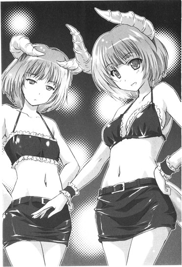
「私ら『双子の悪魔』だってさ！」
ＮＡＮＡ先輩の言葉通り。ちなみにこの人は薄い胸のビキニに、ライターと煙草を三本だけ、無理やり突っ込んである。耳朶から軟骨まで連なる痛そうなピアスが、重低音が震わせる闇の中でチラチラと誘うみたいに妖しく光っている。
一方リンダは少々恥ずかしげに盆で胸を隠しつつ、
「社長には『しっかしおまえら色気ねえな！ ガリガリのまんま枯れて死ね！』って言われたけどね！つーか......」
んふふ、と鼻声で笑う。
「やなっさんも多田万里も、結構似合ってるじゃん、それぞれに！」
ちらっと万里を見上げる、強い目線。その顔には、いつもと違うきついメイク。
ＮＡＮＡ先輩は普段見ているメイク顔とさほどの違いはないが、リンダのその顔は、まるで知らない人のようだった。
目蓋を黒く塗り潰すようなアイシャドウに、強烈な猫目に跳ね上げたアイライン。艶のあるつけ睫毛。細く整えた眉に、色味をあえて消すようなリップ。
もともと小作りに整った涼しげな顔立ちだけに、メイクで変身したリンダは本当に別人だった。目鼻立ちは異様なほどに美しく思え、小さな顔の輪郭はいとけない少女のようで、そっけない視線はものすごく底意地が悪そう。女にしては腹筋がしっかりとした、立体感のあるスタイルもおそらく相当に人目を惹くだろう。どうやって身についたのかわからない、踊らせても一級の鮮やかな身のこなしが、悪魔なリンダのルックスをさらに際立たせる。
飾り気がなくて、あっさりとした、ナチュラルで、シンプルな──そんな普段のリンダのイメージが、今夜は完全に逆転していた。全部が逆だ。危なっかしさを濃厚に滴らせた、有害な悪魔、そのもの。
「リ、リンダ──」
吸い寄せられるように、万里はリンダの耳元に口を寄せていた。しかしその瞬間、会場の音楽のボリュームがさらに上げられて、
「──先輩は、このバイト、初めてじゃないんですか!?」
「ん!? なに!?」
声はもはや届かなかった。
「さあいったいった！ 全員仕事ー！ おらいけー！」
スーツのスタッフが手を叩き、テンションの上がったバイトたちを会場へ送り出す。
柳澤は不安げにおどおどと立ち竦むが、同じ出で立ちの外人がにこやかに近づいてきて耳元になにか囁き、そのまま両手でぬるぬると柳澤の身体にラメ入りのオイルを塗りたくるのが見えた。その手つきのゲイ丸出しないやらしさに、うわ、と万里はちょっと驚くが、柳澤はなにか決意したみたいに、オイルを自ら手にとってさらにたっぷり全身に伸ばし始める。仕上げにその手で髪をかきあげ、わらわらと集まってきた他の美男子たちとカーテンの向こうへ消えていく。ちなみに全員肌色ビキニで、チョイスは正解だったと思えた。
万里の背中をぐいっと押して、ＮＡＮＡ先輩が顎をしゃくる。
「さ、行くよ！ やることわかってるか!? バーテンのところでまずは盆に載るだけ洒もらって、客の間をできるだけ動き回って勝手にとってもらう！注文受けたら、それを届ける！そのうちフードも出てくるから、同じく勝手にとってもらう！盛り付けはバーテンの子がやってくれるから！グラスとかゴミは常に回収しまくる！まあうまいこと空気読んで、背景の一部になりきって、クールに淡々とやれって感じ！」
「わ、わかりました！ あ、そうだ携帯......」
椅子に置きっぱなしにしたバッグのポケットに、万里は携帯を突っ込んだままにしてあった。無線のポシェットに入れてバイト中も持ち歩くつもりだったが、
「携帯!? だめだめ、それ社長にめっちゃ怒られる！」
リンダにたしなめられて、断念。まあ仕事だし仕方がないだろう。
盗難されないことだけを願いつつ、バッグを椅子の下の見えにくい場所に置きなおし、リンダとＮＡＮＡ先輩の後を追って万里もカーテンをくぐった。
むわっと湿った熱気の圧力と網膜を焼くレーザービームが、爆音のブレイクビーツとともに真正面から万里の身体に襲い掛かる。
＊＊＊
年甲斐もなくサイリュームを汗に塗れた身体のあちこちにつけて踊り狂う人々のうねりを掻き分けて、万里はハイヒールでフロアを闊歩していく。
「なんでもいー！ 強い酒ちょうだい！」
薄いワンピース一枚で銀のホイッスルを胸の谷間に挟んだ四十路手前に見える女に耳元で叫ばれ、万里は足を止めた。
パーティが始まったばかりのときは、呼び止められるたびに「あっ、はい！」「えっと、ご注文は！」とかやっていたのだが、あんたおどおどしすぎてるの！と社長にどやされて、口にまとめて三粒、ガムを突っ込まれた。感じ悪くてもいいからずっとクチャクチャやってなさい！と言われるがまま、万里はずっと味のなくなったガムを律儀にかみ続けている。
そうして無言で、ちらっと横目。頷くだけで身を翻す。
銀の盆には、あっちこっちから伸びてくる腕が勝手に空いたグラスを載せてくる。ちゃんと受け取って、バーカウンターへ歩いていく。見た目だけはグラス型、実はプラスチックのコップは軽くて、いくつ重ねても危なくはない。
用意されている酒の中から適当なのを選んで、さっきの人のところへ戻っていく。熱狂している客にぶつかって酒をこぼして浴びるのはもうやった、二度と御免だ。
酒を届け、空いたグラスを回収していると、無線でオードブルを配るように指示が出た。確かにそろそろ頃合だと思えた。ほぼ全員、休む間もなく踊りまくり。皆様カロリーを必要としているに違いない。
パーティはとんでもなく盛り上がっていた。
日付をまたぐ頃にバースディソングを流し、女性だった主賓が巨大なケーキの蝋燭（若く見えたが45本だったのを厨房で見てしまった）を吹き消したときだけが、今思えば唯一のまったりタイムだったのだ。
あれから何時間が経ったのか、客はさらに増え、酒は出続け、ゲストのＤＪは万里も知っている有名人だったりして、いい年こいた大人たちの、バカ騒ぎは止むことがない。
そんな中でさらに熱い歓声が上がって何事かと振り返れば、会場のあちこちに設えられた台の一つ、外人モデルが肌色ビキニで裸体をくねらせるお触り厳禁なはずのショーケースに突如社長が躍り上がり、黄金スーツを脱ぎ捨てて、自前のカルバンクラインいっちょのナリで背後にびったりくっついている。いやらしく腹を波打たせて重ねた腰を突き上げるように男二人が絡み合うと、見上げるおばちゃんたちのボルテージが一気に上がる。やがて社長はしきりに両手の指で「ゲッツ！ゲッツ！」と、やっぱりダンディの自覚もあったらしい。せめてソックスを脱げ、とも思うが。
柳澤は、と目をやれば、別の台で明らかに「俺んとこに来なくてよかったぁぁー！」な顔をしていた。そのわかりやすさに思わず吹き出しかける万里と目が合って、奴も軽く歯を見せて笑う。その笑顔に向けられる、女性たちプラスアルファの視線、視線、視線。
明滅しながら乱舞する光線の中で、柳澤の肌が光っている。しなやかな筋肉質の身体は、若くて美しい獣のようだった。外人モデルたちにも引けをとらないスタイルで、両腕を高く上げ、音楽に合わせて腹筋をくねらせ、結構さまになっているではないか。
一度トイレ休憩を挟んだときには「外人さんに、とにかく自分の真似してればいいよって言われて、そうしてる！」と髪から汗を滴らせながら息を荒げていたが、なんだかんだ、楽しそうにも見える。煽るように肩を揺らし、冷たいほどの無表情を作り直し、手の届かない距離で熱い視線を向けられて、会場を盛り上げる美しき装置の一つになり切って、何者でもない匿名の存在として一晩限りの熱狂を先導するのだ。
わからなくもない心境だと万里も思う。
多田万里の人生から切り離されたこの夜は、自分にとっても意外と悪くない。
非日常の空間で、こうして別人になりきって、ガムをくちゃくちゃやりながらクールに感じ悪く、ただ仕事だけをこなすマシンになる。そうして時間が過ぎていく。音楽と地響きはハイヒールから骨盤、脊椎、頭蓋骨、脳髄まで伝わって、ビリビリと痺れるような刺激を与え続けてくれているし、闇に踊るどぎついライトは狂ったよう。
五感は強すぎる刺激に塗り潰され、自我は別人格に塗り潰され、肉体はバイトに使役されて、自分で選択する余地もない。今はそれが、妙に気持ちいい。
なにも持たない身体一つで、この夜を鮮やかに乗り切ってやるのだ。
オードブルの皿を銀盆に移そうと身を屈めたその腰を、背後から掴むように触れられて振り返った。
悪魔が──リンダが、笑っていた。
暑すぎるせいで露な素肌をびっしょりと汗に濡らし、頬も鎖骨も肩も濡れ光らせ、暗闇でもわかるほど顔を紅潮させて、万里を見ている。そして、
「疲れてない!? 大丈夫!?」
身体を突き上げるような重いビートに合わせて軽く腰をくねらせながら、リンダは耳元で叫ぶ。あっちもこっちも、もはや完全に耳はバカになっているのだ。
「結構楽しんでます！ なんか、案外はまっちゃいそうな！」
身を近づけてその耳元に万里が叫び返すと、紫の人工毛を汗で頬に貼り付かせながら、リンダは大きく頷いてみせた。
「そーなんだよ！ 私もなんか楽しくて、実は社長のイベントの仕事、もう四回目！」
「へー！ いつもそれ着るんですか!?」
「ううん！ 決まってない！ いろいろ！」
熱くなった身体はお互い様、汗に濡れているのもお互い様で、気がつけば二人の肩はぴったりとくっついている。この距離でなければ声など聞こえないのだ。
と、
「そこの二人、超かわいー！ 写メとっていいー!?」
完全に酔っ払っている若い女子のグループが、携帯をこちらに向けて大声で喚いている。えっと、と戸惑う万里をよそに、
「いいよー！」
ノリよくリンダは万里の肩を掴み寄せ、波打つように身体を合わせて踊りながらポージング。キャー！と女子たちは盛り上がり、他の客たちもこちらに気づく。内腿に、ざらりとリンダのタイツの感触。体温。ぞくっと背筋まで鳥肌が立つ。
が、ここで引いたらすっごくださいし雰囲気が壊れるし。キレよく跳ねるようなリンダの動きに合わせて、万里はなんとかその引き締まった腰に手を回す。
万里と腕を絡め、リンダはカメラの前で、軽やかにリズムにシンクロさせてくねる腰を落としていく。明らかにおもしろがっている強気な目線。人々の視線を操るようにゆっくり翻る、白い指先。
今宵、ここにいるのは、多田万里と林田奈々ではなくて、クールなガムくちゃ女装メイドと猫目の悪魔だ。
過去も現在も未来もない、そんなの全然関係ない、今だけの、この場限定の、瞬間に存在するだけの、二つの肉体。
おもしろがる客の一人がスティック型のサイリュームをリンダの口に咥えさせる。余裕で受け入れて、リンダは前歯でその先端を噛みながら唇の端を歪めて笑う。
ただ、このとき、そうしたいと思ったのだ。
なんの脈絡も、狙いも、欲望もなく、シンプルに万里の身体は動いた。リンダの背中を腕に抱えて、ひょいっとねじ伏せて、自分の腿で体重を支えて、覆いかぶさるようにサイリュームのもう一端に噛みついた。
さらに熱く盛り上がる歓声が耳を聾する。刻むビートが遠くなる。リンダの猫目がわずかに細められて、万里の目の色を窺うようになる。
そのとき、視界の端にものすごく綺麗な靴が見えた。
華奢な造りの、しかしゴージャスなシルエットをもったハイヒールのサンダル。
あんな靴を履いている女は相当なもんだよな、と万里は不意に思う。自分もハイヒールを履いてわかったことだが、常に爪先立ちしていると、身体に行き届く意識がまったく違うものなのだ。あの高さ、あの小ささ、一体どれだけの痛みを犠牲に体重を支えているのだろうか。
それに足首もあんなに細くて、ふくらはぎも引き締まっている。膝もすんなりしているし、本当に美しい足だった。モデルかタレント？女優？歩くたび、自分の足の美しさに酔ってはしまわないのだろうか。
そして、腿の半ばほどに届くスカートの裾も見えた。それは艶のあるサマーニット素材。さらに見ればノースリーブのラフなワンピース。首元にはボリュームのあるネックレスに、お揃いらしいブレスレット。
なんだか理想の姿をした女だな、と、万里は妙にのんきに思っていた。顔は見えないが、顔まで見ずともすでに「ここに美人がいます！」と叫んでいるような強いオーラを感じるのだ。
女に生まれたならば、あんなふうに長い髪を豪華に巻いてみたいものだろう。あんなふうにクラッチバッグを脇に抱えて、細い肩をむき出しに、完璧なルックスを人目に晒してみたい。
そう、本当に完璧な──
「......っ......!?」
ガムが喉に詰まりかけて、万里は咥えたサイリュームを吐き出した。
身体を跳ね上げ、完璧なその人の姿を見た。
ブランドもののワンピース一枚でこのパーティに紛れ込んだ、恐ろしいほど美しい顔をした完璧な美人。完璧な微笑。完璧な立ち姿。
彼女は、完璧なる加賀香子。
悪魔の──いや、リンダの身体を抱えたままの万里に一歩近づき、完璧に美しい笑顔を一ミリたりとも動かさないまま、
「......ぶあっ......！」
手にしていたグラスの酒を万里の顔にぶっかけた。
目と鼻が。のけぞって、溺れたようになって咳き込んで、それでもまだ声も出ない。なぜ香子がここにいる。なぜ。どうして。
「違うよこーこちゃん！」
悲鳴のような声が響いた。
「誤解してる！ 私、私！ ほら、リンダだよ！林田奈々！」
万里の腕から身をもぎ離して、リンダが必死に声を上げていた。
香子の唇が、そんなのわかってるよ、と動いた気がした。そして、
「......っ！」
万里の頬に一発、平手が飛ぶ。そしてなぜか周囲からは拍手。熱気をうねらせるビートは止まない。
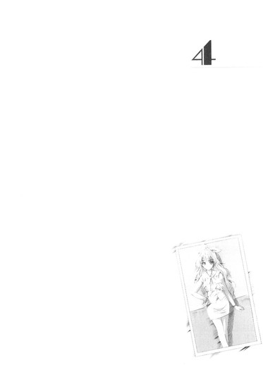
４
人も車も通らない、静まり返った夜明け前の道を万里はもがくように走っていた。
まだ空は暗い。
空の半分を覆った雲は、漆黒の影に見える。風の速度でぐんぐん流れていって、その向こうには淡い青の光がわずかに滲み始めている。まるで夜が割れるようだと思う。
万里が始発に飛び乗ったのは、午前五時過ぎ。
ＮＡＮＡ先輩とリンダ、柳澤はまだライブハウスに残っていて、そのまま打ち上げに参加しているはずだ。
あの、香子との顛末。
......あの後のリンダとの気まずさったら、なかった。ごめんごめんごめん、私ちょっと飲んで酔ってるの、ほんとごめん、と後輩に頭を下げ、必死に謝り倒すリンダと、無言のままで立ち竦む香子と。酒をかぶって引っぱたかれて、女々しく頬を押さえている女装の万里と。おもしろそうに眺めている客たちと。
トラブルの予感を察知したＮＡＮＡ先輩が割って入ってくれて客を散らし、リンダはそのまま腕を引っ張られ、カウンターの向こうへ連れていかれた。
万里もその素早い行動を見て我に返り、棒立ちのままの香子の手を掴んでバックヤードに引き込み、とにかく、と自分の部屋の鍵を手渡した。
今はバイト中だからどうにもできない、ちゃんと話をしたいから部屋で待っていてほしい、お願いだから冷静に、と懇願したのだ。香子はなにも言わず、手の中に握らされた鍵を見ていた。なんて目をしているんだ、と万里は震えた。
でも返事を待っていることもできなくて、万里はまた会場へと取って返したのだが、さっきまでの熱狂はどこへやら──いや、パーティはまだまだ盛り上がっていたのだ。
ただ、万里にかかっていた魔法は解けてしまったようだった。
ガムも今の騒動で本当に飲み込んでしまい、いまや、ここにいるのはただの多田万里。クールな女装子でもなんでもない、日常と地続きのアルバイト。普通の学生。
ノリもテンションも見失い、銀盆を片手に、ただ酒を配るだけの仕事に戻る。その後はリンダと話すこともできず、ひたすらバイトが終わる時間を待つばかりだった。頬を引っぱたかれたときに香子の手が唇の傷にちょうどヒットして、口元はその間ずっとじんじんとリアルな痛みを万里に与え続けた。
考えるのは、どうしよう、とそればかり。
どう思われただろう。嘘がばれた。リンダといちゃついているのを見られた。鍵を渡してしまった。どうしよう......。
香子が呆れて帰ってしまったら、自分は部屋に戻ることもできない。
でも、呆れられて、嫌われて、ふられても、当然のことをしたのかもしれない。
......そんなことをただ思い、時間は暗く塗り潰されていった。バイトが終わって社長から約束どおりにとっぱらいで現金を手渡されても、「使い道なくなったかも」としか思えなかった。
そして一人、友人たちに帰るとも言わず、とにかく大急ぎで着替えてざっと顔を洗って店を出た。走って駅へ向かった。始発に乗り合わせた人々は、メイクの油と痕跡を顔にこってり残した若者の一人になど特別注意を払いはしなかった。
シートに腰掛けて、携帯を見た。メールが、60件以上。今どこ？なんで返信しないの？なにしてるの？大丈夫......？開ききることもできない。着信履歴も全部香子で埋め尽くされていて、万里は顔を両手で覆った。ため息もでない。息なんかできない。
連絡がつかなくなった10時ごろから、ずっと、香子は万里の行方を捜し続けていたのだ。
家行くから、が午前０時。
来たけどなんでいないの、が、その一時間後。
万里が普段行きそうなエリアのコンビニからファミレス、飲み屋、柳澤の家、大学付近、あちこち捜し回って、一度だけ行ったことがあるライブハウスに来たのが午前三時半、すぎ。
ハイヒールにワンピース一枚で、完全なパニック状態で、たった一人で、香子は東京中を駆け回っていたのだ。嘘をついて消えた万里の姿を捜して。
どこかで事故にあったか、急病になったかして、倒れているのだと思い込んでしまったらしい。メールにはそんな文言が散っていた。今いくからね！大丈夫だからね！絶対私が見つけてあげるからね！──前髪をぐしゃぐしゃに掻き回し、万里は言葉もない。
本当にない。
自分が悪い。
香子が自分にべったりで、思い込みも強くて、こうと決めたらまっしぐらな人だとわかっていながら、嘘をついて、連絡がつかないようにしていたのだ。
そうしてやっと見つけた先では、自分は、リンダと楽しくバイトに勤しんでいた。香子があんなに嫌がっていたのに。
そして、そのリンダを、自分は──。
なにを言われても、どう思われても、言い訳なんかできないと思った。香子が思うことのすべてを、その望みのすべてを、ただ丸ごとに受け入れるしかない。
やがて自宅の駅にたどり着き、改札を抜けて万里はまた走った。飛び込んだ自分のマンションの部屋の鍵はしかし開いていて、
「......加賀さん......？」
夜明け前の静かな闇の中に、香子は一人、座っていた。
携帯をいじりもしないで、本当にぼんやりと、泣きもせずに。
「加賀さん、あの......ほんと......」
万里は必死に言葉を探しながら、蹴り飛ばすように靴を脱いだ。部屋に上がって、香子の傍らに倒れるように座り込む。跳ねる呼吸を押さえ、喘ぐ喉を絞り、とにかく謝罪のひと言を発しようとして、
「お酒をかけてごめんなさい。ぶったことも。まだケガ、治ってないのに。ごめんね」
香子に先を越されてしまった。
「......そういうことをしない『いい彼女』になりたかったのに、また、だめだったよ。やっぱり。......どうしても、だめだったよ」
香子に、自分を責めさせてしまった。
心臓が掴まれたようになって、万里はなにも言えないまま息を飲んだ。覚悟は決めたはずだったのに、この状況の恐ろしさがいきなり胸に迫って喉が詰まる。
はっきりと、わかった。
得られたと思った愛しい人を、失うプロセスの只中にいるのだ、自分は。今。
もうこの人は、自分を、好きではない。二度と笑顔を見せてはくれない。自分を探してはくれない。求めてくれない。
「......ご......」
もう、自分は、彼女の中に、見当たらない。
俺が消えてしまう。どこにもいなくなってしまう。
なくなってしまう──
「......ごめんなさい！ 本当にごめん！ ......ごめん......っ！」
半ば土下座するようなポーズで、万里は香子の傍らに座り込んだまま、繰り返し頭を下げてみせる。
「俺は、加賀さんを、海に連れて行きたかったんだ。どうしても。おごってもらったりせずにちゃんと彼氏らしく、かっこよくしたかった。どうしてもどうしても、金が欲しかったんだ。だから、加賀さんに嘘をついて内緒でバイトをした。リンダ先輩が一緒なんて知らなかった。でも一緒で、二人して見せ物みたいな感じでいるうちになんだかテンションが変になっちゃって、客を盛り上げるためにああやってくっついた。それだけなんだほんとに。心配かけてごめん。嘘もごめん。本当にごめんなさい、ごめん、ごめん、ごめん......」
何度も何度も、必死に頭を下げてみせる。額が床に当たって何度も音を立てる。
失うことがリアルになると、考えていたよりも自分はずっと必死だった。仕方ないなんて思えない。諦めるなんてできない。なんとかならないか、どうにかならないか、許してもらえる方法はないか、火がついたように脳が考えている。許してもらえるならなんだってしようと声が震えている。床についた手も震えている。
いまさらだ。
わかっている。
でも、怖いのだ。
怖くて怖くてどうしようもない。耐えられない。
すがりつけるものならすがりつきたい。香子が人生から消えるなんて、考えられない。自分自身が消えてしまうようだった。なんにもなくなってしまうようだった。そうやって、からっぽになって、全部、「また」全部を、失ってしまう。だからどうか、なんだってするから、なんだって話すから、だから、頼むから、どうか、どうか──。
香子はしばらく黙っていて、やがて、
「......っ......」
なにか言おうとする気配がわかった。万里は動物みたいに素早く目を上げ、香子の顔を見た。香子は口を一度開き、
「......じゃあ、なんで......」
そこまで言ってまた閉じ、再び黙る。口に含んだ食べ物の味を確かめているみたいな不思議な顔をして二度、三度、首を傾げ、微笑もうとして、
「......リ、」
ひっ、と小さく喉を鳴らしてまた黙る。
目を閉じる。
数をかぞえるみたいにそのまま何度か息をして、目を開く。万里を見る。そして、
「それだけ、とか、言って、」
唇は笑みの形を作りながら、しかし細かに震えていた。
「......嘘は、......いやだ......！」
万里の目の前で、香子の白い指が部屋の一隅を指した。
意味がわかって、万里の息が大きく跳ねた。
香子が指したのは、本棚の代わりに置いているカラーボックス。それは、あの写真が忽然と消えた場所。
やっぱり香子は見たのだ、あれを。
そしてずっと黙っていたのだ。
万里が語るのを、ずっと、黙って待っていたのだ。
「......ご、め......」
どれだけの裏切りと、失望と、嘘と、ごまかしと......自分が香子に与えていたものを数えて、万里はほとんど呆然と目を見開く。幸せにしたいなんて、笑顔が欲しいなんて、どの口が言えた。
一体どうやって、そんなことをのたまう自分を、こんな野郎を、信用すればいいんだ。
「......リンダ、先輩、は、」
声を絞り出した。
万里の声を聞きながら、香子は身じろぎもせずにいた。
「記憶を失くす前の、同級生だった。同じ高校の、同じクラスで、同じ陸上部で、友達だった。......俺は完全に忘れてしまっていて、なにも知らないまま、偶然に再会した。リンダはもちろんすぐに俺のことをわかって、でも、俺が混乱しないようにって、しばらくただの先輩のふりをしてくれてた」
語る声に、心の色はもはや映せない。
ただ、語る。それしかできない。
「......なんで」
香子は身体を動かさず、
「私に言ってくれなかったの......？」
囁くように訊ねる。
「......加賀さんには、知られたくなかったから。俺は、記憶を失くす前、リンダのことが好きだった。そういうのを気にしてほしくなかった」
灯りもつけない闇の中で、香子は座り込んだままの体勢でいた。足を崩してぼんやりと万里の顔を見ていた。
ゆっくりと瞬く、瞳。
「......それは、つまり、私が......うざいタイプの女、だから......？どうせうるさく騒ぎ立ててめんどくさい、とか、思ったから......？」
「違う。俺に、やましいところがあるから」
もうこの人に嘘はつけない。
隠し事などできない。
捧げられるものがあるとしたら、正直さ。それだけだと万里は思った。もうそれぐらいしか、残っていない。だから口も動き続けた。
「記憶が、蘇るときがある」
「......えぇ......？ な、なに......？」
「いきなりフラッシュバックみたいに、自分ではどうにもできない。リンダのところに帰りたいって、魂が、命が、嵐のように、泣き叫ぶときがある」
「......」
絶句、というのはこういう状態をいうのだと万里は初めて知った。
香子は絶句して、のけぞるように身を反らし、そのまま数秒息を詰めて、そして、
「......なんで、それを、......言うの......!?」
ガクン、と、首の取れた人形みたいに前方に首を戻した。
美貌がくしゃくしゃになって、睫毛の下から俯いた頬に涙が伝う。食い縛るみたいに歪んだ口元から顎まで滴り、床に落ちる。
「いい彼女に、なりたかったんだってば......っ！写真を見たときも、多田くんが話してくれるのを待ってようって思ったんだよっ！問い詰めたり、精神不安定になったり、そういうのはもうやめようって思ったんだよっ！いいように解釈して、落ち着いていよう、うざくならないようにしようって思ったんだよっ！ど、努力を、したの......っ！したのよ！私はがんばってたの！で、でも、そんなこと言われちゃったら、私、私は、どうしたらいいの!?全部無駄だよ、全部ダメになっちゃったよ、もうほら、こうだもん......っ！こうなっちゃうんだよ！ねえもうどうしたらいいの、ねえこんなのいやだ、いやなんだってばぁっ！もうやだああああーっ！」
両手を床に打ち付けて、香子の泣き声はほとんど嗄れた絶叫に変わっていた。
万里は跳ねるように震えるその肩に触れることもできない。激しく上下する背中にも。もはや、謝ることもできない。
「な、なんで!? なんで言ったの!? ねえ、なんで、なんで!?なんで、なんでそれを、私に、言ったの!?」
「......加賀さんに、」
距離を詰めることもできないまま、万里は正直に言うことしかできない。
「誠実で、ありたくて」
「私は知りたくなかったよ！」
悲鳴みたいに鋭く叩きつけられた、そんなひと言。
これが、最後の言葉──になるのだろうか。
香子が立ち上がって、万里はついに訪れた「終わり」を覚悟した。彼女はこのまま部屋を出て、行ってしまい、そして二度と戻らない。そう思ったのだ。
しかし、立ち上がった香子は身を投げ出すようにして距離を詰めて膝をつき、ぶつかる勢いで、座ったままの万里の首にしがみついてきた。
「加賀、さ......っ」
全体重を驚く万里の身体に預けて、その首筋に嗚咽する顔を押し付ける。
彼女の頬の熱さに万里はなにも言えなくなって、両目を一度強く閉じた。
涙に濡れて戦慄く唇が、
「多田くんこそ、嵐だよ......嵐のように私の心をかき乱す」
そう呟いて、また涙に沈んでいく。しゃくりあげて、しかし絶対に離れようとはしない。万里の首に回された手が、Ｔシャツの背中をきつく掴み締める。
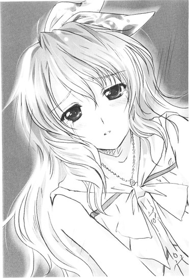
細い身体に、まだ触れてもいいのだろうか。迷いながら万里は、両手で香子の背中を包んだ。安心したみたいに、また香子の泣き声が子供のように甲高くなる。
「俺を、許してくれるの......？」
「もう思い出さないで」
涙に濡れた顔を上げ、香子は万里の目を見つめた。半ば開いた唇から漏れる息を跳ねさせ、
「......お願い。過去を、思い出さないで。それだけでいいの。たった一つ、私があなたに望むのは、それだけ。......だから......お願い......」
万里の答えを待っている。
香子の濡れた瞳は頼りなく揺れて、夜空に瞬く二つの星のように煌いている。
頷いて、万里は、
「......わかった。そうする」
約束をした。
化粧も流れた香子の泣き顔に、ようやく、ゆっくりと、柔らかな笑みが広がっていく。こんな男を、多田万里なんかを信じると、香子の星が瞬いて優しく囁く。
──コントロールできるようなものではないと、わかっているのに。また、ここまできて、できない約束を、嘘を、重ねるような男だというのに。
香子を抱きしめて、その肩越し。万里は一人、闇に目を開いた。動くものも、生きているものも、ここからは見えない。誰もいないからっぽの、無人の部屋しかこの目には映らない。
出会いの最初の春の日。柳澤は香子を指して「災厄だ」と言っていたっけ。いまや、と万里は思う。
香子にとっては、自分こそが災厄だった。本当に、とんでもないトラブルメーカーだ。やっかいを持ち込み、苦しめる。まるで通り魔だ。
彼女を見つけ、接近し、そしてこうして、捕まえて、傷つけて──。
「......多田くんを、これから、万里って呼んでもいい？」
「うん、いいよ」
「多田く......万里は、私を香子って呼んでくれる？」
「うん。いいよ、......香子」
「万里」
「香子」
「好きだよ。......なんでこんなふうになっちゃったのかわからないぐらい。でも、好きなの。本当に」
──なぜ。
俺なんかを。
訊ねたくなるそんな一言を、しかし万里は飲み込んだ。訊いても意味はないのだ。どんなに甘い答えを香子にもらっても、自分はそれを絶対に信用できない。
なぜならば、自分が一番、自分の無価値さを、自分がここに存在することの害悪を、罪の重さを、知っているから。
「......俺も香子が好きだよ。本当にごめん。......全部。ごめん。ごめんなさい」
ふ、と穏やかな笑みを浮かべて、香子は身体を離し、万里の手を握った。
握った万里の手で、自分の頬を包むようにする。
「......ひどい顔でしょ？ 私、ブスじゃない？」
「ううん、大丈夫だよ。俺こそなんか、メイクが落ちきってない気がする。ファンデーションみたいなの塗られちゃったし。目のところもなんかがっつりと色々」
「ほんとだ。目の下、黒くなってる」
「あ、やっぱり？ なんか妙に痒いなーって、さっきからおも、......」
ちゅっ、と。
触れるだけのキスだった。
しかし香子から、身を乗り出すようにして唇にくれたキスだった。
万里の手で自分の頬を包んだまま、香子は顔を俯ける。目を閉じて、一度そっと息をひそめる。そして、伏せた睫毛に翳る潤んだ瞳を揺らし、万里の目を見ないまま、
「......朝になったら、メイク落としを、買いにいかない？私はそれを、この部屋に置いておいて、泊まるときにはそれを使う......っていうことに、しよう、かな......って、思うの」
そう言うのだ。
朝まではここにいたい、と。
これからは、部屋に泊まるような関係になりたい、と。
「......加賀さ......香子」
身じろぎせずに、待っている。万里が動くのを、マスカラを涙で溶かした長い睫毛を震わせて。
万里はほとんど反射的に、包み込んでいた柔かな感触から手のひらをもぎ離した。
驚いたように香子が目を見開くが、
（見てみろ、多田万里。おまえのその手を）
万里は自分の手のひらを見つめて息もできない。
（加賀香子を傷つけるだけの暴力を秘めた、汚らわしい手だろ）
──ああ、本当だ。
「......万里......」
声を絞るようにして香子がもう一度、万里の手を握り締める。指を絡めて、力をこめる。
「ねえ、私、不安なの。......わかる？ わかって、くれる......？」
顔を上げて万里の目を覗き込み、また泣き出しそうに声を震わせる。
「どうしても、不安なんだよ......だって私たちにはなにもないんだもん。積み上げた時間も足りない。経験も足りない。思い出もない。......写真も、ない」
一度、指に力を入れて握り返して、万里はしかし、そっとその手を離した。
そうして香子の手を右左、そっと重ね合わせて、膝の上に戻してやる。これ以上触れる意志はないとはっきりわかりやすいように、そのまますこし距離をとる。
見捨てられた子供みたいに悲しげな顔をして、香子は万里を呆然と見やったが、
「なら、写真撮ろうか。今度。すぐにでも。いつでも。俺も香子との写真、欲しいよ。俺たち、そこからちゃんと始めようよ」
万里はにっこりと、笑顔を浮かべてみせた。精一杯に込めた全力は、誓いのつもりだった。
多田万里は、加賀香子を、二度と決して傷つけはしない。すべての迷いと過去をこの手で断ち切り、ただそのためだけに生きていく。
過去、現在、未来、すべての自分よりも、加賀香子の幸せを優先する。
「だからなにもあせったりしなくていいんだって。俺が不甲斐ないからって、無理させたくないよ」
ややあって、香子はこくんと頷いてみせた。
カーテンの向こうが薄青い光に透けている。夜明けだ、と万里は思った。
この夜が終わって、また、朝が来るのだ。
＊＊＊
昼下がりの駅の改札口でリンダを待ちながら、万里は写真を見ていた。
それは、高校生の自分とリンダが、同じ瞬間を生きていたという確かな証だった。
親指で、そっと自分の笑顔をなぞる。傍らで笑うリンダに、このとき、死ぬほど惚れている。──それが、俺。
確かに思う。俺、だったのだと。
写真をそっとバッグのポケットにしまい直して顔を上げると、
「多田万里！」
ちょうどリンダが階段を駆け上がってきて、こちらに手を振った。いかにも地元服なそっけないＴシャツにカーゴパンツ、サンダルのなりで、
「待った？ ていうか......ていうかさ......ほんっと！ごめん！ごめんね！」
息を切らして近づいてきながら両手を合わせてみせる。そして、
「昨日は酔ってたんだ、マジで！ あーどうしよう、もう......香子ちゃん怒ってたよね、当然だよね......ほんっと、もうマジ、私......さいってー......」
頭を下げた勢いのままがっくりと項垂れてしまう。慌てて万里は首を横に振りながら歩み寄って、
「や！ そんな気にしないで下さい！ 香子はもう大丈夫なんで！」
グッとおどけて親指を突き出してみせる。しかしリンダはそれを見ても笑ってはくれない。
「大丈夫ならなんの話すんのよ......？」
「その、ええと、まあ......いろいろと」
リンダには、今朝、『昨日の件で、ちょっとお話したいことがあるので、そちらに会いにいってもいいですか？』とメールを送った。そしてリンダの住む町に、万里は一人でやってきたのだ。
初めての駅で乗り換えて、初めての電車に乗った。そして、初めての駅の構内にいる。小さな売店だけがぽつんとあるきりの知らない景色の中で、リンダと会っている。
香子には、リンダ先輩と話してくる、とだけ言ってあった。だから写真を返してくれる？と。写真を持ってきた香子は、それ以上のことを訊こうとはしなかった。今は万里の部屋で、万里の帰りを待っている。
「とりあえず、どっかお店にでも入りませんか？」
「店なんかないんだよこの辺には。......しょうがないな、歩こうか」
リンダは北口、と書いてある方へ向かった。階段を下りていくその後を万里もついていく。高架になっていた駅から下りて、改札を抜けて、初めての町を見回した。
私鉄沿線の、小さな駅だった。
電車に乗っているときから思っていたが、随分田舎だ。ここも東京だとはにわかに信じがたかった。万里が住む町よりもだいぶ都心から離れているせいか、喧騒とは無縁の住宅街──なのだろうが、かすかに肥料のにおいが漂っている。多分、畑が近くにある。それがちょっと懐かしくて、万里はそんな自分を意外に思った。こんな自分でも、あの島田の町や家を、あの山の斜面の杉林の間際まで遥かに続く茶畑のにおいを、かすかに混じるガソリンや機械油のにおいを、ちゃんと故郷のように、懐かしいものとして感じているのだ。
きょろきょろしながら駅舎の庇の下から出た瞬間、「おお！」「うお！」と二人して思わず声を出してしまう。夏の暴力的なまでに強烈な日差しが、カッと全身に襲い掛かってくる。
高い建物がなくて空は広く、駅前にはいきなり一軒家が建ち並んでいた。確かに店らしきものはろくにないらしい。
妙に広々とした、大きな街路樹がずっと先まで続く歩道をリンダの後をついて歩いていく。豊かな枝ぶりの木の影の下を選んで渡るようにして、やがて開けた川べりに出た。
下草が覆う河川敷と、たっぷりとした河川。
水の匂いが夏らしく、すこし生臭くなっている。
真昼の川べりには、ぽつぽつと人の姿があった。犬を連れている人。赤ちゃんを連れている人。早足で歩いていく人もいるし、お年寄り同士で話し込んでいる人もいる。みんなちゃんと帽子をかぶり、あるいは日傘を差し、七月の光線から身を守っている。
リンダもコットン素材の帽子をかぶっていて、
「......さて。それじゃ、話を聞こうか。どうした？なにがあった？」
くるりと万里を振り返った。
触れればきっと焼けるように熱い踏み石に、くっきり黒い影が二つ。
広い川べりにずっと植えられているあれは、桜の木だろう。力強く繁った枝葉が、川の水面を滑る強い風に揺れるたび、ザアッと大きな音を立てる。
怖いような、妙に不安をかきたてられるような、枝と幹がきしむ音が万里の耳にも届いていた。
「昔の、ことです」
眩しげに細められる、リンダの茶色い目。
「......昔、俺たちは付き合っていたわけじゃなかった、って、先輩は言いましたよね」
「うん、そうだよ」
「俺は、先輩が好きでした。でも、先輩は、......リンダは、俺を好きじゃなかった。そうなんですよね」
リンダは帽子が風に飛ばされないように片手で押さえながら、しかしはっきりと、間を空けずに頷いてみせた。
「そうだよ。恋愛的な意味では、そう。あんたは友達だったけど、恋ではなかった。私はあんたを、好きじゃ、なかった」
バッグのポケットから写真を取り出した。
聞いたかよ、ちゃんと、と笑顔の自分に万里は胸の内で語りかけた。おまえにはっきりと聞かせたかったんだよ、と。
どんなに強く想っても、帰る場所だなんて想っても、それは一方通行だ。
リンダはおまえを「好きじゃない」。
だから、もう諦めろ。
死んでくれ。
消えろ。
「......っ......」
一気に写真を破ってしまおうとして、しかし、万里の指にはどうしても力が入らない。間抜けに両手で掴み締めたまま、何度か深呼吸をして、それでもこの手は動いてくれない。
リンダの目の前で万里は力なく俯いた。
──頼むから、消えてくれ。いやだ、いやだ、いやだ。どうか、お願いだ。いやだ、いやだ、いやだ。いなくなってくれ。いやだ。この胸の痛みごと消えてくれ。
（いやだ！）
リンダが好きだ。
リンダの傍にいたかった。ずっと一緒に笑っていたかった。リンダがいるだけでよかった。リンダなしでは、なにも、成り立ちはしなかった。生きている歓びも、幸せも、意味もなくて、万里はただリンダを探し続けていた。ずっとだ。本当にずっと、長い間。どれほど遠く隔てられても。もはや声すら届かなくなっても。ずっと探していた。帰りたかった。見つけてほしかった。
でもそれは一方通行の気持ちでしかなく。
そして加賀香子を傷つけもして。
震える手から力が抜けた。写真が滑り落ちて、風にさらわれる寸前、リンダの白い指が宙で掴んだ。
「......多田、万里......あんた、大丈夫なの」
「......いろいろ、お世話になりました。今までありがとうございました」
必死に万里は、顔を上げた。
写真を失った両手はいまだ動かず、半端な形で震えながら固まったまま。それでも笑顔は作れているはずだと思う。
でもなにも見えてはいない。聞こえてもいない。言うべきことしか頭にはない。
「これからは、過去に俺と知り合いだったっていうの、全部関係なしにして欲しいんです。やっぱ、なんだかんだいって、ストレスなんです。自分が記憶喪失っていうのを意識したくないんです。どうせ思い出すこともできないし。だから先輩に気を遣っていただいても申し訳ないばっかりで。俺、過去と決別したいんです。完全になかったことにしたいんです。だから、」
いやだ、いやだ、と叫ぶ気持ちが、まとわりつくようだった。
考えてきた言葉を発しながら、万里はそれを引きちぎっていく。そうして投げ捨て、二度と振り返りはしないと決めている。
「だから、もうこれからはただのサークルの先輩と後輩ってだけで。俺のこと、気に留めてくれなくて全然いいです。俺も、やっぱ、結局、そうとしか思えないし」
こうして立って、口を動かし続けるだけで精一杯だった。
リンダの表情など見ることもできない。気持ちを考えることなどできない。万里はただひたすらに、心の一部を引きちぎって捨てるだけ。
血が出る、と思った。
自分の組織だったのだ、確かに。
あの夜蘇ったリンダへの想いの残滓は、本当に、多田万里という人間を形作る組織だった。あきらかに自分の一部だった。肉だった。
それを自らむしり、痛みに耐えて、泣き声を上げずに万里は香子を想う。傷つけてはいけない恋人の顔。
目の前には、かつて想った人の顔。
失礼ではあるけれど、傷つけてはいないはずだった。万里はそんな考えにすがって、夢中で口を動かし続けている。
──だってリンダは俺を好きではなかったのだから。
「ていうか、実はまあ、ぶっちゃけ、香子がリンダ先輩のことをちょっと気にしているんです。彼女のこと、大事にしたいんで、はっきりと距離を置かせていただきたいんです。って、なんかあれ、ごめんなさい、すっげー勘違い野郎っぽい発言になっちゃったんですけど......」
誰にも見えない血を心から吹き出しながらへらへらと万里は笑ってみせた。まだ治らない唇の傷が痛む。
「......大丈夫」
リンダが、
「大丈夫だよ。わかるよ」
風の中で写真を片手で掴み、その手で帽子を押さえ、真夏の光の下、万里の言葉を聞いていた。
つばに隠れて、目が見えない。
唇だけが微笑んでいる。
「ちゃんとわかったから。だから、うん。そうだね。香子ちゃんが心配するのも仕方ないって思うよ、私も。そうするべきだと思う」
そして、
「......あ......！」
声を上げたのは万里の方だった。
手にしていた写真を、リンダは、勢いよく半分に破った。
重ねてさらに半分に。
もっとちぎって、小さくなって、二人の写真はバラバラになって、リンダの手の中から舞い上がった。そのまま風に吹き散らされてしまう。
あっという間に見えなくなって、どこか遠くへ飛んでいって、もはや取り戻すことなどできない。二度と、だ。
「これでいいんだよ、万里」
＊＊＊
ゆっくりとその唇が動いて、
「全部逆なんだよ、万里」
俺は傘を差し出すこともできないまま、リンダの声を聞いていた。
冷え切って、寒いのだろう。その声はひどく震えていた。
リンダのコートを濡らす真冬の夜の雨の雫は半ば凍りかけていて、グリーンの生地をキラキラと光らせている。
俺が大トリの作業を終えるのを、リンダはこうして凍えながら、ずっとこの玄関の庇の下で待っていたのだ。
そして、今、言葉を搾り出している。
「......私は、自分でもわからないほど、時々すっごくバカなんだ。なぜだか、思っているのと逆のことばっかり言ってしまうことがある。......まっさかさま、って、こともある」
その真っ白な頬を、
「......バカな私を、許してよ」
まるで涙みたいに氷雨の雫が伝い落ちた。
それを見てしまった、その瞬間だった。
足は、自分の意志とは関係なく歩き出していた。駆け出していた。絶対に許さない、二度と喋らない、と決めていたはずなのに、俺の身体は勝手に動いていた。そしてこの手は、
「......ゆるさねー。俺だって、リンダなんかぜんっぜん、好きじゃねー」
リンダの頭上に傘を差し出していた。
口から出た言葉だけは意志の通りだったけれど、もはやそれがつまらない形骸に過ぎないのは俺自身にも、リンダにもわかっていただろう。
「ごめん。ほんと、ごめん、万里......！」
傘の下でこちらを見上げて、リンダは必死の形相で小さく呟いた。喘ぐように開いた唇が、色をなくして震えていた。
炎が灯ったのは、そのときだった。
この胸の奥に、火がついた。
「......ったく。どういうツラしてんだよ!?」
「うぐ！」
いつものようにふざけて、リンダのわき腹に軽くパンチを当ててやる。仲良くじゃれあうのを再開してやる素振りで、もういいよ、帰ろうぜ、と言ってやる。
好きじゃない。
その言葉がまっさかさまなら、リンダは俺を──。
まさか、と歩きながら首を横に振った。そんなわけない。そこまでのわけない。「好きじゃなくはない」と「好き」のニュアンスの違いぐらいは自分にもわかるのだ。
でも、でももしかしたら、すこしは。
......希望、期待、それぐらいはしてもいいのかもしれない。
もしかしたら、俺たちは、これからどうにかなるのかもしれない。俺はリンダの傍らで、一つの傘の下で顔を俯け、胸の炎の熱さに耐えていた。
そんなふうにして、このとき俺とリンダは絶交の危機から脱し、仲直りに成功したのだ。
俺はでも、あの十日間のことをひどく後悔している。
日々に終わりがあることをちゃんとわかっていたならば、限りがあることをわかっていたならば、あんなふうにつまらない意地を張ったりしなかった。時間には限りがあったのに、そして俺のはことさらに短かったのに、せっかくの時間を丸々十日間も、俺は自分で無駄にしてしまったのだ。
多田万里が、一人、歩いていく。
俺はその後ろを、黙ってついていく。
この俺の姿を振り返って見てみろ、と言ってやりたい。どうせ言ったところでこの声が届きはしないのはわかっている。それでも、言ってやりたい。
見てみろ。
血まみれだ。
そして自分の姿も見てみろ。
おまえだって血まみれだ。
自身の一部を力ずくで引き剥がした傷が、それだ。その傷に気づかずにいられるならそのままでいればいい。後ろを振り返ることもせず、立ち止まって己を見ることもせず、どんどん前へ歩いていくがいい。
でもやがて思い出す日がくるだろう。
あの日、おまえが川底から引き上げられたときの、血まみれの、自分自身の姿を。おまえはすべてを失った、傷だらけの肉体でしかないということを。
俺は、......俺たちは。
あのときも、今も、血にまみれたおまえの姿をこうして見ている。
＊＊＊
「......まーたポーズ決めてる！ 不自然だからやめろって！」
万里は思わず噴き出して、構えていたカメラを下ろした。笑うと手が震えてしまって、これではうまく撮れるわけがない。
「えっ？ ポーズなんてしてないよ？」
「してたじゃん！」
「してないってば」
そう言うが、もう一度カメラを構えてみると、香子はやっぱり片手を腰に。足を交差させて首をかしげ、キメ顔。完璧すぎるモデル立ちをびしっと決めてみせるのだ。おかしくて、万里はやっぱり笑ってしまう。香子もつられたみたいに「あれー？」などと言いつつ笑い出す。
さっきからずっとこんなことばかりで、いつまでたっても、香子の望むような「自然な感じで、いかにも日常なスナップ」など撮れそうもなかった。
二人は、万里の部屋にいた。
デジタルカメラは、香子が持ってきた。
「ていうか、私一人を被写体にしようとするから意識しちゃうんだよ」
壁際にいた香子は万里に歩み寄るなり、ぐっと腕を掴み、カメラを持ったその手を伸ばし、レンズを自分たちの方に向ける。頬をくっつけあって、
「二人で一緒に写りたいんだもん。ほら、......はい、笑って！」
「......う......」
慣れないせいで、うまく顔を作れない自分撮りモード。緊張してしまった自覚もあって、万里は照れて、結局へなへなと笑ってしまう。
そこにもう一度、フラッシュが光った。やっと二人の笑顔が撮れているかもしれない。
嬉しげに確認しようとする香子の背中をちょっと押して、万里は、
「なあ香子、外で撮らない？ 暑そうだけど天気いいし」
窓の外を指差して見せた。
真夏の午後。
真っ青な空の遠くに、タフな入道雲がもくもくと立ち上がっているい白い日差しに歩道の木々の葉が、生き生きと輝いている。今、この瞬間の生命を、力いっぱい鮮やかに輝かせている。
あの景色の中で、香子と笑いあいたいと万里は思ったのだ。
「うん！」
笑いながら子供みたいに頷いて、香子はバッグも持たずに玄関へ向かった。玄関には、片付け切れない靴がだらしなく置きっぱなしになっている。それらを踏まないようにして、先に香子がドアを開く。
散らかった靴の中には、蛍光イエローのナイキもあった。
右と左がバラバラに玄関ドアへ向かっていて、今にも外へ飛び出そうと、走り出そうとしたがっているみたいに見えた。
万里は、それを注意深くまたぎ超えて、サンダルに足をつっこむ。
万里ー！ 早くー！ と、名前を呼ぶ声が聞こえる。
あとがき
この本が皆様のお手元に届く頃、私は34歳になっております。二月二十四日生まれ、魚座のＯ型、竹宮でございます。あれよあれよと終わりゆく三十代前半戦......いやーどうしようどうしよう。デビュー以来ずっとお世話になっている担当さんとも、日々、「お互い気がつけばすごい年齢になっちゃいましたね......」「なっちゃいましたね......」と真顔で渋く言い合っております。もはや取り返しのつかない、私たちの三十代前半の日々。ちょっと油断したらもう、そこは、ア、ア、......なんだ!?するっとこの言葉が出ねえ！えい、アラッ、アラフッ......
アラフォー。
（ひー！）
の、世界。......こここ怖いですね。ふふふ震えてなどおらぬ！......おらぬぅ......！
......そんなこんなで気がつけば、私は34だし、「ゴールデンタイム」も４巻まで巻数を重ねて参りました。ここまでお付き合い下さった皆様、今回もお手にとっていただき、本当にありがとうございました。楽しんでいただけましたでしょうか？もう、ほんっっっ......とうに！まっっっ......たく！勉強をしない大学生ばかりが出てきて、現役の大学生読者の方々にはそろそろ呆れられているのではないか、などと思っております。どうぞその辺のところは、「しょうもねえ34歳だな！」と、笑ってお許しいただければ幸いです......。
さて、最近の私は、間近に迫ったアラフォーワールドから目を逸らしたいばかりに、目先の欲望を追いまくっております。買い物依存症に陥りかけているのかもしれません。なにを買っているかというと、乳液です。乳液が大好きで、乳液ばかりを狂ったように買っております。
それなりの歳の女は、たいがい、顔を洗ったら化粧水をつけて、美容液をつけて、乳液をつけて、まだ乾燥が気になったらクリームもつけて、というような「顔の手順」を踏んでいます。私はその中でも、化粧水や美容液にはあまり興味がなくて、でもつけないといけない気がするから義務的にぺっぺっとやっておく、という感じなのですが。
乳液。
こいつは、好きなんです。理由は単純で、顔につける感触が、ぬぺえ～......と気持ちいいから。今時は各メーカー、ぬめぬめ度が高いヤツ、さっぱりしたヤツ、良い匂いのヤツ、臭いヤツ（これはだめだろう）、肌によく効くヤツ、肌が荒れるヤツ（これもだめだろう）、本当に色々種類がありまして、つい次々にあれもこれもと欲しくなってしまうのです。しかも顔につけるだけでは飽き足らず、思わずボディまでいってしまう。こんなことをしていたらものすごい量を使ってしまう......いけない、ＭＯＴＴＡＩＮＡＩ、そう理性では思いつつも、本能が。
要するにあれです。たとえば真夏の暑い日。汗だらだらのべったりで喫茶店に入ったら、冷たいおしぼりが目の前に出てくる。それで手を拭く。ふー、と一息ついて。......そこで止まれますか？って話です。止まれませんでしょう？つい、顔もいってしまいますでしょう？あんな感じです。もういい、全身いったれえ～......と。ああ～......ぬぺえ～......と。背徳の全身乳液。
とはいえ、ボディ用の乳液というものもこの世にはもちろんありまして、理論上はそれをつけていればいいはずなんですが、やっぱりちょっとそれではなにかが違う。き、禁断の！みたいな感じが足りない。あああそれは顔用だよお兄ちゃあん！ひぎー手足ぃぃ！くるぶしぃぃ！あぎゃーかかとぉぉー！......っていう感覚ごと、私は乳液を楽しみたいのです。この人はなにを言っているの？って感じですか。大丈夫、そういう視線を向けられるのに、私は本当に慣れています。
そんなふうに全身乳液を楽しんでいると、どんどん減って無くなっていくし、無くなっては困るからどんどん買うし、で、乳液買いまくり祭りは今のところ終わりが見えません。デパートやドラッグストアに行くと、無意識に目が乳液を探してしまう。ＳＮ状態......さながら、なまはげ状態です。どこかにいい乳液ねーかー！です。全国の乳液マニアの皆様、おすすめの乳液があったらぜひ教えて下さい。ご当地乳液みたいなの、どこかにありませんか？
というわけで。改めまして、こんなあとがきの最後までお付き合い下さいました皆様。本当に、どうもありがとうございました！この本をお手にとっていただいたこと、心よりお礼申し上げます。次巻もぜひぜひ、よろしくお願いいたします！そして駒都えーじ先生、担当の湯浅さま、今回もお世話になりました。一足お先にアラフォーの世界で私の到着をお待ち下さいませ。
底本：ゴールデンタイム４ 裏腹なる don't look back
竹宮ゆゆこ
二〇一二年三月十日 初版発行